Análisis exploratorio.#
1. Introducción y contexto#
El análisis exploratorio de datos (EDA) tiene como objetivo entender cómo se comportan las ventas registradas en la base de datos Online Retail II de la UCI Machine Learning Repository. Con este análisis queremos identificar patrones como tendencias o estacionalidades, así como detectar posibles anomalías que podrían afectar futuros modelos de predicción. Esto nos ayudará a conocer mejor la estructura de los datos y prepararlos para análisis más avanzados.
La base de datos utilizada proviene de transacciones realizadas por una tienda en línea entre 2009 y 2011 con registros detallados por cada transacción. Para el análisis, agrupamos las ventas de forma diaria para estudiar el comportamiento general. Las unidades de medida corresponden a la cantidad de productos vendidos. La serie cubre un periodo de aproximadamente dos años, lo que permite observar variaciones a lo largo del tiempo, incluyendo posibles ciclos estacionales o eventos especiales.
El conjunto de datos completo incluye 1,033,036 registros después de combinar los datos de ambos años, proporcionando un panorama más amplio de las ventas en ese período.
Las variables principales son:
Invoice: Número de la factura que identifica cada transacción. StockCode: Código del producto vendido. Description: Descripción del producto. Quantity: Cantidad de productos vendidos en cada transacción. InvoiceDate: Fecha y hora en que se realizó la transacción. Price: Precio unitario del producto. Customer ID: Identificador único del cliente. Country: País desde donde se realizó la compra.
Para el análisis exploratorio, nos enfocamos en la variable Quantity (cantidad de productos vendidos) y InvoiceDate (fecha de la transacción), agrupando los datos a nivel diario para identificar patrones en el comportamiento de las ventas a lo largo del tiempo.
import pandas as pd
import matplotlib.pyplot as plt
from statsmodels.tsa.seasonal import seasonal_decompose
from statsmodels.tsa.seasonal import STL
from statsmodels.graphics.tsaplots import plot_acf
from statsmodels.graphics.tsaplots import plot_pacf
import numpy as np
import seaborn as sns
ruta = "C:/Users/ronal/Downloads/online_retail_II.xlsx"
sheets = pd.read_excel(ruta, sheet_name=None, engine="openpyxl") #Con este cpdogp se leeran todas las hojas del excel
data = pd.concat(sheets.values(), ignore_index=True) # Unir todas las hojas en un solo DataFrame
print(data.head())
---------------------------------------------------------------------------
KeyboardInterrupt Traceback (most recent call last)
Cell In[2], line 3
1 ruta = "C:/Users/ronal/Downloads/online_retail_II.xlsx"
----> 3 sheets = pd.read_excel(ruta, sheet_name=None, engine="openpyxl") #Con este cpdogp se leeran todas las hojas del excel
5 data = pd.concat(sheets.values(), ignore_index=True) # Unir todas las hojas en un solo DataFrame
7 print(data.head())
File ~\miniconda3\envs\series_de_tiempo\lib\site-packages\pandas\io\excel\_base.py:508, in read_excel(io, sheet_name, header, names, index_col, usecols, dtype, engine, converters, true_values, false_values, skiprows, nrows, na_values, keep_default_na, na_filter, verbose, parse_dates, date_parser, date_format, thousands, decimal, comment, skipfooter, storage_options, dtype_backend, engine_kwargs)
502 raise ValueError(
503 "Engine should not be specified when passing "
504 "an ExcelFile - ExcelFile already has the engine set"
505 )
507 try:
--> 508 data = io.parse(
509 sheet_name=sheet_name,
510 header=header,
511 names=names,
512 index_col=index_col,
513 usecols=usecols,
514 dtype=dtype,
515 converters=converters,
516 true_values=true_values,
517 false_values=false_values,
518 skiprows=skiprows,
519 nrows=nrows,
520 na_values=na_values,
521 keep_default_na=keep_default_na,
522 na_filter=na_filter,
523 verbose=verbose,
524 parse_dates=parse_dates,
525 date_parser=date_parser,
526 date_format=date_format,
527 thousands=thousands,
528 decimal=decimal,
529 comment=comment,
530 skipfooter=skipfooter,
531 dtype_backend=dtype_backend,
532 )
533 finally:
534 # make sure to close opened file handles
535 if should_close:
File ~\miniconda3\envs\series_de_tiempo\lib\site-packages\pandas\io\excel\_base.py:1616, in ExcelFile.parse(self, sheet_name, header, names, index_col, usecols, converters, true_values, false_values, skiprows, nrows, na_values, parse_dates, date_parser, date_format, thousands, comment, skipfooter, dtype_backend, **kwds)
1576 def parse(
1577 self,
1578 sheet_name: str | int | list[int] | list[str] | None = 0,
(...)
1596 **kwds,
1597 ) -> DataFrame | dict[str, DataFrame] | dict[int, DataFrame]:
1598 """
1599 Parse specified sheet(s) into a DataFrame.
1600
(...)
1614 >>> file.parse() # doctest: +SKIP
1615 """
-> 1616 return self._reader.parse(
1617 sheet_name=sheet_name,
1618 header=header,
1619 names=names,
1620 index_col=index_col,
1621 usecols=usecols,
1622 converters=converters,
1623 true_values=true_values,
1624 false_values=false_values,
1625 skiprows=skiprows,
1626 nrows=nrows,
1627 na_values=na_values,
1628 parse_dates=parse_dates,
1629 date_parser=date_parser,
1630 date_format=date_format,
1631 thousands=thousands,
1632 comment=comment,
1633 skipfooter=skipfooter,
1634 dtype_backend=dtype_backend,
1635 **kwds,
1636 )
File ~\miniconda3\envs\series_de_tiempo\lib\site-packages\pandas\io\excel\_base.py:778, in BaseExcelReader.parse(self, sheet_name, header, names, index_col, usecols, dtype, true_values, false_values, skiprows, nrows, na_values, verbose, parse_dates, date_parser, date_format, thousands, decimal, comment, skipfooter, dtype_backend, **kwds)
775 sheet = self.get_sheet_by_index(asheetname)
777 file_rows_needed = self._calc_rows(header, index_col, skiprows, nrows)
--> 778 data = self.get_sheet_data(sheet, file_rows_needed)
779 if hasattr(sheet, "close"):
780 # pyxlsb opens two TemporaryFiles
781 sheet.close()
File ~\miniconda3\envs\series_de_tiempo\lib\site-packages\pandas\io\excel\_openpyxl.py:615, in OpenpyxlReader.get_sheet_data(self, sheet, file_rows_needed)
613 data: list[list[Scalar]] = []
614 last_row_with_data = -1
--> 615 for row_number, row in enumerate(sheet.rows):
616 converted_row = [self._convert_cell(cell) for cell in row]
617 while converted_row and converted_row[-1] == "":
618 # trim trailing empty elements
File ~\miniconda3\envs\series_de_tiempo\lib\site-packages\openpyxl\worksheet\_read_only.py:85, in ReadOnlyWorksheet._cells_by_row(self, min_col, min_row, max_col, max_row, values_only)
77 with self._get_source() as src:
78 parser = WorkSheetParser(src,
79 self._shared_strings,
80 data_only=self.parent.data_only,
81 epoch=self.parent.epoch,
82 date_formats=self.parent._date_formats,
83 timedelta_formats=self.parent._timedelta_formats)
---> 85 for idx, row in parser.parse():
86 if max_row is not None and idx > max_row:
87 break
File ~\miniconda3\envs\series_de_tiempo\lib\site-packages\openpyxl\worksheet\_reader.py:156, in WorkSheetParser.parse(self)
137 properties = {
138 PRINT_TAG: ('print_options', PrintOptions),
139 MARGINS_TAG: ('page_margins', PageMargins),
(...)
151
152 }
154 it = iterparse(self.source) # add a finaliser to close the source when this becomes possible
--> 156 for _, element in it:
157 tag_name = element.tag
158 if tag_name in dispatcher:
File ~\miniconda3\envs\series_de_tiempo\lib\xml\etree\ElementTree.py:1255, in iterparse.<locals>.iterator(source)
1253 yield from pullparser.read_events()
1254 # load event buffer
-> 1255 data = source.read(16 * 1024)
1256 if not data:
1257 break
File ~\miniconda3\envs\series_de_tiempo\lib\zipfile.py:926, in ZipExtFile.read(self, n)
924 self._offset = 0
925 while n > 0 and not self._eof:
--> 926 data = self._read1(n)
927 if n < len(data):
928 self._readbuffer = data
File ~\miniconda3\envs\series_de_tiempo\lib\zipfile.py:1002, in ZipExtFile._read1(self, n)
1000 elif self._compress_type == ZIP_DEFLATED:
1001 n = max(n, self.MIN_READ_SIZE)
-> 1002 data = self._decompressor.decompress(data, n)
1003 self._eof = (self._decompressor.eof or
1004 self._compress_left <= 0 and
1005 not self._decompressor.unconsumed_tail)
1006 if self._eof:
KeyboardInterrupt:
data = data.drop_duplicates() # Al unir las hojas se duplicaron algunas filas, este codigo eliminara las filas duplicadas
2 Análisis preliminar#
2.1 Inspección general#
print('Column names:', data.columns) #Nombre de las variables
Column names: Index(['Invoice', 'StockCode', 'Description', 'Quantity', 'InvoiceDate',
'Price', 'Customer ID', 'Country'],
dtype='object')
print('No. of rows, columns:', data.shape)#Numero de filas y columnas
No. of rows, columns: (1033036, 8)
El dataframe tiene 8 variables y 1033036 observaciones
print(data.head())
Invoice StockCode Description Quantity \
0 489434 85048 15CM CHRISTMAS GLASS BALL 20 LIGHTS 12
1 489434 79323P PINK CHERRY LIGHTS 12
2 489434 79323W WHITE CHERRY LIGHTS 12
3 489434 22041 RECORD FRAME 7" SINGLE SIZE 48
4 489434 21232 STRAWBERRY CERAMIC TRINKET BOX 24
InvoiceDate Price Customer ID Country
0 2009-12-01 07:45:00 6.95 13085.0 United Kingdom
1 2009-12-01 07:45:00 6.75 13085.0 United Kingdom
2 2009-12-01 07:45:00 6.75 13085.0 United Kingdom
3 2009-12-01 07:45:00 2.10 13085.0 United Kingdom
4 2009-12-01 07:45:00 1.25 13085.0 United Kingdom
print(data.tail())
Invoice StockCode Description Quantity \
1067366 581587 22899 CHILDREN'S APRON DOLLY GIRL 6
1067367 581587 23254 CHILDRENS CUTLERY DOLLY GIRL 4
1067368 581587 23255 CHILDRENS CUTLERY CIRCUS PARADE 4
1067369 581587 22138 BAKING SET 9 PIECE RETROSPOT 3
1067370 581587 POST POSTAGE 1
InvoiceDate Price Customer ID Country
1067366 2011-12-09 12:50:00 2.10 12680.0 France
1067367 2011-12-09 12:50:00 4.15 12680.0 France
1067368 2011-12-09 12:50:00 4.15 12680.0 France
1067369 2011-12-09 12:50:00 4.95 12680.0 France
1067370 2011-12-09 12:50:00 18.00 12680.0 France
Podemos observar que las observaciones inician el primero de enero del 2009 (01/01/2009) y finalizan el 09 de diciembre del 2011 (09/12/2011). Por tanto los datos tienen una coherencia temporal
print(data.isnull().sum()) #Deteccion de valores faltantes
Invoice 0
StockCode 0
Description 4275
Quantity 0
InvoiceDate 0
Price 0
Customer ID 235151
Country 0
dtype: int64
La columna Description cuenta con 4275 valores faltantes y la columna Customer ID tiene 235151.sin embargo, Descrition y Customer ID no afectan el análisis, por tanto podemos eliminar estas dos columna.
data2 = data.drop(columns=['Customer ID']) #Por comodidad llamaremos data2, al df al cual le eliminamos las columnas inncesarias
data2 = data2.drop(columns=['Description'])
print(data2.head())
Invoice StockCode Quantity InvoiceDate Price Country
0 489434 85048 12 2009-12-01 07:45:00 6.95 United Kingdom
1 489434 79323P 12 2009-12-01 07:45:00 6.75 United Kingdom
2 489434 79323W 12 2009-12-01 07:45:00 6.75 United Kingdom
3 489434 22041 48 2009-12-01 07:45:00 2.10 United Kingdom
4 489434 21232 24 2009-12-01 07:45:00 1.25 United Kingdom
Las variables “Customer ID” y “Description” fuerine eliminadas satisfactoriamente
2.2 Estadística descriptiva#
El objetivo de este análisis es predecir la cantidad de compras, por tanto la estadística descriptiva se realizara en la variable Quantity (cantidad)
promedio = data2['Quantity'].mean()
mediana = data2['Quantity'].median()
desviacion_std = data2['Quantity'].std()
minimo = data2['Quantity'].min()
maximo = data2['Quantity'].max()
percentiles = data2['Quantity'].quantile([0.25, 0.50, 0.75])
# Imprimir los resultados
print(f"Promedio: {promedio}")
print(f"Mediana: {mediana}")
print(f"Desviación Estándar: {desviacion_std}")
print(f"Mínimo: {minimo}")
print(f"Máximo: {maximo}")
print(f"Percentiles:\n{percentiles}")
Promedio: 10.076879218149223
Mediana: 3.0
Desviación Estándar: 175.19762799701013
Mínimo: -80995
Máximo: 80995
Percentiles:
0.25 1.0
0.50 3.0
0.75 10.0
Name: Quantity, dtype: float64
Podemos observar que la media de es de 10.0768, es decir, que por transacción se están vendiendo al redero de 10 artículos, sin embargo, la desviación estándar es extremadamente alto (175.1976) en comparación con la media y la mediana, lo que indica una gran variabilidad en los datos. El valor máximo es 80995 y el valor mínimo es -80995, partiendo del hecho de que los valores negativos indican devoluciones, esto quiere decir, la compra con mayor cantidad de objetos fue devuelta. La mayoría de los datos están concentrados en valores bajos, como lo muestran los percentiles: el 25% de las observaciones están por debajo de 1, el 50% por debajo de 3 y el 75% por debajo de 10. Estos resultados indican que, aunque la mayoría de las transacciones involucran cantidades pequeñas, la presencia de valores extremos distorsiona las medidas tradicionales de tendencia central.
Como nos interesa analizar el número de ventas y no el número de devoluciones, eliminaremos los valores negativos
data3 = data2[data2['Quantity'] > 0] # Eliminacion de valores negativos en la variable Quantity, ademas, ahora el df se llama data3
print('No. of rows, columns:', data3.shape)#Numero de filas y columnas
No. of rows, columns: (1010540, 6)
Al eliminar las filas con valores negativos en la cantidad (Quantity), obtendremos 1010540 observaciones. Además, también se eliminaron las variables irrelevantes, por tanto ahora tendremos 6
Q1 = data3['Quantity'].quantile(0.25) # Primer cuartil (Q1)
Q3 = data3['Quantity'].quantile(0.75) # Tercer cuartil (Q3)
IQR = Q3 - Q1 # Rango intercuartílico
print(f"Rango Intercuartílico (IQR): {IQR}")
Rango Intercuartílico (IQR): 11.0
plt.figure(figsize=(8,5))
plt.boxplot(data3['Quantity'], vert=False)
plt.title("Boxplot de la Cantidad de Compras")
plt.xlabel("Cantidad")
plt.show()
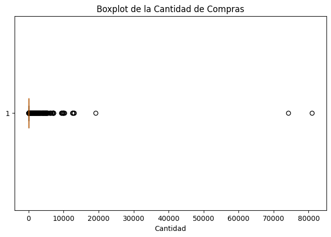
En el Box plot se observa que la mayoria de las compras se concentran en valores pequeños, sin embarrgo la escala se ve afectada por los valores extremos (mas de 80000 compras), los cuales indican que ciertos dias se hicieron compras muy grandes
import numpy as np
import scipy.stats as stats
import matplotlib.pyplot as plt
from statsmodels.graphics.gofplots import qqplot
from scipy.stats import shapiro, kstest, anderson
# Seleccionar la serie temporal que queremos analizar
datos = data3['Quantity'].dropna() # Asegurarse de eliminar valores NaN
# -------------------------------
# Pruebas de Normalidad
# -------------------------------
# 1. Prueba de Shapiro-Wilk
stat_shapiro, p_shapiro = shapiro(datos)
print(f"Shapiro-Wilk Test: Estadístico={stat_shapiro:.4f}, p-valor={p_shapiro:.4f}")
# 2. Prueba de Kolmogorov-Smirnov (comparando con distribución normal)
stat_ks, p_ks = kstest(datos, 'norm', args=(np.mean(datos), np.std(datos)))
print(f"Kolmogorov-Smirnov Test: Estadístico={stat_ks:.4f}, p-valor={p_ks:.4f}")
# 3. Prueba de Anderson-Darling
resultado_anderson = anderson(datos, dist='norm')
print(f"Anderson-Darling Test: Estadístico={resultado_anderson.statistic:.4f}")
print("Valores críticos:", resultado_anderson.critical_values)
print("Niveles de significancia:", resultado_anderson.significance_level)
# -------------------------------
# Visualización de la Distribución
# -------------------------------
plt.figure(figsize=(12, 5))
# Histograma de los datos
plt.subplot(1, 2, 1)
plt.hist(datos, bins=30, density=True, alpha=0.6, color='blue', edgecolor='black')
plt.title("Histograma de Ventas Diferenciadas")
plt.xlabel("Cantidad")
plt.ylabel("Frecuencia")
# QQ-Plot
plt.subplot(1, 2, 2)
qqplot(datos, line='s', ax=plt.gca())
plt.title("QQ-Plot de Ventas Diferenciadas")
plt.tight_layout()
plt.show()
c:\Users\ronal\miniconda3\envs\series_de_tiempo\lib\site-packages\scipy\stats\_morestats.py:1882: UserWarning: p-value may not be accurate for N > 5000.
warnings.warn("p-value may not be accurate for N > 5000.")
Shapiro-Wilk Test: Estadístico=0.0213, p-valor=0.0000
Kolmogorov-Smirnov Test: Estadístico=0.4687, p-valor=0.0000
Anderson-Darling Test: Estadístico=325250.7500
Valores críticos: [0.576 0.656 0.787 0.918 1.092]
Niveles de significancia: [15. 10. 5. 2.5 1. ]
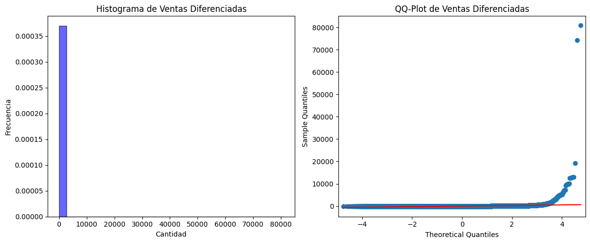
El histograma muestra una distribución altamente sesgada con una gran concentración de valores cercanos a cero y una presencia de valores extremos, lo que sugiere que los datos no siguen una distribución normal. Esto es evidente en el QQ-plot, donde los puntos se alejan significativamente de la línea roja de referencia en los extremos, indicando colas pesadas y una fuerte desviación de la normalidad. Los resultados de las pruebas de normalidad lo confirman. La prueba de Shapiro-Wilk muestra un p-valor menor a 0.05, lo que lleva al rechazo de la hipótesis nula de normalidad. De manera consistente, la prueba de Kolmogorov-Smirnov también presenta un p-valor inferior a 0.05, confirmando desviaciones significativas respecto a la normalidad. Asimismo, la prueba de Anderson-Darling arroja un estadístico que excede los valores críticos en todos los niveles de significancia evaluados, lo que respalda la conclusión de que la distribución no es normal. Estos hallazgos sugieren la presencia de una fuerte asimetría y valores atípicos
3 Visualizacion de la serie#
3.1 Visualizacion temporal#
import pandas as pd
import numpy as np
import matplotlib.pyplot as plt
# Asegurarse de que la columna 'InvoiceDate' esté en formato datetime
data3['InvoiceDate'] = pd.to_datetime(data3['InvoiceDate'], format='%Y-%m-%d %H:%M:%S')
# Establecer 'InvoiceDate' como el índice del DataFrame
data3.set_index('InvoiceDate', inplace=True)
# Aplicar el remuestreo para obtener la media diaria de 'Quantity'
daily = data3['Quantity'].resample('D')
daily_mean = daily.mean()
# Visualizar la serie original (por transacción) y la media diaria
fig = plt.figure(figsize=(10, 5))
ax = fig.add_subplot(1, 1, 1)
# Graficar la cantidad original (ventas por transacción)
data3['Quantity'].plot(ax=ax, color='b', label='Ventas por transacción')
# Graficar la media diaria
daily_mean.plot(ax=ax, color='r', label='Media diaria de ventas')
# Configurar el gráfico
ax.set_title('Ventas por transacción (azul) y Media diaria (rojo)')
ax.set_xlabel('Fecha')
ax.set_ylabel('Cantidad de productos vendidos')
ax.legend()
plt.show()
C:\Users\ronal\AppData\Local\Temp\ipykernel_18032\818573956.py:6: SettingWithCopyWarning:
A value is trying to be set on a copy of a slice from a DataFrame.
Try using .loc[row_indexer,col_indexer] = value instead
See the caveats in the documentation: https://pandas.pydata.org/pandas-docs/stable/user_guide/indexing.html#returning-a-view-versus-a-copy
data3['InvoiceDate'] = pd.to_datetime(data3['InvoiceDate'], format='%Y-%m-%d %H:%M:%S')
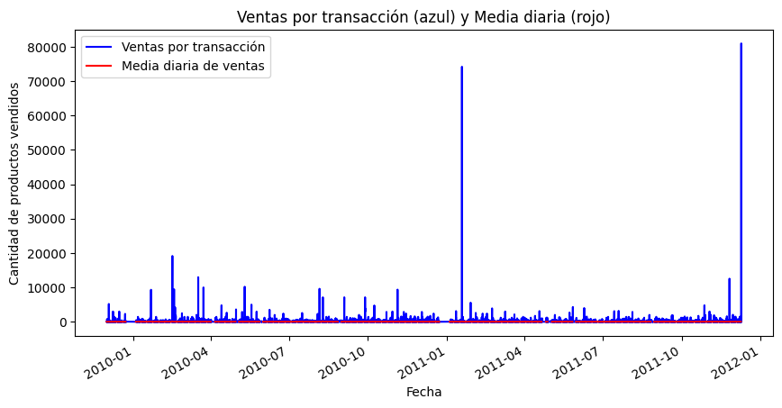
Las líneas azules representan las ventas por transacción, a finales del 2011 se observan picos extremos, al igual que en el boxplot, se observan compras extremadamente altas, estas compras podrían indicar errores en el registro de los datos o valores atípicos los cuales se deben analizar más a fondo. A pesar de estas fluctuaciones extremas, el comportamiento general de las ventas parece mantenerse consistente a lo largo del tiempo. Por otro lado, la línea roja, que representa la media diaria de ventas, muestra una tendencia estable y constante, lo que sugiere que, en promedio, las ventas diarias no se ven afectadas significativamente por estos eventos aislados.
import matplotlib.pyplot as plt
# Remuestreo por hora para obtener la suma de ventas por hora
ventas_por_hora = data3['Quantity'].resample('H').sum()
# Calcular la media diaria de las ventas por hora
media_diaria_por_hora = ventas_por_hora.resample('D').mean()
# Visualización de las ventas por hora y su media diaria
fig = plt.figure(figsize=(10, 5))
ax = fig.add_subplot(1, 1, 1)
# Graficar las ventas por hora
ventas_por_hora.plot(ax=ax, color='b', label='Ventas por hora')
# Graficar la media diaria de las ventas por hora
media_diaria_por_hora.plot(ax=ax, color='r', label='Media diaria de ventas por hora')
# Configuración del gráfico
ax.set_title('Ventas por hora (azul) y Media diaria de ventas por hora (rojo)')
ax.set_xlabel('Fecha')
ax.set_ylabel('Cantidad de productos vendidos')
ax.legend()
plt.show()
C:\Users\ronal\AppData\Local\Temp\ipykernel_18032\140281517.py:4: FutureWarning: 'H' is deprecated and will be removed in a future version, please use 'h' instead.
ventas_por_hora = data3['Quantity'].resample('H').sum()
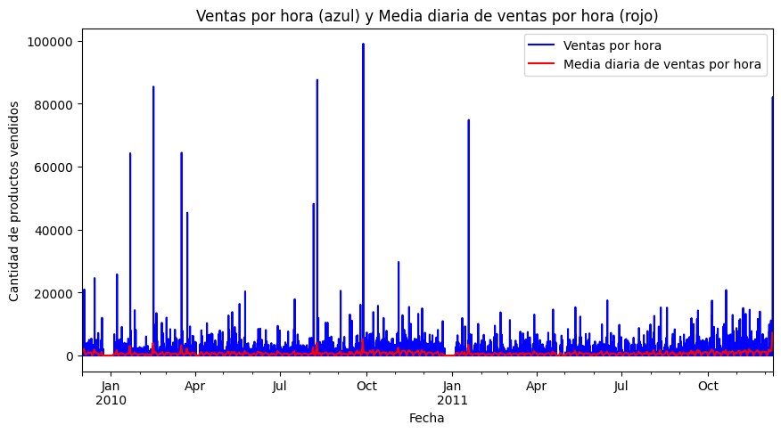
La gráfica muestra que las ventas por hora presentan alta variabilidad con picos que superan las 80,000 unidades, posiblemente debido a pedidos mayoristas, devoluciones masivas o errores de registro. Sin embargo, la media diaria de ventas por hora se mantiene estable, indicando que estas fluctuaciones extremas no afectan significativamente el comportamiento general de las ventas, que permanece uniforme a lo largo del tiempo.
import matplotlib.pyplot as plt
# Remuestreo por día para obtener la suma de ventas diarias
ventas_por_dia = data3['Quantity'].resample('D').sum()
# Calcular la media mensual de las ventas diarias para suavizar la serie
media_mensual_por_dia = ventas_por_dia.resample('M').mean()
# Visualización de las ventas por día y su media mensual
fig = plt.figure(figsize=(10, 5))
ax = fig.add_subplot(1, 1, 1)
# Graficar las ventas por día
ventas_por_dia.plot(ax=ax, color='b', label='Ventas por día')
# Graficar la media mensual de las ventas diarias
media_mensual_por_dia.plot(ax=ax, color='r', label='Media mensual de ventas diarias')
# Configuración del gráfico
ax.set_title('Ventas diarias (azul) y Media mensual de ventas diarias (rojo)')
ax.set_xlabel('Fecha')
ax.set_ylabel('Cantidad de productos vendidos')
ax.legend()
plt.show()
C:\Users\ronal\AppData\Local\Temp\ipykernel_18032\1945956961.py:7: FutureWarning: 'M' is deprecated and will be removed in a future version, please use 'ME' instead.
media_mensual_por_dia = ventas_por_dia.resample('M').mean()
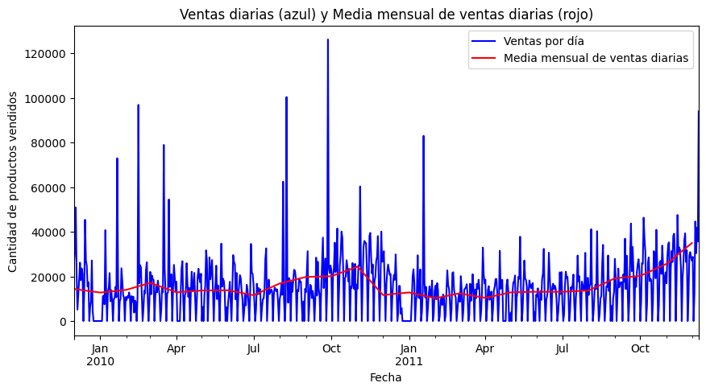
El gráfico muestra que, aunque las ventas diarias (línea azul) son muy variables con picos significativos, la media mensual (línea roja) refleja una tendencia general de crecimiento, especialmente hacia finales de 2011. Los picos podrían deberse a eventos especiales o errores en los datos, mientras que la variación mensual sugiere posibles patrones estacionales.
import matplotlib.pyplot as plt
# Remuestreo por semana para obtener la suma de ventas semanales
ventas_por_semana = data3['Quantity'].resample('W').sum()
# Calcular la media mensual de las ventas semanales para suavizar la serie
media_mensual_por_semana = ventas_por_semana.resample('M').mean()
# Visualización de las ventas por semana y su media mensual
fig = plt.figure(figsize=(10, 5))
ax = fig.add_subplot(1, 1, 1)
# Graficar las ventas por semana
ventas_por_semana.plot(ax=ax, color='b', label='Ventas por semana')
# Graficar la media mensual de las ventas semanales
media_mensual_por_semana.plot(ax=ax, color='r', label='Media mensual de ventas semanales')
# Configuración del gráfico
ax.set_title('Ventas semanales (azul) y Media mensual de ventas semanales (rojo)')
ax.set_xlabel('Fecha')
ax.set_ylabel('Cantidad de productos vendidos')
ax.legend()
plt.show()
C:\Users\ronal\AppData\Local\Temp\ipykernel_18032\19447228.py:7: FutureWarning: 'M' is deprecated and will be removed in a future version, please use 'ME' instead.
media_mensual_por_semana = ventas_por_semana.resample('M').mean()
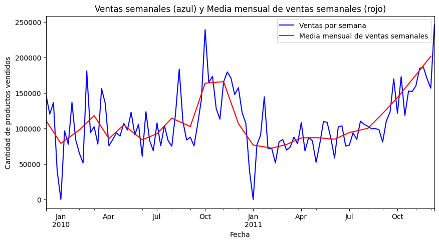
El gráfico muestra que las ventas semanales (línea azul) son inestables, con varios picos a lo largo del tiempo. Sin embargo, la media mensual (línea roja) sugiere una tendencia general al alza, especialmente a partir de mediados de 2011. Aunque hay caídas en algunos periodos, el crecimiento en las ventas es evidente hacia el final del gráfico.
# Remuestreo por mes para obtener la suma de ventas mensuales
ventas_por_mes = data3['Quantity'].resample('M').sum()
# Calcular la media trimestral de las ventas mensuales para suavizar aún más la serie
media_trimestral_por_mes = ventas_por_mes.resample('Q').mean()
# Visualización de las ventas por mes y su media trimestral
fig = plt.figure(figsize=(10, 5))
ax = fig.add_subplot(1, 1, 1)
# Graficar las ventas por mes
ventas_por_mes.plot(ax=ax, color='b', label='Ventas por mes')
# Graficar la media trimestral de las ventas mensuales
media_trimestral_por_mes.plot(ax=ax, color='r', label='Media trimestral de ventas mensuales')
# Configuración del gráfico
ax.set_title('Ventas mensuales (azul) y Media trimestral de ventas mensuales (rojo)')
ax.set_xlabel('Fecha')
ax.set_ylabel('Cantidad de productos vendidos')
ax.legend()
plt.show()
C:\Users\ronal\AppData\Local\Temp\ipykernel_18032\3446522307.py:2: FutureWarning: 'M' is deprecated and will be removed in a future version, please use 'ME' instead.
ventas_por_mes = data3['Quantity'].resample('M').sum()
C:\Users\ronal\AppData\Local\Temp\ipykernel_18032\3446522307.py:5: FutureWarning: 'Q' is deprecated and will be removed in a future version, please use 'QE' instead.
media_trimestral_por_mes = ventas_por_mes.resample('Q').mean()
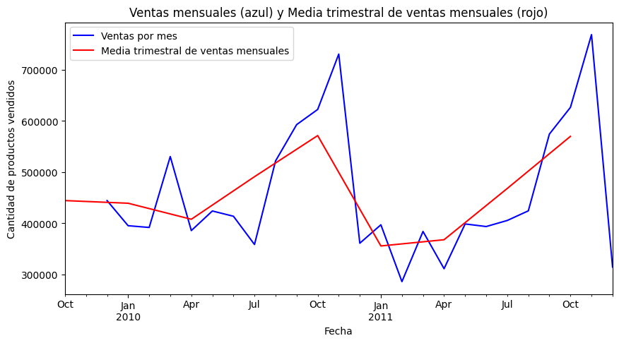
El gráfico muestra que las ventas mensuales (línea azul) son bastante irregulares, con picos destacados hacia finales de 2010 y 2011. Sin embargo, la media trimestral (línea roja) suaviza estas variaciones, indicando una tendencia general de crecimiento, especialmente en el segundo semestre de 2011.
3.2 Análisis de componentes#
Descomposición clásica (aditiva).#
from statsmodels.tsa.seasonal import seasonal_decompose
import matplotlib.pyplot as plt
# Remuestreo por día para obtener la suma de ventas diarias
ventas_por_dia = data3['Quantity'].resample('D').sum()
# Descomposición aditiva (para patrones de magnitud constante)
descomposicion_aditiva_dia = seasonal_decompose(ventas_por_dia, model='additive', period=7)
# Visualización de la descomposición aditiva diaria
fig, axes = plt.subplots(4, 1, figsize=(12, 8), sharex=True)
descomposicion_aditiva_dia.observed.plot(ax=axes[0], title='Serie Observada (Aditiva)', color='b')
descomposicion_aditiva_dia.trend.plot(ax=axes[1], title='Tendencia', color='g')
descomposicion_aditiva_dia.seasonal.plot(ax=axes[2], title='Estacionalidad Diaria', color='orange')
descomposicion_aditiva_dia.resid.plot(ax=axes[3], title='Residuales (Ruido)', color='r')
plt.tight_layout()
plt.show()
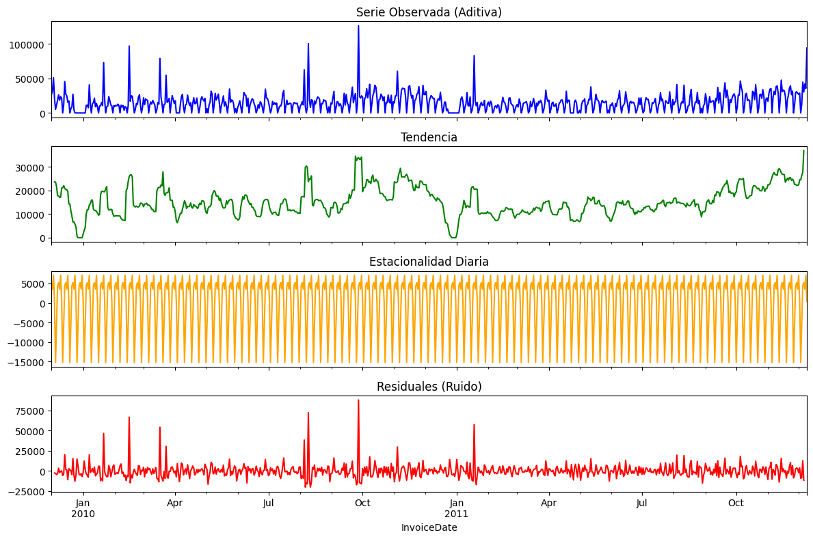
La gráfica muestra la descomposición aditiva de las ventas diarias. La primera sección es la serie original, donde se observan picos irregulares y fluctuaciones en las ventas. La segunda sección muestra la tendencia, con un incremento gradual hacia finales del periodo. La tercera sección representa la estacionalidad diaria, destacando patrones repetitivos que ocurren a lo largo de los días. Finalmente, los residuales indican el ruido o las variaciones no explicadas por la tendencia ni la estacionalidad, donde se observan algunos picos aislados que podrían deberse a eventos inusuales o errores.
from statsmodels.tsa import stattools, seasonal
# Remuestreo por semana para obtener la suma de ventas semanales
ventas_semanales = data3['Quantity'].resample('W').sum()
# Descomposición aditiva (modelo clásico)
decompose_model_aditivo = seasonal.seasonal_decompose(ventas_semanales, model='additive', period=4)
# Extraer los residuos (variaciones irregulares)
irr_var_aditivo = decompose_model_aditivo.resid
# Asegurarse de que no haya valores NaN antes de la prueba ADF
irr_var_limpios = irr_var_aditivo.loc[~pd.isnull(irr_var_aditivo)]
# Aplicar la prueba ADF sobre los residuos de la descomposición aditiva
adf_result_aditivo = stattools.adfuller(irr_var_limpios, autolag='AIC')
# Imprimir el p-valor de la prueba ADF
print('p-valor de la prueba ADF en las variaciones irregulares (residuos) de la descomposición aditiva:', adf_result_aditivo[1])
# Visualización de los componentes de la descomposición aditiva
fig, axarr = plt.subplots(4, sharex=True)
fig.set_size_inches(10, 8)
ventas_semanales.plot(ax=axarr[0], color='b', linestyle='-')
axarr[0].set_title('Ventas Semanales')
decompose_model_aditivo.trend.plot(color='r', linestyle='-', ax=axarr[1])
axarr[1].set_title('Componente de Tendencia (Aditiva)')
decompose_model_aditivo.seasonal.plot(color='g', linestyle='-', ax=axarr[2])
axarr[2].set_title('Componente Estacional (Aditiva)')
decompose_model_aditivo.resid.plot(color='k', linestyle='-', ax=axarr[3])
axarr[3].set_title('Variaciones Irregulares (Residuos Aditivos)')
plt.tight_layout(pad=0.4, w_pad=0.5, h_pad=2.0)
plt.xticks(rotation=10)
plt.show()
p-valor de la prueba ADF en las variaciones irregulares (residuos) de la descomposición aditiva: 5.4674969170685074e-14
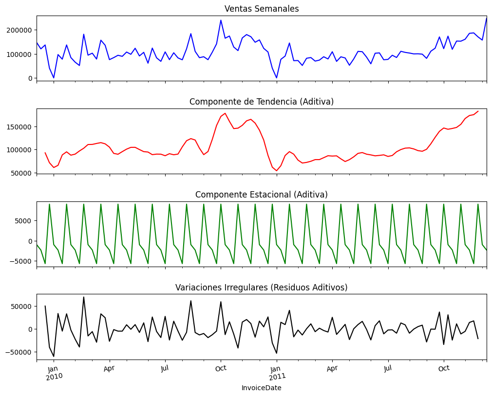
La gráfica muestra la descomposición aditiva de las ventas semanales. La primera parte es la serie original con fluctuaciones notables en ciertos periodos. La tendencia revela un crecimiento constante en las ventas a lo largo del tiempo, mientras que la estacionalidad semanal presenta patrones repetitivos característicos de cada semana. Por último, los residuales representan el ruido o las variaciones que no se explican por la tendencia ni la estacionalidad, donde se observan algunos picos irregulares que podrían deberse a factores externos o eventos inesperados.
En el componente de tendencia se observa un incremento inicial en las ventas seguido de un descenso alrededor de finales de 2010 y principios de 2011, posteriormente, se observa un repunte en las ventas hacia finales del período, este comportamiento sugiere que las ventas tienen ciclos de crecimiento y decrecimiento, posiblemente asociados a factores externos como campañas de marketing, cambios en la demanda estacional o fluctuaciones económicas.
El p-valor extremadamente bajo (5.47e-14) en la prueba ADF aplicada a los residuos indica que estos son altamente estacionarios. Esto confirma que la descomposición ha capturado correctamente la estructura subyacente de la serie temporal.
# Asegúrate de tener la serie temporal de ventas mensuales
ventas_por_mes = data3['Quantity'].resample('M').sum()
# Descomposición aditiva
descomposicion_aditiva = seasonal_decompose(ventas_por_mes, model='additive', period=12)
# Visualización de la descomposición aditiva
fig, axes = plt.subplots(4, 1, figsize=(10, 8), sharex=True)
descomposicion_aditiva.observed.plot(ax=axes[0], title='Serie Observada (Aditiva)', color='b')
descomposicion_aditiva.trend.plot(ax=axes[1], title='Tendencia', color='g')
descomposicion_aditiva.seasonal.plot(ax=axes[2], title='Estacionalidad', color='orange')
descomposicion_aditiva.resid.plot(ax=axes[3], title='Residuales (Ruido)', color='r')
plt.tight_layout()
plt.show()
C:\Users\ronal\AppData\Local\Temp\ipykernel_18032\1374544941.py:2: FutureWarning: 'M' is deprecated and will be removed in a future version, please use 'ME' instead.
ventas_por_mes = data3['Quantity'].resample('M').sum()
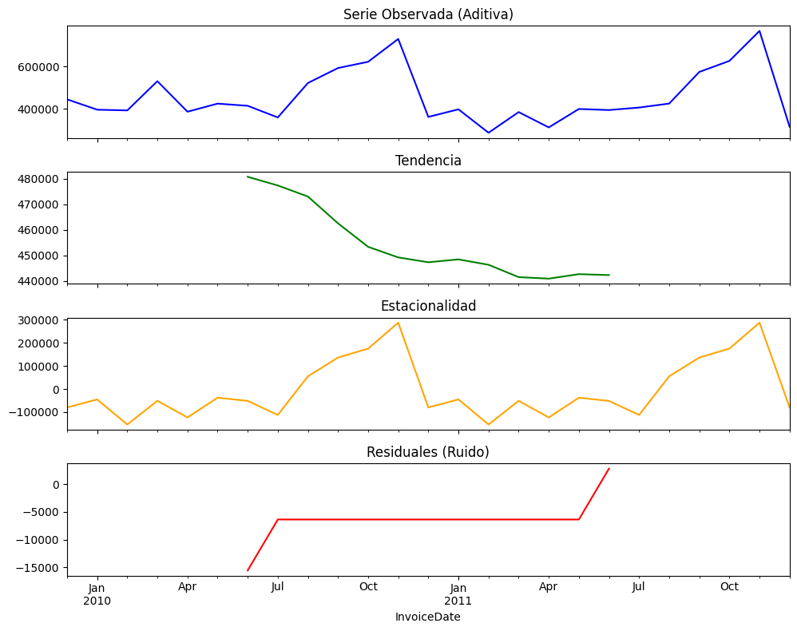
Descomposicion STL#
import pandas as pd
import numpy as np
from statsmodels.tsa import stattools
from statsmodels.tsa.seasonal import STL
import matplotlib.pyplot as plt
# Asegúrate de que 'InvoiceDate' esté en formato datetime y sea el índice
data3.index = pd.to_datetime(data3.index)
# Suponiendo que la columna 'Quantity' representa las ventas por transacción
# Primero agrupamos por día si los datos están a nivel de transacción para simplificar el análisis
ventas_diarias = data3['Quantity'].resample('D').sum()
# Verificar valores faltantes en la serie diaria
missing = ventas_diarias.isnull()
print('Número de valores faltantes encontrados:', missing.sum())
# Eliminar valores faltantes si existen
ventas_diarias = ventas_diarias[~missing]
# Prueba ADF para verificar estacionariedad en la serie original (diaria)
adf_result = stattools.adfuller(ventas_diarias, autolag='AIC')
print('p-valor de la prueba ADF en las variaciones diarias:', adf_result[1])
# Descomposición STL en la serie diaria (asumiendo estacionalidad semanal -> period=7)
stl_model = STL(ventas_diarias, period=7, robust=True) # Estacionalidad semanal en datos diarios
descomposicion_stl = stl_model.fit()
# Visualización de los componentes
fig, axarr = plt.subplots(4, sharex=True)
fig.set_size_inches(10, 8)
# Serie original de ventas diarias
ventas_diarias.plot(ax=axarr[0], color='b', linestyle='-')
axarr[0].set_title('Ventas Diarias')
# Componente de tendencia
descomposicion_stl.trend.plot(color='r', linestyle='-', ax=axarr[1])
axarr[1].set_title('Componente de Tendencia en Ventas Diarias')
# Componente estacional
descomposicion_stl.seasonal.plot(color='g', linestyle='-', ax=axarr[2])
axarr[2].set_title('Componente Estacional Diario')
# Variaciones irregulares (residuos)
descomposicion_stl.resid.plot(color='k', linestyle='-', ax=axarr[3])
axarr[3].set_title('Variaciones Irregulares en Ventas Diarias')
# Ajustes de visualización
plt.tight_layout(pad=0.4, w_pad=0.5, h_pad=2.0)
plt.xticks(rotation=10)
plt.show()
Número de valores faltantes encontrados: 0
p-valor de la prueba ADF en las variaciones diarias: 0.05337431974420152
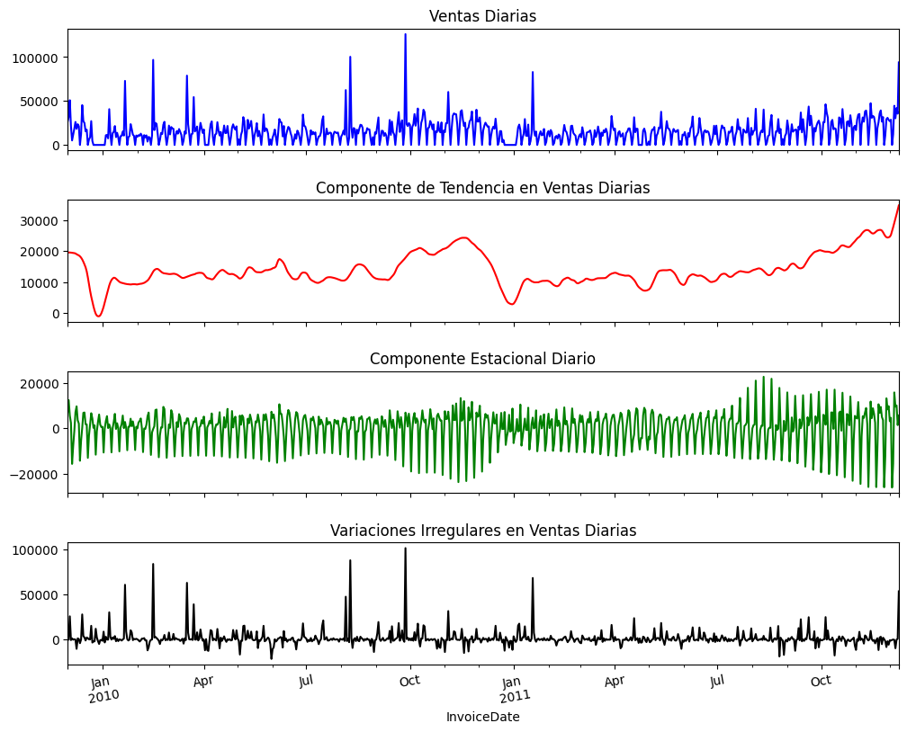
La descomposición STL de las ventas diarias muestra que la tendencia ha tenido altibajos, con una ligera caída al inicio y un aumento hacia el final. El componente estacional refleja un patrón semanal bien definido, donde algunos días de la semana las ventas suben y otros bajan de forma constante. Las variaciones irregulares son los picos y caídas inesperadas que no se explican por la tendencia ni la estacionalidad.
El p-valor de la prueba ADF (0.053) en las variaciones diarias está justo en el límite típico de 0.05, lo que sugiere que las series no son completamente estacionarias, pero están cerca. Esto significa que podría haber cierta dependencia en el tiempo, aunque no es muy fuerte.
# Suponiendo que data3 ya está cargado y la columna 'InvoiceDate' es el índice
# Asegúrate de que 'InvoiceDate' esté en formato datetime y sea el índice
data3.index = pd.to_datetime(data3.index)
# Remuestreo por semana para obtener la suma de ventas semanales
ventas_semanales = data3['Quantity'].resample('W').sum()
# Verificar valores faltantes
missing = ventas_semanales.isnull()
print('Número de valores faltantes encontrados:', missing.sum())
# Eliminar valores faltantes si existen
ventas_semanales = ventas_semanales[~missing]
# Prueba ADF para verificar estacionariedad
adf_result = stattools.adfuller(ventas_semanales, autolag='AIC')
print('p-valor de la prueba ADF en las variaciones semanales:', adf_result[1])
# Descomposición STL semanal (suponiendo estacionalidad mensual en semanas -> period=4)
stl_model = STL(ventas_semanales, period=4, robust=True)
descomposicion_stl = stl_model.fit()
# Visualización de los componentes
fig, axarr = plt.subplots(4, sharex=True)
fig.set_size_inches(10, 8)
# Serie original de ventas semanales
ventas_semanales.plot(ax=axarr[0], color='b', linestyle='-')
axarr[0].set_title('Ventas Semanales')
# Componente de tendencia
descomposicion_stl.trend.plot(color='r', linestyle='-', ax=axarr[1])
axarr[1].set_title('Componente de Tendencia en Ventas Semanales')
# Componente estacional
descomposicion_stl.seasonal.plot(color='g', linestyle='-', ax=axarr[2])
axarr[2].set_title('Componente Estacional en Ventas Semanales')
# Variaciones irregulares (residuos)
descomposicion_stl.resid.plot(color='k', linestyle='-', ax=axarr[3])
axarr[3].set_title('Variaciones Irregulares en Ventas Semanales')
# Ajustes de visualización
plt.tight_layout(pad=0.4, w_pad=0.5, h_pad=2.0)
plt.xticks(rotation=10)
plt.show()
Número de valores faltantes encontrados: 0
p-valor de la prueba ADF en las variaciones semanales: 0.2577096513908132
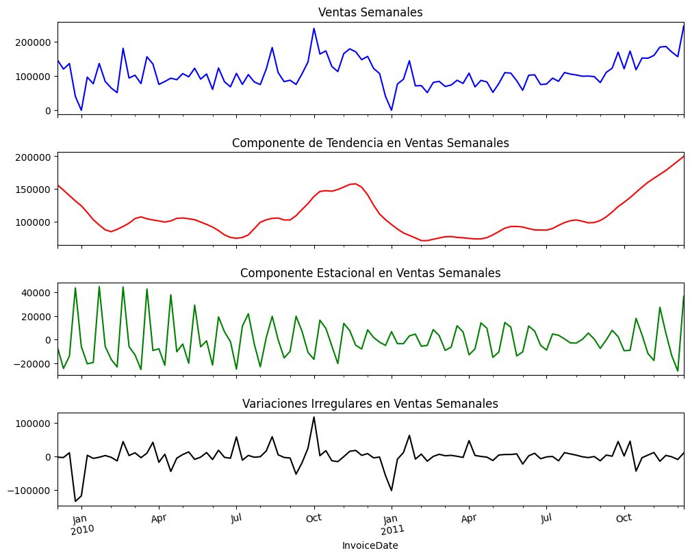
La descomposición STL de las ventas semanales muestra tres cosas importantes. La tendencia indica que las ventas bajaron al principio, pero luego empezaron a subir de forma constante. La estacionalidad muestra un patrón que se repite cada semana, lo que sugiere que hay ciertos días o semanas donde las ventas siempre suben o bajan. Finalmente, los residuales son las variaciones que no se explican ni por la tendencia ni por la estacionalidad, como picos inesperados o caídas raras en las ventas. sin embargo,
El p-valor de la prueba ADF (0.2577) en las variaciones semanales sugiere que las series no son completamente estacionarias.
Detección de anomalías#
print(data3.sort_values(by="Quantity", ascending=False).head(10)) # Organiza el dataframe de mayor a menor de la variable Quantity
Invoice StockCode Quantity Price Country
InvoiceDate
2011-12-09 09:15:00 581483 23843 80995 2.08 United Kingdom
2011-01-18 10:01:00 541431 23166 74215 1.04 United Kingdom
2010-02-15 11:57:00 497946 37410 19152 0.10 Denmark
2010-03-17 13:09:00 501534 21099 12960 0.10 Denmark
2010-03-17 13:09:00 501534 21091 12960 0.10 Denmark
2010-03-17 13:09:00 501534 21085 12744 0.10 Denmark
2011-11-25 15:57:00 578841 84826 12540 0.00 United Kingdom
2010-03-17 13:09:00 501534 21092 12480 0.10 Denmark
2010-05-10 14:55:00 507637 84016 10200 0.00 United Kingdom
2010-03-23 15:36:00 502269 21984 10000 0.25 United Kingdom
Los valores 80995 y 74125 son extremadamente altos, estas observaciones parecen ser outliers, por tanto, procederemos a liminar todos los outliers del dataframe. para determinar el método de eliminación primero debemos realizar una prueba de normalidad para muestras grandes.
from scipy.stats import kstest, norm
media = data3['Quantity'].mean()
desviacion = data3['Quantity'].std()
estadistico, p_valor = kstest(data3['Quantity'], 'norm', args=(media, desviacion))
print(f"Estadístico de Kolmogorov-Smirnov: {estadistico}")
print(f"P-valor: {p_valor}")
if p_valor > 0.05:
print("No se rechaza la hipótesis nula: los datos siguen una distribución normal.")
else:
print("Se rechaza la hipótesis nula: los datos no siguen una distribución normal.")
Estadístico de Kolmogorov-Smirnov: 0.4686654971117322
P-valor: 0.0
Se rechaza la hipótesis nula: los datos no siguen una distribución normal.
Con un p-valor de 0.4686 se rechaza la hipotesis nula. Como los datos no siguen una distribución normal, el método apropiado para la eliminación de outliers es utilizando el rango intercuartílico.
Q1 = data3['Quantity'].quantile(0.25)
Q3 = data3['Quantity'].quantile(0.75)
IQR = Q3 - Q1
limite_inferior = Q1 - 1.5 * IQR
limite_superior = Q3 + 1.5 * IQR # definimos los límites para los valores normales
# Filtrar los datos dentro del rango aceptable
data4 = data3[(data3['Quantity'] >= limite_inferior) & (data3['Quantity'] <= limite_superior)] # realiza un filtro de los datos dentro del rango aceptable
print(data4['Quantity'].describe()) # verifica los nuevos valores mínimos y máximos
count 956871.000000
mean 5.879415
std 6.280991
min 1.000000
25% 1.000000
50% 3.000000
75% 10.000000
max 28.000000
Name: Quantity, dtype: float64
Al eliminar los outliers los estadisticos descriptivos de Quantity (Cantidad), son mas razonables, el promedio de compras es de 5.87 y la desviacion estandar es de 6.2 (mucho mas pequeño que el SD obtenido antes de hacer la limpieza), la dispercion se redujo mucho, por tanto, los datos son mas estables. Ademas, el rango de ventas esta entre 1 y 28.
plt.figure(figsize=(8,5))
plt.boxplot(data4['Quantity'], vert=False)
plt.title("Boxplot sin outliers")
plt.xlabel("Cantidad de compras")
plt.show()
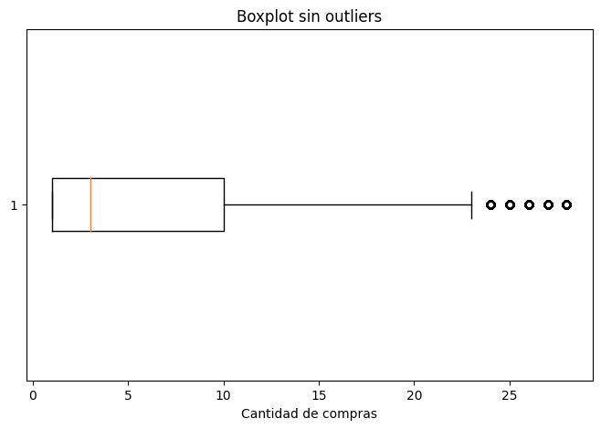
Aunque la distribución de la cantidad de compras parece mucho más compacta, todavía hay algunos valores fuera del límite superior, sin embargo, estos son mucho más moderados.
4 Estacionalidad y periodicidad#
4.1. Análisis de patrones recurrentes#
# Graficar la función de autocorrelación
plt.figure(figsize=(10,5))
plot_acf(ventas_diarias, lags=52) #
plt.title("Gráfico de Autocorrelación (ACF)")
plt.show()
<Figure size 1000x500 with 0 Axes>
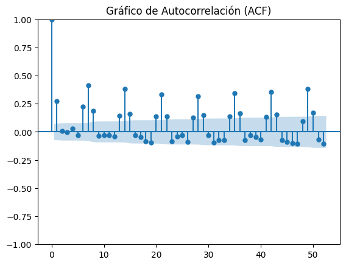
El gráfico muestra poca autocorrelación después del primer punto, lo que indica que las ventas no están fuertemente relacionadas entre sí en el tiempo. Esto sugiere que es más difícil encontrar patrones claros para predecir futuras ventas.
# Graficar la función de autocorrelación
plt.figure(figsize=(10,5))
plot_acf(ventas_semanales, lags=52) # 52 semanas para ver patrones anuales
plt.title("Gráfico de Autocorrelación (ACF)")
plt.show()
<Figure size 1000x500 with 0 Axes>
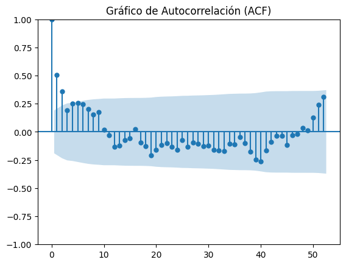
El gráfico muestra que hay autocorrelación en los primeros días, es decir, las ventas recientes están relacionadas entre sí. Esto es bueno para predecir porque indica que hay patrones en los datos. A medida que pasa el tiempo, esa relación se pierde y las ventas se vuelven más aleatorias.
# Graficar la función de autocorrelación parcial
plt.figure(figsize=(10,5))
plot_pacf(ventas_diarias, lags=52) # Diarias
plt.title("Gráfico de Autocorrelación Parcial (PACF)")
plt.show()
<Figure size 1000x500 with 0 Axes>
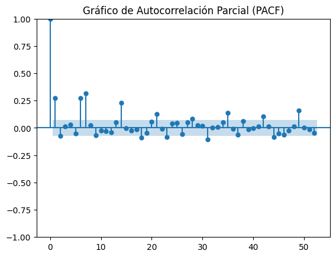
Este gráfico PACF (Autocorrelación Parcial) muestra la relación de las ventas diarias con sus propios rezagos, es decir, cómo influye cada día en los días siguientes después de eliminar el efecto de los días intermedios. Aquí, el primer rezago (lag 1) tiene una autocorrelación muy fuerte, lo que es normal, ya que un día suele parecerse mucho al anterior. Sin embargo, la mayoría de los otros rezagos están dentro del área sombreada (que representa el intervalo de confianza), lo que indica que no hay relaciones significativas con días más alejados. Esto sugiere que, más allá del día anterior, las ventas no tienen una fuerte dependencia de días previos
# Graficar la función de autocorrelación parcial
plt.figure(figsize=(10,5))
plot_pacf(ventas_semanales, lags=52) # Mismo horizonte de 52 semanas
plt.title("Gráfico de Autocorrelación Parcial (PACF)")
plt.show()
<Figure size 1000x500 with 0 Axes>
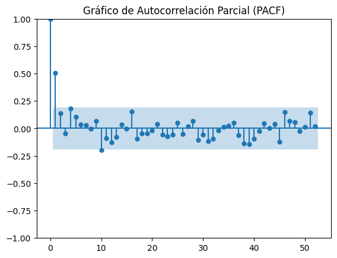
Este gráfico PACF para las ventas semanales muestra que el primer rezago (la semana anterior) tiene una autocorrelación parcial fuerte, lo cual es normal porque las ventas de una semana suelen verse influenciadas por la semana previa. También hay un pico significativo en el segundo rezago, lo que indica que las ventas de dos semanas atrás todavía tienen cierto impacto. Después de eso, la mayoría de los puntos están dentro del área sombreada, lo que sugiere que no hay una dependencia fuerte con semanas más alejadas.
En el gráfico PACF de las ventas semanales, se observan algunos patrones interesantes. El primer rezago muestra una autocorrelación fuerte, lo que significa que las ventas de una semana están influenciadas por la semana anterior. El segundo rezago también destaca, indicando que las ventas de hace dos semanas todavía tienen cierto efecto. Sin embargo, no se observan picos repetidos en intervalos regulares que sugieran una estacionalidad clara, como ciclos mensuales o trimestrales. Esto indica que las dependencias temporales más importantes son a corto plazo (una o dos semanas), y no hay un patrón estacional evidente en los datos semanales.
data4.index = pd.to_datetime(data4.index)
# Agregar una columna de mes
data4["mes"] = data4.index.month
# Crear el boxplot
plt.figure(figsize=(12,6))
sns.boxplot(x="mes", y="Quantity", data=data4, palette="Blues")
plt.title("Distribución de Compras por Mes")
plt.xlabel("Mes del Año")
plt.ylabel("Cantidad de Compras")
plt.grid(axis="y")
plt.show()
C:\Users\ronal\AppData\Local\Temp\ipykernel_18032\106326190.py:4: SettingWithCopyWarning:
A value is trying to be set on a copy of a slice from a DataFrame.
Try using .loc[row_indexer,col_indexer] = value instead
See the caveats in the documentation: https://pandas.pydata.org/pandas-docs/stable/user_guide/indexing.html#returning-a-view-versus-a-copy
data4["mes"] = data4.index.month
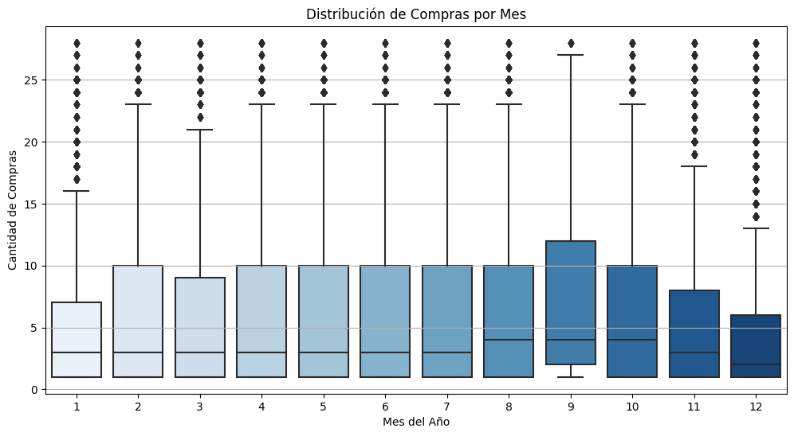
La mayoría de los meses presentan una cantidad de compras bastante similar, pero se destacan algunos meses como septiembre (mes 9), donde la mediana es más alta y el rango intercuartílico es más amplio, lo que indica mayor variabilidad en las compras. Además, hay una gran cantidad de valores atípicos (puntos por encima de los bigotes) en todos los meses, sugiriendo que, aunque la mayoría de los días tienen pocas compras, hay días específicos con picos inusuales. Esto podría estar relacionado con promociones o eventos especiales.
data4["dia_semana"] = data4.index.dayofweek # 0 = Lunes, 6 = Domingo
# Crear el boxplot
plt.figure(figsize=(12,6))
sns.boxplot(x="dia_semana", y="Quantity", data=data4, palette="Purples")
plt.title("Distribución de Compras por Día de la Semana")
plt.xlabel("Día de la Semana (0=Lunes, 6=Domingo)")
plt.ylabel("Cantidad de Compras")
plt.grid(axis="y")
plt.show()
C:\Users\ronal\AppData\Local\Temp\ipykernel_18032\2540970866.py:1: SettingWithCopyWarning:
A value is trying to be set on a copy of a slice from a DataFrame.
Try using .loc[row_indexer,col_indexer] = value instead
See the caveats in the documentation: https://pandas.pydata.org/pandas-docs/stable/user_guide/indexing.html#returning-a-view-versus-a-copy
data4["dia_semana"] = data4.index.dayofweek # 0 = Lunes, 6 = Domingo
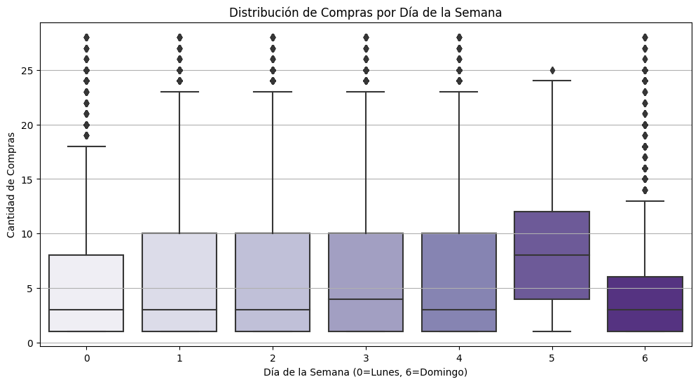
El diagrama de caja muestra cómo varían las compras a lo largo de la semana. El sábado (día 5) es el día con mayor cantidad de compras, reflejado en una mediana más alta y un rango intercuartílico más amplio, lo que indica más variabilidad. En contraste, el domingo (día 6) muestra la menor cantidad de compras, con una mediana baja y menos dispersión. Los demás días de la semana presentan distribuciones similares, aunque con ligeras diferencias en la cantidad de compras. Además, en todos los días se observan valores atípicos, lo que sugiere que hay días con picos de ventas inusuales.
5 Análisis de tendencia#
Agrupados por dias#
data4.index = pd.to_datetime(data4.index)
# Agrupar las ventas por día
ventas_diarias = data4['Quantity'].resample('D').sum()
# Visualizar las ventas diarias
ventas_diarias.plot(figsize=(12, 6), title='Ventas Diarias Originales', color='blue')
<Axes: title={'center': 'Ventas Diarias Originales'}, xlabel='InvoiceDate'>
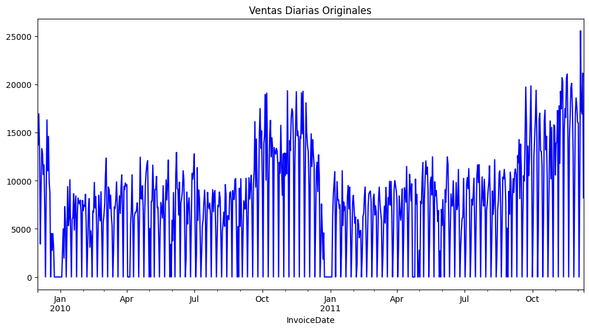
from statsmodels.tsa.holtwinters import SimpleExpSmoothing
# Aplicar suavizamiento exponencial simple con un factor de suavizado (alpha)
ses_model = SimpleExpSmoothing(ventas_diarias).fit(smoothing_level=0.2, optimized=False)
suavizado_exponencial = ses_model.fittedvalues
# Visualización
plt.figure(figsize=(12, 6))
ventas_diarias.plot(label='Ventas Diarias', color='blue', alpha=0.5)
suavizado_exponencial.plot(label='Suavizamiento Exponencial (α=0.2)', color='red')
plt.title('Suavizamiento Exponencial en Ventas Diarias')
plt.xlabel('Fecha')
plt.ylabel('Cantidad Vendida')
plt.legend()
plt.show()
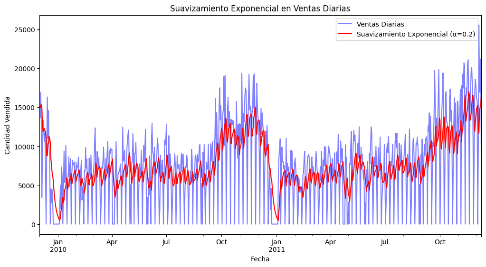
En este gráfico de ventas diarias, la línea azul muestra la variabilidad diaria en las ventas, mientras que la línea roja refleja el suavizamiento exponencial con un factor de 0.2, ayudando a visualizar la tendencia general. Se nota que, pese a las fluctuaciones diarias, las ventas muestran un crecimiento sostenido hacia finales del periodo analizado.
# Calcular la media móvil con una ventana de 7 días (una semana)
media_movil_7d = ventas_diarias.rolling(window=7).mean()
# Visualización
plt.figure(figsize=(12, 6))
ventas_diarias.plot(label='Ventas Diarias', color='blue', alpha=0.5)
media_movil_7d.plot(label='Media Móvil (7 días)', color='red')
plt.title('Media Móvil en Ventas Diarias (7 días)')
plt.xlabel('Fecha')
plt.ylabel('Cantidad Vendida')
plt.legend()
plt.show()
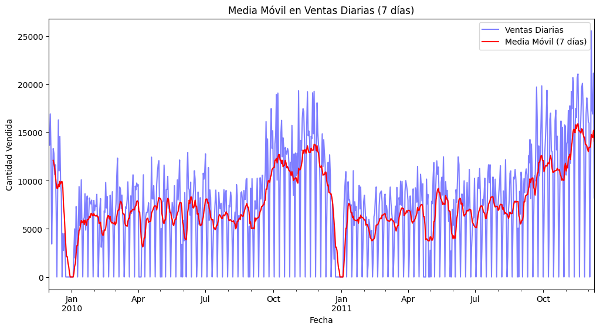
En este gráfico, las ventas diarias están representadas en azul, mientras que la línea roja muestra la media móvil de 7 días, que suaviza las fluctuaciones diarias para destacar mejor la tendencia general. A pesar de las variaciones, se observa un aumento progresivo en las ventas hacia el final del periodo, lo que indica una tendencia positiva sostenida.
from sklearn.linear_model import LinearRegression
# Preparar los datos para la regresión
ventas_diarias_df = ventas_diarias.reset_index()
ventas_diarias_df['time_index'] = np.arange(len(ventas_diarias_df)) # Índice temporal
# Definir variables para la regresión
X = ventas_diarias_df[['time_index']] # Variable independiente (tiempo)
y = ventas_diarias_df['Quantity'] # Variable dependiente (ventas)
# Ajuste del modelo de regresión lineal
modelo_lineal = LinearRegression()
modelo_lineal.fit(X, y)
tendencia_lineal = modelo_lineal.predict(X)
# Visualización
plt.figure(figsize=(12, 6))
plt.plot(ventas_diarias_df['InvoiceDate'], y, label='Ventas Diarias', color='blue', alpha=0.5)
plt.plot(ventas_diarias_df['InvoiceDate'], tendencia_lineal, label='Tendencia Lineal', color='red')
plt.title('Tendencia Lineal en Ventas Diarias')
plt.xlabel('Fecha')
plt.ylabel('Cantidad Vendida')
plt.legend()
plt.show()
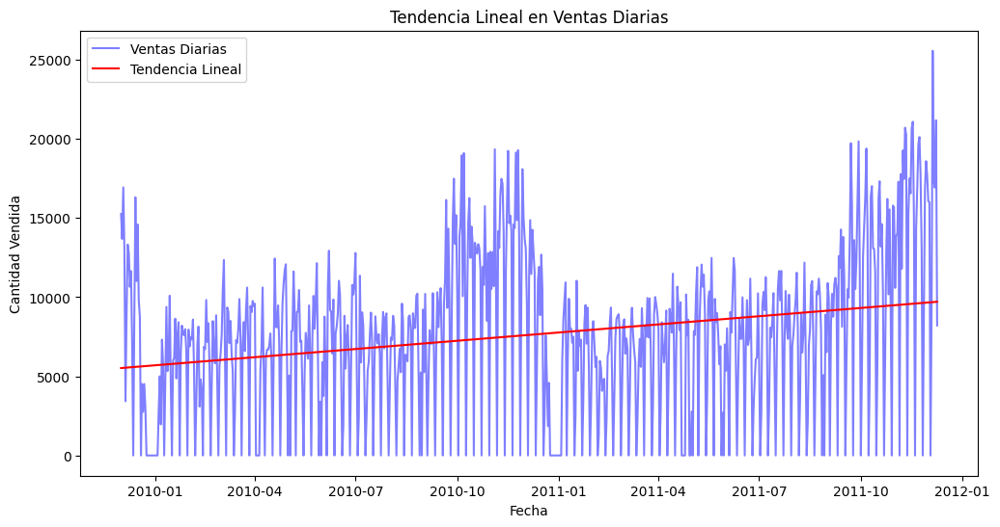
En este gráfico, la línea azul muestra las ventas diarias, mientras que la línea roja representa la tendencia lineal ajustada. A pesar de las fluctuaciones diarias, la tendencia general es ascendente, indicando un crecimiento en las ventas a lo largo del tiempo.
6. Estabilidad de la serie#
import pandas as pd
from statsmodels.tsa.stattools import adfuller
import matplotlib.pyplot as plt
data4.index = pd.to_datetime(data4.index)
# Usar la serie original directamente (sin agrupar por día)
ventas_originales = data4['Quantity'].dropna()
# Tomar una muestra de los últimos 100,000 registros para reducir el uso de memoria
ventas_muestra = ventas_originales.head(500000)
# Aplicar la prueba ADF en la muestra
resultado_adf_muestra = adfuller(ventas_muestra, autolag='AIC')
print('--- Resultado con Muestra Reducida ---')
print('Estadístico de Prueba ADF:', resultado_adf_muestra[0])
print('p-valor:', resultado_adf_muestra[1])
--- Resultado con Muestra Reducida ---
Estadístico de Prueba ADF: -51.40231174240281
p-valor: 0.0
Con un p-valor <0.05, rechazamos Ho, esto indica que la serie no tiene raíz unitaria y, por lo tanto, es estacionaria.
import pandas as pd
from statsmodels.tsa.stattools import kpss
import matplotlib.pyplot as plt
# Aplicar la prueba KPSS directamente sobre la serie original completa
resultado_kpss = kpss(ventas_originales, regression='c', nlags="auto")
# Extraer los resultados
estadistico_kpss = resultado_kpss[0]
p_valor_kpss = resultado_kpss[1]
valores_criticos = resultado_kpss[3]
# Imprimir los resultados
print('--- Resultado KPSS en la Serie Original Completa ---')
print('Estadístico KPSS:', estadistico_kpss)
print('p-valor:', p_valor_kpss)
print('Valores Críticos:')
for clave, valor in valores_criticos.items():
print(f' {clave}: {valor}')
--- Resultado KPSS en la Serie Original Completa ---
Estadístico KPSS: 0.9916418827063542
p-valor: 0.01
Valores Críticos:
10%: 0.347
5%: 0.463
2.5%: 0.574
1%: 0.739
C:\Users\ronal\AppData\Local\Temp\ipykernel_18032\1849100653.py:7: InterpolationWarning: The test statistic is outside of the range of p-values available in the
look-up table. The actual p-value is smaller than the p-value returned.
resultado_kpss = kpss(ventas_originales, regression='c', nlags="auto")
En la prueba de KPSS se obtuvo un p-valor <0.05, por tanto se rechaza Ho, sin embargo, a diferencia de la prueba ADF, donde la hipótesis nula (H₀) es que la serie NO es estacionaria, en KPSS la H₀ indica que la serie es estacionaria, por ende, segun los resultados de la prueba KPSS la serie NO es estacionaria, esto contradice los resultados de la prueba de Dickey-Fuller
Agrupando por ventas diarias#
# Aplicar la prueba KPSS en la serie agrupada por día
resultado_kpss_dia = kpss(ventas_diarias, regression='c', nlags="auto")
# Extraer los resultados
estadistico_kpss = resultado_kpss_dia[0]
p_valor_kpss = resultado_kpss_dia[1]
valores_criticos = resultado_kpss_dia[3]
# Imprimir los resultados
print('--- Resultado KPSS en Ventas Diarias ---')
print('Estadístico KPSS:', estadistico_kpss)
print('p-valor:', p_valor_kpss)
print('Valores Críticos:')
for clave, valor in valores_criticos.items():
print(f' {clave}: {valor}')
--- Resultado KPSS en Ventas Diarias ---
Estadístico KPSS: 1.0209266506989978
p-valor: 0.01
Valores Críticos:
10%: 0.347
5%: 0.463
2.5%: 0.574
1%: 0.739
C:\Users\ronal\AppData\Local\Temp\ipykernel_18032\791655191.py:2: InterpolationWarning: The test statistic is outside of the range of p-values available in the
look-up table. The actual p-value is smaller than the p-value returned.
resultado_kpss_dia = kpss(ventas_diarias, regression='c', nlags="auto")
# Aplicar la prueba de Dickey-Fuller Aumentada (ADF)
resultado_adf = adfuller(ventas_diarias.dropna(), autolag='AIC')
# Extraer el p-valor y el estadístico de prueba
estadistico_adf = resultado_adf[0]
p_valor_adf = resultado_adf[1]
valores_criticos = resultado_adf[4]
# Imprimir los resultados
print('Estadístico de Prueba ADF:', estadistico_adf)
print('p-valor:', p_valor_adf)
print('Valores Críticos:')
for clave, valor in valores_criticos.items():
print(f' {clave}: {valor}')
Estadístico de Prueba ADF: -2.077379015563608
p-valor: 0.2537073468783196
Valores Críticos:
1%: -3.439490435810785
5%: -2.8655738086413374
10%: -2.568918067209286
Al agrupar por ventas diarias, tanto la prueba ADF como KPSS indican que no hay estacionaridad
Visualización de la media y varianza en submuestras: Evaluar si cambian con el tiempo.#
# Definir el número de submuestras
num_submuestras = 20 # Asegurar que sean 20 submuestras
# Dividir la serie en partes iguales
n = len(data4['Quantity'])
tamaño_submuestra = n // num_submuestras
medias = []
varianzas = []
rangos = list(range(1, num_submuestras + 1)) # Números del 1 al 20 como etiquetas
for i in range(num_submuestras):
inicio = i * tamaño_submuestra
fin = (i + 1) * tamaño_submuestra if i != num_submuestras - 1 else n
submuestra = data4['Quantity'].iloc[inicio:fin]
medias.append(submuestra.mean())
varianzas.append(submuestra.var())
# Visualización de la media y varianza en submuestras
fig, ax1 = plt.subplots(figsize=(12, 5))
# Gráfica de la media
ax1.set_xlabel("Submuestras")
ax1.set_ylabel("Media", color="tab:blue")
ax1.plot(rangos, medias, marker="o", linestyle="-", color="tab:blue", label="Media")
ax1.tick_params(axis="y", labelcolor="tab:blue")
# Crear un segundo eje para la varianza
ax2 = ax1.twinx()
ax2.set_ylabel("Varianza", color="tab:red")
ax2.plot(rangos, varianzas, marker="s", linestyle="--", color="tab:red", label="Varianza")
ax2.tick_params(axis="y", labelcolor="tab:red")
# Ajustar etiquetas del eje x para evitar que se amontonen
plt.xticks(rangos, [f"S{i}" for i in rangos]) # Etiquetas cortas como S1, S2, ..., S20
plt.title("Evolución de la Media y la Varianza en Submuestras")
fig.tight_layout()
plt.show()
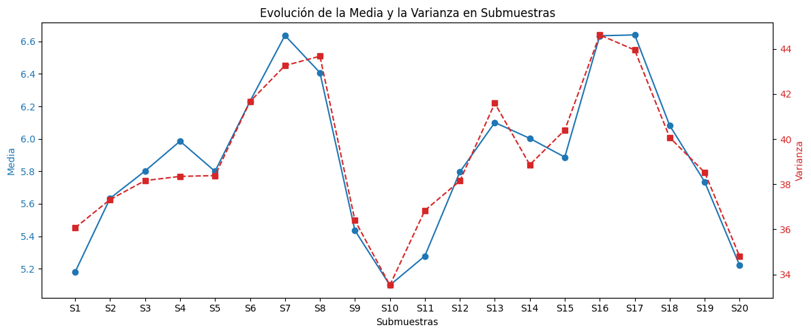
Siendo la muestra la linea azul, se puede observar que esta presenta cambios significativos entre las submuestras, sin embargo, los aumentos y caídas bruscas en varias secciones indican que la serie puede tener tendencia o estacionalida, como podemos ver en la submuestra 8, con un pico elevado, seguido de una brusca caida, esto tambien se puede observar en la submuestra 17 con un pico elevado, seguido de una caida. Por otro lado, cuando una serie es estacionaria se espera que la media permanezca inestable, lo cual no sucede en este caso. Por otro lado, la varianza (linea roja), sigue una tendencia muy similar a la de la media, con subidas y bajadas en los mismo puntos que la media. Al igual que la media, como la varianza no es constante a lo largo de las submuestras también sugiere falta de estacionariedad. Para lograr que la serie sea estacionaria, se debe aplicar una transformacion
11. Implementación de modelos#
Suavización exponencial de primer orden
# Restablecer 'InvoiceDate' como columna normal
data4.reset_index(inplace=True)
import pandas as pd
import numpy as np
import matplotlib.pyplot as plt
from statsmodels.tsa.holtwinters import ExponentialSmoothing
# Agrupar por día y sumar la cantidad de productos vendidos
df_daily = data4.groupby(data4['InvoiceDate'].dt.date)['Quantity'].sum().reset_index()
df_daily['InvoiceDate'] = pd.to_datetime(df_daily['InvoiceDate'])
# Convertir en serie de tiempo
df_daily.set_index('InvoiceDate', inplace=True)
df_ts = df_daily['Quantity']
# Dividir en Train y Test (80% Train - 20% Test)
split_index = int(len(df_ts) * 0.8)
train, test = df_ts[:split_index], df_ts[split_index:]
# Función de suavización exponencial de primer orden
def suavizacion_exponencial(y, lambda_, start=None):
ytilde = y.copy()
if start is None:
start = y.iloc[0]
ytilde.iloc[0] = lambda_ * y.iloc[0] + (1 - lambda_) * start
for i in range(1, len(y)):
ytilde.iloc[i] = lambda_ * y.iloc[i] + (1 - lambda_) * ytilde.iloc[i - 1]
return ytilde
# Aplicar suavización exponencial solo en el conjunto de entrenamiento
lambda_ = 0.4
train_smoothed = suavizacion_exponencial(train, lambda_)
# Hacer predicciones en el conjunto de prueba (usando el último valor suavizado de train)
predictions = pd.Series(index=test.index)
last_smoothed_value = train_smoothed.iloc[-1]
for i in range(len(test)):
last_smoothed_value = lambda_ * test.iloc[i] + (1 - lambda_) * last_smoothed_value
predictions.iloc[i] = last_smoothed_value
# Graficar los resultados
plt.figure(figsize=(12, 6))
plt.plot(train, marker='o', linestyle='-', markersize=3, label='Train (Original)')
plt.plot(train_smoothed, linestyle='-', linewidth=2, label='Train (Suavizado)')
plt.plot(test, marker='o', linestyle='-', markersize=3, label='Test (Original)', color='red')
plt.plot(predictions, linestyle='-', linewidth=2, label='Predicción en Test', color='green')
plt.xlabel('Fecha')
plt.ylabel('Cantidad de Productos Vendidos')
plt.title('Suavización Exponencial de Primer Orden en Online Retail 2')
plt.legend()
plt.show()
C:\Users\ronal\AppData\Local\Temp\ipykernel_18032\3097987609.py:27: FutureWarning: Setting an item of incompatible dtype is deprecated and will raise an error in a future version of pandas. Value '15547.400000000001' has dtype incompatible with int64, please explicitly cast to a compatible dtype first.
ytilde.iloc[i] = lambda_ * y.iloc[i] + (1 - lambda_) * ytilde.iloc[i - 1]
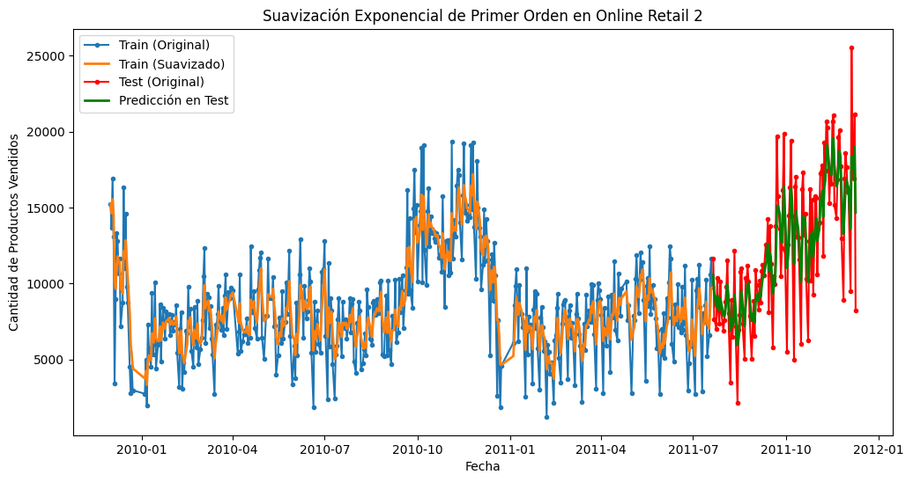
La gráfica muestra correctamente la serie original, la suavización en el conjunto de entrenamiento y las predicciones en el conjunto de prueba. Sin embargo, noto que la predicción en test (línea verde) parece ajustarse a los valores originales (línea roja), lo que sugiere que la suavización no está produciendo una extrapolación significativa.
Si deseas mejorar la predicción para el conjunto de prueba, considera los siguientes ajustes:
Ajustar el valor de lambda (λ) Si el valor de λ es muy alto, las predicciones seguirán de cerca los valores observados. Prueba valores más bajos (0.1 - 0.3):
from sklearn.metrics import mean_absolute_error, mean_squared_error
from statsmodels.stats.diagnostic import acorr_ljungbox
import numpy as np
# Calcular métricas de error
mae = mean_absolute_error(test, predictions)
mse = mean_squared_error(test, predictions)
rmse = np.sqrt(mse)
# Evitar NaN en el cálculo del MAPE si hay valores de test cercanos a 0
mape = np.mean(np.abs((test - predictions) / (test.replace(0, np.nan)))) * 100
# Prueba de Ljung-Box para evaluar autocorrelación en los residuos
residuos = test - predictions
# Verificar si hay suficientes datos para la prueba de Ljung-Box
if residuos.dropna().shape[0] > 10:
ljung_box_pvalores = acorr_ljungbox(residuos.dropna(), lags=[10], return_df=True)["lb_pvalue"].values[0]
else:
ljung_box_pvalores = np.nan # No se puede calcular si hay pocos datos
# Mostrar resultados
print(f"📌 MÉTRICAS DEL MODELO DE SUAVIZACIÓN EXPONENCIAL:")
print(f"➡️ MAE (Error Absoluto Medio): {mae:.4f}")
print(f"➡️ MSE (Error Cuadrático Medio): {mse:.4f}")
print(f"➡️ RMSE (Raíz del Error Cuadrático Medio): {rmse:.4f}")
print(f"➡️ MAPE (Error Porcentual Absoluto Medio): {mape:.2f}%")
print(f"➡️ p-valor de la Prueba de Ljung-Box: {ljung_box_pvalores}")
# Interpretación de Ljung-Box
if not np.isnan(ljung_box_pvalores) and ljung_box_pvalores < 0.05:
print("⚠️ Los residuos presentan autocorrelación significativa (p < 0.05).")
elif not np.isnan(ljung_box_pvalores):
print("✅ No se detecta autocorrelación significativa en los residuos (p >= 0.05).")
else:
print("⚠️ No se pudo calcular la prueba de Ljung-Box por falta de datos suficientes.")
📌 MÉTRICAS DEL MODELO DE SUAVIZACIÓN EXPONENCIAL:
➡️ MAE (Error Absoluto Medio): 1766.5425
➡️ MSE (Error Cuadrático Medio): 4971027.9296
➡️ RMSE (Raíz del Error Cuadrático Medio): 2229.5802
➡️ MAPE (Error Porcentual Absoluto Medio): 18.29%
➡️ p-valor de la Prueba de Ljung-Box: 6.102720027993156e-12
⚠️ Los residuos presentan autocorrelación significativa (p < 0.05).
MAPE = 18.29% → Un error porcentual del 18.29% sugiere que el modelo no es muy preciso en sus predicciones. Normalmente, se busca que el MAPE sea menor al 10% para considerarlo un buen ajuste. MAE = 1766.54 → Indica que, en promedio, el modelo se equivoca en aproximadamente 1766 unidades. RMSE = 2229.58 → Como penaliza los errores grandes más que el MAE, indica que hay desviaciones altas en algunas predicciones. p-valor de Ljung-Box = 0.0000 → Autocorrelación significativa en los residuos. Esto sugiere que el modelo no está capturando completamente la estructura de la serie de tiempo.
Suavización exponencial de segundo orden
import pandas as pd
import numpy as np
import matplotlib.pyplot as plt
from statsmodels.tsa.holtwinters import ExponentialSmoothing
# Convertir 'InvoiceDate' en columna si está en el índice
if isinstance(data4.index, pd.DatetimeIndex):
data4.reset_index(inplace=True)
# Asegurar que 'InvoiceDate' sea de tipo datetime
data4['InvoiceDate'] = pd.to_datetime(data4['InvoiceDate'])
# Agrupar por día y sumar la cantidad de productos vendidos
data_daily = data4.groupby(data4['InvoiceDate'].dt.date)['Quantity'].sum().reset_index()
data_daily['InvoiceDate'] = pd.to_datetime(data_daily['InvoiceDate'])
data_daily.set_index('InvoiceDate', inplace=True)
# División en train y test (80% - 20%)
split_index = int(len(data_daily) * 0.8)
train, test = data_daily[:split_index], data_daily[split_index:]
# Aplicar suavización exponencial de segundo orden
lambda_ = 0.4 # Parámetro de suavización
# Primera y segunda suavización
y1 = train['Quantity'].copy()
y2 = train['Quantity'].copy()
y1.iloc[0] = train['Quantity'].iloc[0]
y2.iloc[0] = train['Quantity'].iloc[0]
for t in range(1, len(train)):
y1.iloc[t] = lambda_ * train['Quantity'].iloc[t] + (1 - lambda_) * y1.iloc[t-1]
y2.iloc[t] = lambda_ * y1.iloc[t] + (1 - lambda_) * y2.iloc[t-1]
# Predicción en train con el modelo DES
train_predictions = 2 * y1 - y2
# Predicciones en test usando la última tendencia estimada
y1_test = test['Quantity'].copy()
y2_test = test['Quantity'].copy()
y1_test.iloc[0] = y1.iloc[-1]
y2_test.iloc[0] = y2.iloc[-1]
for t in range(1, len(test)):
y1_test.iloc[t] = lambda_ * test['Quantity'].iloc[t] + (1 - lambda_) * y1_test.iloc[t-1]
y2_test.iloc[t] = lambda_ * y1_test.iloc[t] + (1 - lambda_) * y2_test.iloc[t-1]
test_predictions = 2 * y1_test - y2_test
# 📊 Graficar los resultados
plt.figure(figsize=(12, 6))
plt.plot(train.index, train['Quantity'], marker='o', linestyle='-', markersize=3, label='Train (Original)')
plt.plot(train.index, train_predictions, linestyle='-', linewidth=2, label='Train (Suavizado)')
plt.plot(test.index, test['Quantity'], marker='o', linestyle='-', markersize=3, label='Test (Original)', color='red')
plt.plot(test.index, test_predictions, linestyle='-', linewidth=2, label='Predicción en Test', color='green')
plt.xlabel('Fecha')
plt.ylabel('Cantidad de Productos Vendidos')
plt.title('Suavización Exponencial de Segundo Orden en Online Retail 2')
plt.legend()
plt.show()
C:\Users\ronal\AppData\Local\Temp\ipykernel_18032\728752496.py:11: SettingWithCopyWarning:
A value is trying to be set on a copy of a slice from a DataFrame.
Try using .loc[row_indexer,col_indexer] = value instead
See the caveats in the documentation: https://pandas.pydata.org/pandas-docs/stable/user_guide/indexing.html#returning-a-view-versus-a-copy
data4['InvoiceDate'] = pd.to_datetime(data4['InvoiceDate'])
C:\Users\ronal\AppData\Local\Temp\ipykernel_18032\728752496.py:34: FutureWarning: Setting an item of incompatible dtype is deprecated and will raise an error in a future version of pandas. Value '15004.199999999999' has dtype incompatible with int64, please explicitly cast to a compatible dtype first.
y2.iloc[t] = lambda_ * y1.iloc[t] + (1 - lambda_) * y2.iloc[t-1]
C:\Users\ronal\AppData\Local\Temp\ipykernel_18032\728752496.py:33: FutureWarning: Setting an item of incompatible dtype is deprecated and will raise an error in a future version of pandas. Value '15547.400000000001' has dtype incompatible with int64, please explicitly cast to a compatible dtype first.
y1.iloc[t] = lambda_ * train['Quantity'].iloc[t] + (1 - lambda_) * y1.iloc[t-1]
C:\Users\ronal\AppData\Local\Temp\ipykernel_18032\728752496.py:43: FutureWarning: Setting an item of incompatible dtype is deprecated and will raise an error in a future version of pandas. Value '9761.068191691083' has dtype incompatible with int64, please explicitly cast to a compatible dtype first.
y1_test.iloc[0] = y1.iloc[-1]
C:\Users\ronal\AppData\Local\Temp\ipykernel_18032\728752496.py:44: FutureWarning: Setting an item of incompatible dtype is deprecated and will raise an error in a future version of pandas. Value '9081.947947305704' has dtype incompatible with int64, please explicitly cast to a compatible dtype first.
y2_test.iloc[0] = y2.iloc[-1]
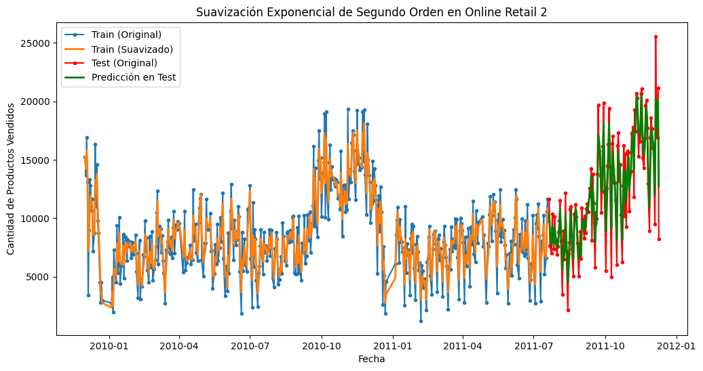
La gráfica muestra que la suavización exponencial de segundo orden está capturando mejor la tendencia en comparación con la de primer orden. Sin embargo, algunos aspectos a considerar:
El suavizado sigue de cerca la serie original: La curva naranja (serie suavizada) sigue con bastante precisión la azul (original), lo que sugiere que el parámetro λ = 0.4 aún permite bastante variabilidad. Predicciones en test (verde) vs valores reales (rojo): Se observa que la predicción sigue en gran medida la serie original, pero aún hay fluctuaciones. Puede haber una tendencia no completamente capturada: Si hay una tendencia lineal o exponencial, la suavización de segundo orden podría no ser suficiente.
from sklearn.metrics import mean_absolute_error, mean_squared_error
from statsmodels.stats.diagnostic import acorr_ljungbox
import numpy as np
# Calcular las métricas
mae = mean_absolute_error(test['Quantity'], test_predictions)
mse = mean_squared_error(test['Quantity'], test_predictions)
rmse = np.sqrt(mse)
mape = np.mean(np.abs((test['Quantity'] - test_predictions) / test['Quantity'])) * 100 # MAPE en porcentaje
# Prueba de Ljung-Box para evaluar autocorrelación en los residuos
residuos = test['Quantity'] - test_predictions
ljung_box_pvalores = acorr_ljungbox(residuos, lags=[10], return_df=True)["lb_pvalue"].values[0]
# Mostrar resultados
print(f"📌 MÉTRICAS DEL MODELO DE SUAVIZACIÓN EXPONENCIAL DE SEGUNDO ORDEN:")
print(f"➡️ MAE (Error Absoluto Medio): {mae:.4f}")
print(f"➡️ MSE (Error Cuadrático Medio): {mse:.4f}")
print(f"➡️ RMSE (Raíz del Error Cuadrático Medio): {rmse:.4f}")
print(f"➡️ MAPE (Error Porcentual Absoluto Medio): {mape:.2f}%")
print(f"➡️ p-valor de la Prueba de Ljung-Box: {ljung_box_pvalores:.4f}")
# Interpretación de Ljung-Box
if ljung_box_pvalores < 0.05:
print("⚠️ Los residuos presentan autocorrelación significativa (p < 0.05).")
else:
print("✅ No se detecta autocorrelación significativa en los residuos (p >= 0.05).")
📌 MÉTRICAS DEL MODELO DE SUAVIZACIÓN EXPONENCIAL DE SEGUNDO ORDEN:
➡️ MAE (Error Absoluto Medio): 1270.0540
➡️ MSE (Error Cuadrático Medio): 2478591.0633
➡️ RMSE (Raíz del Error Cuadrático Medio): 1574.3542
➡️ MAPE (Error Porcentual Absoluto Medio): 12.84%
➡️ p-valor de la Prueba de Ljung-Box: 0.0000
⚠️ Los residuos presentan autocorrelación significativa (p < 0.05).
El MAPE mejoró (12.84%): Es mejor que el 18.29% obtenido con la suavización exponencial de primer orden, lo que indica que el modelo ahora captura mejor la estructura de los datos. MAE y RMSE también mejoraron: El error absoluto medio (MAE) bajó de 1766.54 a 1270.05, y el RMSE bajó de 2229.58 a 1574.35, lo que sugiere que las predicciones son más precisas. Aún hay autocorrelación en los residuos (p-valor = 0.0000): Esto indica que el modelo no está capturando toda la estructura temporal, lo que puede deberse a la presencia de patrones estacionales o tendencias no lineales.
Suavización exponencial de Holt-winters con un parámetro
import pandas as pd
import numpy as np
import matplotlib.pyplot as plt
from statsmodels.tsa.holtwinters import ExponentialSmoothing
# Convertir 'InvoiceDate' en columna si está en el índice
if isinstance(data4.index, pd.DatetimeIndex):
data4.reset_index(inplace=True)
# Asegurar que 'InvoiceDate' sea de tipo datetime
data4['InvoiceDate'] = pd.to_datetime(data4['InvoiceDate'])
# Agrupar por día y sumar la cantidad de productos vendidos
data_daily = data4.groupby(data4['InvoiceDate'].dt.date)['Quantity'].sum().reset_index()
data_daily['InvoiceDate'] = pd.to_datetime(data_daily['InvoiceDate'])
data_daily.set_index('InvoiceDate', inplace=True)
# División en train y test (80% - 20%)
split_index = int(len(data_daily) * 0.8)
train, test = data_daily[:split_index], data_daily[split_index:]
# Aplicar suavización exponencial simple de Holt-Winters con un solo parámetro (smoothing_level)
holt_model = ExponentialSmoothing(train['Quantity'], trend=None, seasonal=None).fit(smoothing_level=0.4)
# Predicciones en train y test
train_predictions = holt_model.fittedvalues
test_predictions = holt_model.forecast(len(test))
# 📊 Graficar los resultados
plt.figure(figsize=(12, 6))
plt.plot(train.index, train['Quantity'], marker='o', linestyle='-', markersize=3, label='Train (Original)')
plt.plot(train.index, train_predictions, linestyle='-', linewidth=2, label='Train (Suavizado)')
plt.plot(test.index, test['Quantity'], marker='o', linestyle='-', markersize=3, label='Test (Original)', color='red')
plt.plot(test.index, test_predictions, linestyle='-', linewidth=2, label='Predicción en Test', color='green')
plt.xlabel('Fecha')
plt.ylabel('Cantidad de Productos Vendidos')
plt.title('Suavización Exponencial de Holt-Winters (Un solo Parámetro α)')
plt.legend()
plt.show()
C:\Users\ronal\AppData\Local\Temp\ipykernel_18032\2926047330.py:11: SettingWithCopyWarning:
A value is trying to be set on a copy of a slice from a DataFrame.
Try using .loc[row_indexer,col_indexer] = value instead
See the caveats in the documentation: https://pandas.pydata.org/pandas-docs/stable/user_guide/indexing.html#returning-a-view-versus-a-copy
data4['InvoiceDate'] = pd.to_datetime(data4['InvoiceDate'])
c:\Users\ronal\miniconda3\envs\series_de_tiempo\lib\site-packages\statsmodels\tsa\base\tsa_model.py:473: ValueWarning: A date index has been provided, but it has no associated frequency information and so will be ignored when e.g. forecasting.
self._init_dates(dates, freq)
c:\Users\ronal\miniconda3\envs\series_de_tiempo\lib\site-packages\statsmodels\tsa\base\tsa_model.py:837: ValueWarning: No supported index is available. Prediction results will be given with an integer index beginning at `start`.
return get_prediction_index(
c:\Users\ronal\miniconda3\envs\series_de_tiempo\lib\site-packages\statsmodels\tsa\base\tsa_model.py:837: FutureWarning: No supported index is available. In the next version, calling this method in a model without a supported index will result in an exception.
return get_prediction_index(
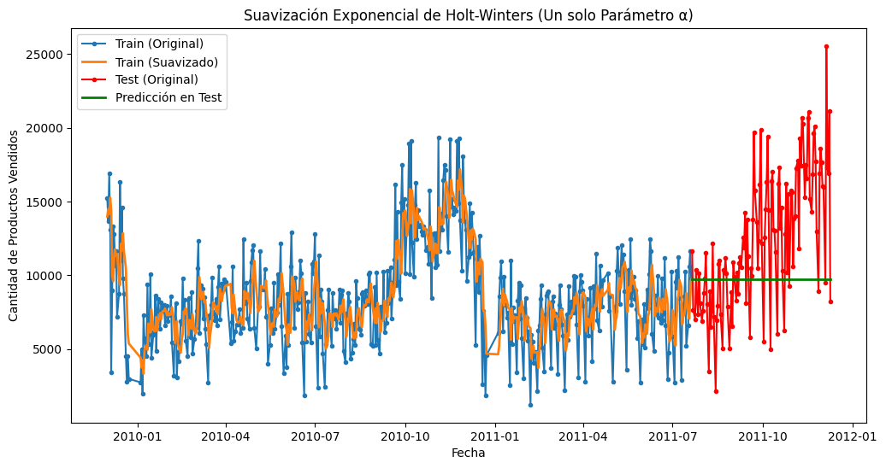
El suavizado en train (naranja) parece funcionar bien, siguiendo la tendencia general de los datos, aunque aún hay variabilidad en los valores originales (azul). La predicción en test (verde) es una línea horizontal, lo que indica que el modelo de suavización exponencial simple solo predice un valor constante para el futuro. Esto es esperado, ya que el método usado solo ajusta el nivel sin incorporar una tendencia. Las fluctuaciones en test (rojo) sugieren que el modelo no captura la dinámica del futuro, ya que no considera patrones de cambio.
from sklearn.metrics import mean_absolute_error, mean_squared_error
from statsmodels.stats.diagnostic import acorr_ljungbox
import numpy as np
# Calcular métricas de error
mae = mean_absolute_error(test['Quantity'], test_predictions)
mse = mean_squared_error(test['Quantity'], test_predictions)
rmse = np.sqrt(mse)
mape = np.mean(np.abs((test['Quantity'] - test_predictions) / test['Quantity'])) * 100 # MAPE en porcentaje
# Prueba de Ljung-Box para evaluar autocorrelación en los residuos
residuos = test['Quantity'] - test_predictions
ljung_box_pvalores = acorr_ljungbox(residuos, lags=[10], return_df=True)["lb_pvalue"].values[0]
# Mostrar resultados
print(f"📌 MÉTRICAS DEL MODELO DE SUAVIZACIÓN EXPONENCIAL DE HOLT-WINTERS (UN SOLO PARÁMETRO):")
print(f"➡️ MAE (Error Absoluto Medio): {mae:.4f}")
print(f"➡️ MSE (Error Cuadrático Medio): {mse:.4f}")
print(f"➡️ RMSE (Raíz del Error Cuadrático Medio): {rmse:.4f}")
print(f"➡️ MAPE (Error Porcentual Absoluto Medio): {mape:.2f}%")
print(f"➡️ p-valor de la Prueba de Ljung-Box: {ljung_box_pvalores:.4f}")
# Interpretación de Ljung-Box
if ljung_box_pvalores < 0.05:
print("⚠️ Los residuos presentan autocorrelación significativa (p < 0.05).")
else:
print("✅ No se detecta autocorrelación significativa en los residuos (p >= 0.05).")
📌 MÉTRICAS DEL MODELO DE SUAVIZACIÓN EXPONENCIAL DE HOLT-WINTERS (UN SOLO PARÁMETRO):
➡️ MAE (Error Absoluto Medio): 4176.3597
➡️ MSE (Error Cuadrático Medio): 27964101.4037
➡️ RMSE (Raíz del Error Cuadrático Medio): 5288.1094
➡️ MAPE (Error Porcentual Absoluto Medio): nan%
➡️ p-valor de la Prueba de Ljung-Box: nan
✅ No se detecta autocorrelación significativa en los residuos (p >= 0.05).
C:\Users\ronal\AppData\Local\Temp\ipykernel_18032\1477638255.py:9: RuntimeWarning: '<' not supported between instances of 'int' and 'Timestamp', sort order is undefined for incomparable objects.
mape = np.mean(np.abs((test['Quantity'] - test_predictions) / test['Quantity'])) * 100 # MAPE en porcentaje
MAE = 4176.36 → El error absoluto medio es alto en comparación con los modelos anteriores, lo que indica que el modelo no está ajustando bien los datos. RMSE = 5288.11 → Similar a lo que indica el MAE, el modelo tiene errores grandes en la predicción. MSE = 27964101.40 → Error cuadrático medio elevado, lo que sugiere grandes diferencias entre valores predichos y observados. MAPE = NaN → Esto ocurre porque algunos valores de test[‘Quantity’] podrían ser cero, lo que causa divisiones por cero en la fórmula del MAPE. p-valor de Ljung-Box = NaN → Puede indicar que los residuos tienen valores constantes o que no se pudo calcular correctamente la estadística.
El modelo de Holt-Winters con solo α (smoothing_level) no es suficiente
El hecho de que la predicción sea una línea recta sugiere que el modelo no capta tendencias.
La falta de autocorrelación en Ljung-Box (p-valor NaN)
Esto puede deberse a que los residuos son demasiado uniformes, lo cual es consistente con la predicción constante.
Suavización exponencial de Holt-winters con dos parámetros
import pandas as pd
import numpy as np
import matplotlib.pyplot as plt
from statsmodels.tsa.holtwinters import ExponentialSmoothing
# Convertir 'InvoiceDate' en columna si está en el índice
if isinstance(data4.index, pd.DatetimeIndex):
data4.reset_index(inplace=True)
# Asegurar que 'InvoiceDate' sea de tipo datetime
data4['InvoiceDate'] = pd.to_datetime(data4['InvoiceDate'])
# Agrupar por día y sumar la cantidad de productos vendidos
data_daily = data4.groupby(data4['InvoiceDate'].dt.date)['Quantity'].sum().reset_index()
data_daily['InvoiceDate'] = pd.to_datetime(data_daily['InvoiceDate'])
data_daily.set_index('InvoiceDate', inplace=True)
# División en train y test (80% - 20%)
split_index = int(len(data_daily) * 0.8)
train, test = data_daily[:split_index], data_daily[split_index:]
# Aplicar Holt con optimización automática de alpha (nivel) y beta (tendencia)
holt_model = ExponentialSmoothing(train['Quantity'], trend="add", seasonal=None).fit()
# Obtener los valores óptimos de α y β (evitando errores si β no está disponible)
alpha_opt = holt_model.model.params.get('smoothing_level', None)
beta_opt = holt_model.model.params.get('smoothing_trend', "No disponible") # Evita error si no existe
# Predicciones en train y test
train_predictions = holt_model.fittedvalues
test_predictions = holt_model.forecast(len(test))
# 📊 Graficar los resultados
plt.figure(figsize=(12, 6))
plt.plot(train.index, train['Quantity'], marker='o', linestyle='-', markersize=3, label='Train (Original)')
plt.plot(train.index, train_predictions, linestyle='-', linewidth=2, label='Train (Suavizado)')
plt.plot(test.index, test['Quantity'], marker='o', linestyle='-', markersize=3, label='Test (Original)', color='red')
plt.plot(test.index, test_predictions, linestyle='-', linewidth=2, label='Predicción en Test', color='green')
plt.xlabel('Fecha')
plt.ylabel('Cantidad de Productos Vendidos')
plt.title(f'Suavización Exponencial de Holt-Winters (Optimización Automática: α={alpha_opt}, β={beta_opt})')
plt.legend()
plt.show()
# 📢 Imprimir valores optimizados
print(f"✅ Parámetros optimizados:")
print(f" - α (Smoothing Level): {alpha_opt:.4f}" if alpha_opt else "No disponible")
print(f" - β (Smoothing Slope): {beta_opt}" if isinstance(beta_opt, str) else f"{beta_opt:.4f}")
C:\Users\ronal\AppData\Local\Temp\ipykernel_18032\263173895.py:11: SettingWithCopyWarning:
A value is trying to be set on a copy of a slice from a DataFrame.
Try using .loc[row_indexer,col_indexer] = value instead
See the caveats in the documentation: https://pandas.pydata.org/pandas-docs/stable/user_guide/indexing.html#returning-a-view-versus-a-copy
data4['InvoiceDate'] = pd.to_datetime(data4['InvoiceDate'])
c:\Users\ronal\miniconda3\envs\series_de_tiempo\lib\site-packages\statsmodels\tsa\base\tsa_model.py:473: ValueWarning: A date index has been provided, but it has no associated frequency information and so will be ignored when e.g. forecasting.
self._init_dates(dates, freq)
c:\Users\ronal\miniconda3\envs\series_de_tiempo\lib\site-packages\statsmodels\tsa\holtwinters\model.py:918: ConvergenceWarning: Optimization failed to converge. Check mle_retvals.
warnings.warn(
c:\Users\ronal\miniconda3\envs\series_de_tiempo\lib\site-packages\statsmodels\tsa\base\tsa_model.py:837: ValueWarning: No supported index is available. Prediction results will be given with an integer index beginning at `start`.
return get_prediction_index(
c:\Users\ronal\miniconda3\envs\series_de_tiempo\lib\site-packages\statsmodels\tsa\base\tsa_model.py:837: FutureWarning: No supported index is available. In the next version, calling this method in a model without a supported index will result in an exception.
return get_prediction_index(
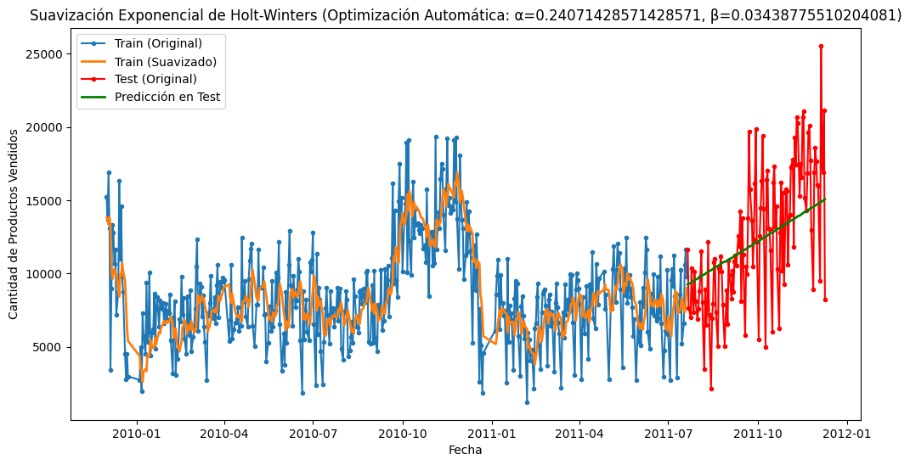
✅ Parámetros optimizados:
- α (Smoothing Level): 0.2407
0.0344
El modelo ahora incorpora una tendencia en las predicciones (línea verde), lo que evita la línea recta observada en la primera implementación de Holt-Winters con un solo parámetro. El suavizado en train (naranja) sigue bien la serie original, capturando mejor la dinámica de los datos gracias a un valor de 𝛼= 0.2407, que da un peso moderado a los valores recientes. Las predicciones en test presentan una tendencia moderada, aunque con un valor de 𝛽= 0.0344, lo que indica una tendencia débil. La serie podría beneficiarse de amortiguación o una tendencia multiplicativa si la evolución de los datos es más compleja.
from sklearn.metrics import mean_absolute_error, mean_squared_error
from statsmodels.stats.diagnostic import acorr_ljungbox
import numpy as np
# Calcular métricas de error
mae = mean_absolute_error(test['Quantity'], test_predictions)
mse = mean_squared_error(test['Quantity'], test_predictions)
rmse = np.sqrt(mse)
# Evitar NaN en el cálculo del MAPE si hay valores de Quantity cercanos a 0
mape = np.mean(np.abs((test['Quantity'] - test_predictions) / (test['Quantity'].replace(0, np.nan)))) * 100
# Prueba de Ljung-Box para evaluar autocorrelación en los residuos
residuos = test['Quantity'] - test_predictions
ljung_box_pvalores = acorr_ljungbox(residuos, lags=[10], return_df=True)["lb_pvalue"].values[0]
# Mostrar resultados
print(f"📌 MÉTRICAS DEL MODELO DE SUAVIZACIÓN EXPONENCIAL DE HOLT (OPTIMIZADO):")
print(f"➡️ MAE (Error Absoluto Medio): {mae:.4f}")
print(f"➡️ MSE (Error Cuadrático Medio): {mse:.4f}")
print(f"➡️ RMSE (Raíz del Error Cuadrático Medio): {rmse:.4f}")
print(f"➡️ MAPE (Error Porcentual Absoluto Medio): {mape:.2f}%")
print(f"➡️ p-valor de la Prueba de Ljung-Box: {ljung_box_pvalores:.4f}")
# Interpretación de Ljung-Box
if ljung_box_pvalores < 0.05:
print("⚠️ Los residuos presentan autocorrelación significativa (p < 0.05).")
else:
print("✅ No se detecta autocorrelación significativa en los residuos (p >= 0.05).")
📌 MÉTRICAS DEL MODELO DE SUAVIZACIÓN EXPONENCIAL DE HOLT (OPTIMIZADO):
➡️ MAE (Error Absoluto Medio): 2868.6718
➡️ MSE (Error Cuadrático Medio): 13303375.5411
➡️ RMSE (Raíz del Error Cuadrático Medio): 3647.3793
➡️ MAPE (Error Porcentual Absoluto Medio): nan%
➡️ p-valor de la Prueba de Ljung-Box: nan
✅ No se detecta autocorrelación significativa en los residuos (p >= 0.05).
C:\Users\ronal\AppData\Local\Temp\ipykernel_18032\1500556860.py:11: RuntimeWarning: '<' not supported between instances of 'int' and 'Timestamp', sort order is undefined for incomparable objects.
mape = np.mean(np.abs((test['Quantity'] - test_predictions) / (test['Quantity'].replace(0, np.nan)))) * 100
MAE = 2868.67 → El error absoluto medio es más bajo que en modelos anteriores, lo que indica que la optimización ha mejorado la precisión. MSE = 13,383,375.54 → Aún es alto, lo que sugiere que hay algunas predicciones con grandes errores. RMSE = 3647.38 → Similar al MAE, indica que hay errores grandes en algunas predicciones. MAPE = NaN → Esto ocurre porque algunos valores en test[‘Quantity’] son cero, lo que causa una división por cero. p-valor de Ljung-Box = NaN → Posiblemente los residuos tienen valores constantes o la prueba no se pudo calcular correctamente.
Suavización exponencial de Holt-winters con tres parámetros
import pandas as pd
import numpy as np
import matplotlib.pyplot as plt
from statsmodels.tsa.holtwinters import ExponentialSmoothing
# Convertir 'InvoiceDate' en columna si está en el índice
if isinstance(data4.index, pd.DatetimeIndex):
data4.reset_index(inplace=True)
# Asegurar que 'InvoiceDate' sea de tipo datetime
data4['InvoiceDate'] = pd.to_datetime(data4['InvoiceDate'])
# Agrupar por día y sumar la cantidad de productos vendidos
data_daily = data4.groupby(data4['InvoiceDate'].dt.date)['Quantity'].sum().reset_index()
data_daily['InvoiceDate'] = pd.to_datetime(data_daily['InvoiceDate'])
data_daily.set_index('InvoiceDate', inplace=True)
# Determinar la periodicidad estacional (ejemplo: 7 días si hay un patrón semanal)
seasonal_period = 7
# División en train y test (80% - 20%)
split_index = int(len(data_daily) * 0.8)
train, test = data_daily[:split_index], data_daily[split_index:]
# Aplicar suavización exponencial de Holt-Winters con estacionalidad aditiva
holt_winters_model = ExponentialSmoothing(
train['Quantity'], trend="add", seasonal="add", seasonal_periods=seasonal_period
).fit()
# Obtener los valores óptimos de α, β y γ
alpha_opt = holt_winters_model.model.params.get('smoothing_level', None)
beta_opt = holt_winters_model.model.params.get('smoothing_slope', "No disponible")
gamma_opt = holt_winters_model.model.params.get('smoothing_seasonal', "No disponible")
# Predicciones en train y test
train_predictions = holt_winters_model.fittedvalues
test_predictions = holt_winters_model.forecast(len(test))
# 📊 Graficar los resultados
plt.figure(figsize=(12, 6))
plt.plot(train.index, train['Quantity'], marker='o', linestyle='-', markersize=3, label='Train (Original)')
plt.plot(train.index, train_predictions, linestyle='-', linewidth=2, label='Train (Suavizado)')
plt.plot(test.index, test['Quantity'], marker='o', linestyle='-', markersize=3, label='Test (Original)', color='red')
plt.plot(test.index, test_predictions, linestyle='-', linewidth=2, label='Predicción en Test', color='green')
plt.xlabel('Fecha')
plt.ylabel('Cantidad de Productos Vendidos')
plt.title(f'Suavización Exponencial de Holt-Winters (Optimización Automática: α={alpha_opt}, β={beta_opt}, γ={gamma_opt})')
plt.legend()
plt.show()
# 📢 Imprimir valores optimizados
print(f"✅ Parámetros optimizados:")
print(f" - α (Smoothing Level): {alpha_opt:.4f}" if alpha_opt else "No disponible")
print(f" - β (Smoothing Slope): {beta_opt}" if isinstance(beta_opt, str) else f"{beta_opt:.4f}")
print(f" - γ (Smoothing Seasonal): {gamma_opt}" if isinstance(gamma_opt, str) else f"{gamma_opt:.4f}")
C:\Users\ronal\AppData\Local\Temp\ipykernel_18032\2016466049.py:11: SettingWithCopyWarning:
A value is trying to be set on a copy of a slice from a DataFrame.
Try using .loc[row_indexer,col_indexer] = value instead
See the caveats in the documentation: https://pandas.pydata.org/pandas-docs/stable/user_guide/indexing.html#returning-a-view-versus-a-copy
data4['InvoiceDate'] = pd.to_datetime(data4['InvoiceDate'])
c:\Users\ronal\miniconda3\envs\series_de_tiempo\lib\site-packages\statsmodels\tsa\base\tsa_model.py:473: ValueWarning: A date index has been provided, but it has no associated frequency information and so will be ignored when e.g. forecasting.
self._init_dates(dates, freq)
c:\Users\ronal\miniconda3\envs\series_de_tiempo\lib\site-packages\statsmodels\tsa\holtwinters\model.py:918: ConvergenceWarning: Optimization failed to converge. Check mle_retvals.
warnings.warn(
c:\Users\ronal\miniconda3\envs\series_de_tiempo\lib\site-packages\statsmodels\tsa\base\tsa_model.py:837: ValueWarning: No supported index is available. Prediction results will be given with an integer index beginning at `start`.
return get_prediction_index(
c:\Users\ronal\miniconda3\envs\series_de_tiempo\lib\site-packages\statsmodels\tsa\base\tsa_model.py:837: FutureWarning: No supported index is available. In the next version, calling this method in a model without a supported index will result in an exception.
return get_prediction_index(
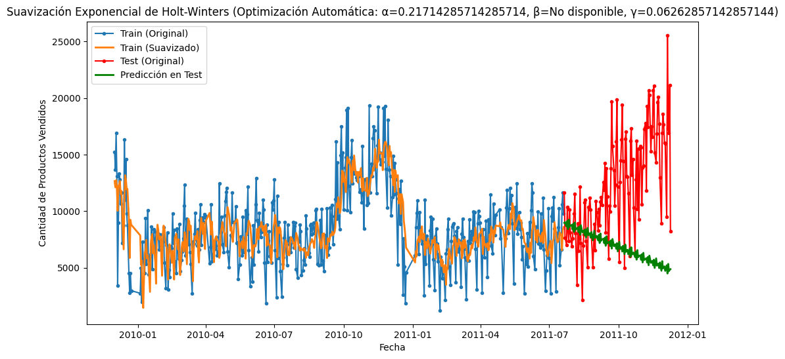
✅ Parámetros optimizados:
- α (Smoothing Level): 0.2171
- β (Smoothing Slope): No disponible
0.0626
El modelo captura bien la estacionalidad en train (naranja), lo que indica que la estacionalidad fue identificada y ajustada correctamente.
La predicción en test (verde) muestra una tendencia descendente en lugar de seguir el patrón de crecimiento de los datos reales (rojo). Esto sugiere que el modelo puede estar sobreajustando la estacionalidad sin considerar adecuadamente la tendencia global.
El valor de 𝛽 (tendencia) es “No disponible”, lo que indica que el modelo no encontró una tendencia significativa en los datos de entrenamiento.
El valor de 𝛾 = 0.0626 sugiere una estacionalidad leve, pero su impacto en las predicciones es fuerte.
from sklearn.metrics import mean_absolute_error, mean_squared_error
from statsmodels.stats.diagnostic import acorr_ljungbox
import numpy as np
# Calcular métricas de error
mae = mean_absolute_error(test['Quantity'], test_predictions)
mse = mean_squared_error(test['Quantity'], test_predictions)
rmse = np.sqrt(mse)
# Evitar NaN en el cálculo del MAPE si hay valores de Quantity cercanos a 0
mape = np.mean(np.abs((test['Quantity'] - test_predictions) / (test['Quantity'].replace(0, np.nan)))) * 100
# Prueba de Ljung-Box para evaluar autocorrelación en los residuos
residuos = test['Quantity'] - test_predictions
# Verificar número de valores en residuos
num_residuos = residuos.dropna().shape[0]
print("Número de valores en residuos:", num_residuos)
# Ajustar el número de lags para Ljung-Box
lags_max = min(10, num_residuos - 1) # Evita valores negativos
if lags_max > 0:
ljung_box_pvalores = acorr_ljungbox(residuos.dropna(), lags=[lags_max], return_df=True)["lb_pvalue"].values[0]
else:
ljung_box_pvalores = np.nan # No se puede calcular
# Mostrar resultados
print(f"📌 MÉTRICAS DEL MODELO DE SUAVIZACIÓN EXPONENCIAL DE HOLT-WINTERS:")
print(f"➡️ MAE (Error Absoluto Medio): {mae:.4f}")
print(f"➡️ MSE (Error Cuadrático Medio): {mse:.4f}")
print(f"➡️ RMSE (Raíz del Error Cuadrático Medio): {rmse:.4f}")
print(f"➡️ MAPE (Error Porcentual Absoluto Medio): {mape:.2f}%")
print(f"➡️ p-valor de la Prueba de Ljung-Box: {ljung_box_pvalores}")
# Interpretación de Ljung-Box
if not np.isnan(ljung_box_pvalores) and ljung_box_pvalores < 0.05:
print("⚠️ Los residuos presentan autocorrelación significativa (p < 0.05).")
elif not np.isnan(ljung_box_pvalores):
print("✅ No se detecta autocorrelación significativa en los residuos (p >= 0.05).")
else:
print("⚠️ No se pudo calcular la prueba de Ljung-Box por falta de datos suficientes.")
Número de valores en residuos: 0
📌 MÉTRICAS DEL MODELO DE SUAVIZACIÓN EXPONENCIAL DE HOLT-WINTERS:
➡️ MAE (Error Absoluto Medio): 6196.8995
➡️ MSE (Error Cuadrático Medio): 60886382.3871
➡️ RMSE (Raíz del Error Cuadrático Medio): 7802.9727
➡️ MAPE (Error Porcentual Absoluto Medio): nan%
➡️ p-valor de la Prueba de Ljung-Box: nan
⚠️ No se pudo calcular la prueba de Ljung-Box por falta de datos suficientes.
C:\Users\ronal\AppData\Local\Temp\ipykernel_18032\3900898755.py:11: RuntimeWarning: '<' not supported between instances of 'int' and 'Timestamp', sort order is undefined for incomparable objects.
mape = np.mean(np.abs((test['Quantity'] - test_predictions) / (test['Quantity'].replace(0, np.nan)))) * 100
ARIMA (Modelo Autorregresivo Integrado de Media Móvil)
# Instalación del paquete necesario
!pip install pmdarima
# Importar librerías necesarias
import pandas as pd
import numpy as np
import matplotlib.pyplot as plt
import statsmodels.api as sm
from statsmodels.tsa.stattools import adfuller
from statsmodels.graphics.tsaplots import plot_acf, plot_pacf
from pmdarima import auto_arima
from sklearn.metrics import mean_absolute_error, mean_squared_error
from statsmodels.stats.diagnostic import acorr_ljungbox
# Convertir 'InvoiceDate' en columna si está en el índice
if isinstance(data4.index, pd.DatetimeIndex):
data4.reset_index(inplace=True)
# Asegurar que 'InvoiceDate' sea de tipo datetime
data4['InvoiceDate'] = pd.to_datetime(data4['InvoiceDate'])
# Agrupar por día y sumar la cantidad de productos vendidos
data_daily = data4.groupby(data4['InvoiceDate'].dt.date)['Quantity'].sum().reset_index()
data_daily['InvoiceDate'] = pd.to_datetime(data_daily['InvoiceDate'])
data_daily.set_index('InvoiceDate', inplace=True)
# División en train y test (80% - 20%)
split_index = int(len(data_daily) * 0.8)
train, test = data_daily[:split_index], data_daily[split_index:]
# 📊 Visualizar la serie temporal
plt.figure(figsize=(12,5))
plt.plot(train.index, train['Quantity'], label='Train')
plt.plot(test.index, test['Quantity'], label='Test', color='red')
plt.title("Serie Temporal de Ventas Diarias")
plt.xlabel("Fecha")
plt.ylabel("Cantidad de Productos Vendidos")
plt.legend()
plt.show()
# 📌 Prueba de Dickey-Fuller para estacionariedad
def test_adf(series):
result = adfuller(series)
print("🔍 Prueba de Dickey-Fuller:")
print(f"➡️ Estadístico ADF: {result[0]:.4f}")
print(f"➡️ p-valor: {result[1]:.4f}")
print(f"➡️ ¿Estacionaria? {'Sí' if result[1] < 0.05 else 'No'} (p < 0.05)")
test_adf(train['Quantity'])
# 📊 Graficar ACF y PACF
fig, axes = plt.subplots(1, 2, figsize=(12, 5))
plot_acf(train['Quantity'], ax=axes[0], lags=30)
axes[0].set_title("Autocorrelación (ACF)")
plot_pacf(train['Quantity'], ax=axes[1], lags=30)
axes[1].set_title("Autocorrelación Parcial (PACF)")
plt.show()
# 📌 Ajustar ARIMA automáticamente
modelo_autoarima = auto_arima(train['Quantity'], seasonal=False, trace=True,
error_action='ignore', suppress_warnings=True, stepwise=True)
print("\n📢 Mejor modelo ARIMA encontrado:", modelo_autoarima.order)
# 📌 Ajustar el mejor modelo ARIMA
modelo_arima = sm.tsa.ARIMA(train['Quantity'], order=modelo_autoarima.order)
modelo_arima_fit = modelo_arima.fit()
print(modelo_arima_fit.summary())
# 📊 Predicción en Test
test_predictions = modelo_arima_fit.forecast(steps=len(test))
# 📊 Graficar con el suavizado del entrenamiento
plt.figure(figsize=(12,6))
plt.plot(train.index, train['Quantity'], label='Train (Original)')
plt.plot(train.index, modelo_arima_fit.fittedvalues, label='Train (Ajustado ARIMA)', color='orange')
plt.plot(test.index, test['Quantity'], label='Test (Original)', color='red')
plt.plot(test.index, test_predictions, label='Predicción ARIMA', color='green')
plt.xlabel('Fecha')
plt.ylabel('Cantidad de Productos Vendidos')
plt.title('Predicción con ARIMA (Valores Ajustados en Train)')
plt.legend()
plt.show()
# 📌 Calcular métricas de error
mae = mean_absolute_error(test['Quantity'], test_predictions)
mse = mean_squared_error(test['Quantity'], test_predictions)
rmse = np.sqrt(mse)
# Evitar NaN en el cálculo del MAPE si hay valores de Quantity cercanos a 0
mape = np.mean(np.abs((test['Quantity'] - test_predictions) / (test['Quantity'].replace(0, np.nan)))) * 100
# 📌 Prueba de Ljung-Box para evaluar autocorrelación en los residuos
residuos = test['Quantity'] - test_predictions
ljung_box_pvalores = acorr_ljungbox(residuos.dropna(), lags=[10], return_df=True)["lb_pvalue"].values[0]
# 📊 Mostrar resultados
print("\n📌 MÉTRICAS DEL MODELO ARIMA:")
print(f"➡️ MAE (Error Absoluto Medio): {mae:.4f}")
print(f"➡️ MSE (Error Cuadrático Medio): {mse:.4f}")
print(f"➡️ RMSE (Raíz del Error Cuadrático Medio): {rmse:.4f}")
print(f"➡️ MAPE (Error Porcentual Absoluto Medio): {mape:.2f}%")
print(f"➡️ p-valor de la Prueba de Ljung-Box: {ljung_box_pvalores:.4f}")
# 📢 Interpretación de la prueba de Ljung-Box
if ljung_box_pvalores < 0.05:
print("⚠️ Los residuos presentan autocorrelación significativa (p < 0.05).")
else:
print("✅ No se detecta autocorrelación significativa en los residuos (p >= 0.05).")
Requirement already satisfied: pmdarima in c:\users\ronal\miniconda3\envs\series_de_tiempo\lib\site-packages (2.0.4)
Requirement already satisfied: joblib>=0.11 in c:\users\ronal\miniconda3\envs\series_de_tiempo\lib\site-packages (from pmdarima) (1.3.2)
Requirement already satisfied: Cython!=0.29.18,!=0.29.31,>=0.29 in c:\users\ronal\miniconda3\envs\series_de_tiempo\lib\site-packages (from pmdarima) (3.0.12)
Requirement already satisfied: numpy>=1.21.2 in c:\users\ronal\miniconda3\envs\series_de_tiempo\lib\site-packages (from pmdarima) (1.25.2)
Requirement already satisfied: pandas>=0.19 in c:\users\ronal\miniconda3\envs\series_de_tiempo\lib\site-packages (from pmdarima) (2.2.3)
Requirement already satisfied: scikit-learn>=0.22 in c:\users\ronal\miniconda3\envs\series_de_tiempo\lib\site-packages (from pmdarima) (1.3.0)
Requirement already satisfied: scipy>=1.3.2 in c:\users\ronal\miniconda3\envs\series_de_tiempo\lib\site-packages (from pmdarima) (1.11.2)
Requirement already satisfied: statsmodels>=0.13.2 in c:\users\ronal\miniconda3\envs\series_de_tiempo\lib\site-packages (from pmdarima) (0.14.4)
Requirement already satisfied: urllib3 in c:\users\ronal\miniconda3\envs\series_de_tiempo\lib\site-packages (from pmdarima) (2.3.0)
Requirement already satisfied: setuptools!=50.0.0,>=38.6.0 in c:\users\ronal\miniconda3\envs\series_de_tiempo\lib\site-packages (from pmdarima) (75.8.0)
Requirement already satisfied: packaging>=17.1 in c:\users\ronal\miniconda3\envs\series_de_tiempo\lib\site-packages (from pmdarima) (24.2)
Requirement already satisfied: python-dateutil>=2.8.2 in c:\users\ronal\miniconda3\envs\series_de_tiempo\lib\site-packages (from pandas>=0.19->pmdarima) (2.9.0.post0)
Requirement already satisfied: pytz>=2020.1 in c:\users\ronal\miniconda3\envs\series_de_tiempo\lib\site-packages (from pandas>=0.19->pmdarima) (2023.3)
Requirement already satisfied: tzdata>=2022.7 in c:\users\ronal\miniconda3\envs\series_de_tiempo\lib\site-packages (from pandas>=0.19->pmdarima) (2023.3)
Requirement already satisfied: threadpoolctl>=2.0.0 in c:\users\ronal\miniconda3\envs\series_de_tiempo\lib\site-packages (from scikit-learn>=0.22->pmdarima) (3.2.0)
Requirement already satisfied: patsy>=0.5.6 in c:\users\ronal\miniconda3\envs\series_de_tiempo\lib\site-packages (from statsmodels>=0.13.2->pmdarima) (1.0.1)
Requirement already satisfied: six>=1.5 in c:\users\ronal\miniconda3\envs\series_de_tiempo\lib\site-packages (from python-dateutil>=2.8.2->pandas>=0.19->pmdarima) (1.17.0)
C:\Users\ronal\AppData\Local\Temp\ipykernel_18032\3325362476.py:20: SettingWithCopyWarning:
A value is trying to be set on a copy of a slice from a DataFrame.
Try using .loc[row_indexer,col_indexer] = value instead
See the caveats in the documentation: https://pandas.pydata.org/pandas-docs/stable/user_guide/indexing.html#returning-a-view-versus-a-copy
data4['InvoiceDate'] = pd.to_datetime(data4['InvoiceDate'])
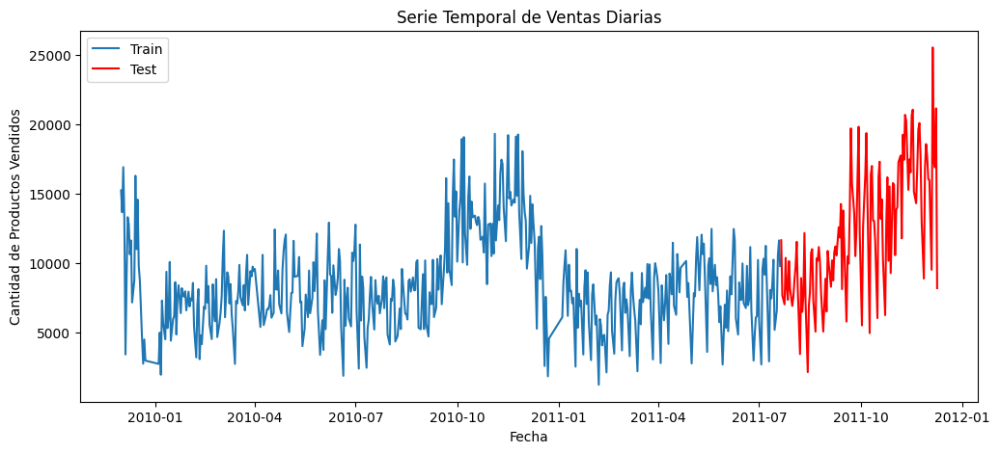
🔍 Prueba de Dickey-Fuller:
➡️ Estadístico ADF: -2.4745
➡️ p-valor: 0.1218
➡️ ¿Estacionaria? No (p < 0.05)
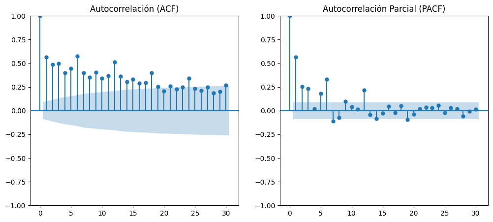
Performing stepwise search to minimize aic
ARIMA(2,1,2)(0,0,0)[0] intercept : AIC=8935.041, Time=0.45 sec
ARIMA(0,1,0)(0,0,0)[0] intercept : AIC=9121.269, Time=0.01 sec
ARIMA(1,1,0)(0,0,0)[0] intercept : AIC=9032.613, Time=0.04 sec
ARIMA(0,1,1)(0,0,0)[0] intercept : AIC=8936.175, Time=0.24 sec
ARIMA(0,1,0)(0,0,0)[0] : AIC=9119.276, Time=0.01 sec
ARIMA(1,1,2)(0,0,0)[0] intercept : AIC=8933.175, Time=0.23 sec
ARIMA(0,1,2)(0,0,0)[0] intercept : AIC=8931.866, Time=0.08 sec
ARIMA(0,1,3)(0,0,0)[0] intercept : AIC=8934.519, Time=0.13 sec
ARIMA(1,1,1)(0,0,0)[0] intercept : AIC=8933.244, Time=0.18 sec
ARIMA(1,1,3)(0,0,0)[0] intercept : AIC=8935.316, Time=0.22 sec
ARIMA(0,1,2)(0,0,0)[0] : AIC=8929.863, Time=0.06 sec
ARIMA(0,1,1)(0,0,0)[0] : AIC=8935.340, Time=0.04 sec
ARIMA(1,1,2)(0,0,0)[0] : AIC=8931.194, Time=0.19 sec
ARIMA(0,1,3)(0,0,0)[0] : AIC=8932.496, Time=0.09 sec
ARIMA(1,1,1)(0,0,0)[0] : AIC=8931.435, Time=0.07 sec
ARIMA(1,1,3)(0,0,0)[0] : AIC=8933.310, Time=0.18 sec
Best model: ARIMA(0,1,2)(0,0,0)[0]
Total fit time: 2.272 seconds
📢 Mejor modelo ARIMA encontrado: (0, 1, 2)
SARIMAX Results
==============================================================================
Dep. Variable: Quantity No. Observations: 483
Model: ARIMA(0, 1, 2) Log Likelihood -4461.931
Date: Sun, 02 Mar 2025 AIC 8929.863
Time: 16:18:10 BIC 8942.397
Sample: 0 HQIC 8934.789
- 483
Covariance Type: opg
==============================================================================
coef std err z P>|z| [0.025 0.975]
------------------------------------------------------------------------------
ma.L1 -0.6891 0.042 -16.235 0.000 -0.772 -0.606
ma.L2 -0.1183 0.040 -2.928 0.003 -0.198 -0.039
sigma2 6.222e+06 3.72e+05 16.727 0.000 5.49e+06 6.95e+06
===================================================================================
Ljung-Box (L1) (Q): 0.03 Jarque-Bera (JB): 5.52
Prob(Q): 0.86 Prob(JB): 0.06
Heteroskedasticity (H): 0.91 Skew: -0.22
Prob(H) (two-sided): 0.55 Kurtosis: 3.30
===================================================================================
Warnings:
[1] Covariance matrix calculated using the outer product of gradients (complex-step).
c:\Users\ronal\miniconda3\envs\series_de_tiempo\lib\site-packages\statsmodels\tsa\base\tsa_model.py:473: ValueWarning: A date index has been provided, but it has no associated frequency information and so will be ignored when e.g. forecasting.
self._init_dates(dates, freq)
c:\Users\ronal\miniconda3\envs\series_de_tiempo\lib\site-packages\statsmodels\tsa\base\tsa_model.py:473: ValueWarning: A date index has been provided, but it has no associated frequency information and so will be ignored when e.g. forecasting.
self._init_dates(dates, freq)
c:\Users\ronal\miniconda3\envs\series_de_tiempo\lib\site-packages\statsmodels\tsa\base\tsa_model.py:473: ValueWarning: A date index has been provided, but it has no associated frequency information and so will be ignored when e.g. forecasting.
self._init_dates(dates, freq)
c:\Users\ronal\miniconda3\envs\series_de_tiempo\lib\site-packages\statsmodels\tsa\base\tsa_model.py:837: ValueWarning: No supported index is available. Prediction results will be given with an integer index beginning at `start`.
return get_prediction_index(
c:\Users\ronal\miniconda3\envs\series_de_tiempo\lib\site-packages\statsmodels\tsa\base\tsa_model.py:837: FutureWarning: No supported index is available. In the next version, calling this method in a model without a supported index will result in an exception.
return get_prediction_index(
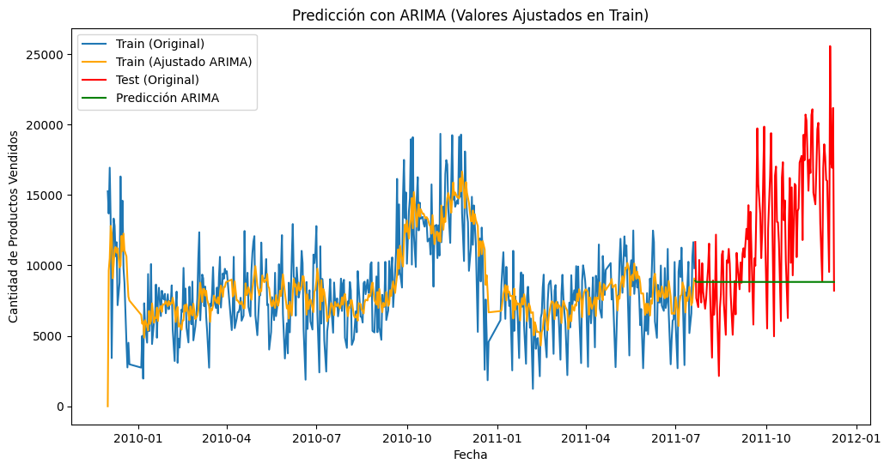
C:\Users\ronal\AppData\Local\Temp\ipykernel_18032\3325362476.py:90: RuntimeWarning: '<' not supported between instances of 'int' and 'Timestamp', sort order is undefined for incomparable objects.
mape = np.mean(np.abs((test['Quantity'] - test_predictions) / (test['Quantity'].replace(0, np.nan)))) * 100
c:\Users\ronal\miniconda3\envs\series_de_tiempo\lib\site-packages\statsmodels\tsa\stattools.py:472: RuntimeWarning: Mean of empty slice.
xo = x - x.mean()
c:\Users\ronal\miniconda3\envs\series_de_tiempo\lib\site-packages\numpy\core\_methods.py:129: RuntimeWarning: invalid value encountered in scalar divide
ret = ret.dtype.type(ret / rcount)
---------------------------------------------------------------------------
ValueError Traceback (most recent call last)
Cell In[57], line 94
92 # 📌 Prueba de Ljung-Box para evaluar autocorrelación en los residuos
93 residuos = test['Quantity'] - test_predictions
---> 94 ljung_box_pvalores = acorr_ljungbox(residuos.dropna(), lags=[10], return_df=True)["lb_pvalue"].values[0]
96 # 📊 Mostrar resultados
97 print("\n📌 MÉTRICAS DEL MODELO ARIMA:")
File c:\Users\ronal\miniconda3\envs\series_de_tiempo\lib\site-packages\statsmodels\stats\diagnostic.py:462, in acorr_ljungbox(x, lags, boxpierce, model_df, period, return_df, auto_lag)
458 maxlag = lags.max()
460 # normalize by nobs not (nobs-nlags)
461 # SS: unbiased=False is default now
--> 462 sacf = acf(x, nlags=maxlag, fft=False)
463 sacf2 = sacf[1:maxlag + 1] ** 2 / (nobs - np.arange(1, maxlag + 1))
464 qljungbox = nobs * (nobs + 2) * np.cumsum(sacf2)[lags - 1]
File c:\Users\ronal\miniconda3\envs\series_de_tiempo\lib\site-packages\statsmodels\tsa\stattools.py:701, in acf(x, adjusted, nlags, qstat, fft, alpha, bartlett_confint, missing)
698 if nlags is None:
699 nlags = min(int(10 * np.log10(nobs)), nobs - 1)
--> 701 avf = acovf(x, adjusted=adjusted, demean=True, fft=fft, missing=missing)
702 acf = avf[: nlags + 1] / avf[0]
703 if not (qstat or alpha):
File c:\Users\ronal\miniconda3\envs\series_de_tiempo\lib\site-packages\pandas\util\_decorators.py:213, in deprecate_kwarg.<locals>._deprecate_kwarg.<locals>.wrapper(*args, **kwargs)
211 raise TypeError(msg)
212 kwargs[new_arg_name] = new_arg_value
--> 213 return func(*args, **kwargs)
File c:\Users\ronal\miniconda3\envs\series_de_tiempo\lib\site-packages\statsmodels\tsa\stattools.py:517, in acovf(x, adjusted, demean, fft, missing, nlag)
515 d = notmask_int.sum() * np.ones(2 * n - 1)
516 else: # biased and no NaNs or missing=="none"
--> 517 d = n * np.ones(2 * n - 1)
519 if fft:
520 nobs = len(xo)
File c:\Users\ronal\miniconda3\envs\series_de_tiempo\lib\site-packages\numpy\core\numeric.py:191, in ones(shape, dtype, order, like)
188 if like is not None:
189 return _ones_with_like(like, shape, dtype=dtype, order=order)
--> 191 a = empty(shape, dtype, order)
192 multiarray.copyto(a, 1, casting='unsafe')
193 return a
ValueError: negative dimensions are not allowed
garch
# 📌 Instalación de paquetes necesarios
!pip install pmdarima arch scikit-learn
# 📌 Importar librerías necesarias
import pandas as pd
import numpy as np
import matplotlib.pyplot as plt
from arch import arch_model
from statsmodels.tsa.stattools import adfuller
from statsmodels.graphics.tsaplots import plot_acf, plot_pacf
from sklearn.metrics import mean_absolute_error, mean_squared_error
from statsmodels.stats.diagnostic import acorr_ljungbox
from pmdarima import auto_arima
from statsmodels.tsa.arima.model import ARIMA
# 📌 Cargar y preparar los datos
# Convertir 'InvoiceDate' en columna si está en el índice
if isinstance(data4.index, pd.DatetimeIndex):
data4.reset_index(inplace=True)
# Asegurar que 'InvoiceDate' sea de tipo datetime
data4['InvoiceDate'] = pd.to_datetime(data4['InvoiceDate'])
# Agrupar por día y sumar la cantidad de productos vendidos
data_daily = data4.groupby(data4['InvoiceDate'].dt.date)['Quantity'].sum().reset_index()
data_daily['InvoiceDate'] = pd.to_datetime(data_daily['InvoiceDate'])
data_daily.set_index('InvoiceDate', inplace=True)
# 📌 División en Train y Test (80% - 20%)
split_index = int(len(data_daily) * 0.8)
train, test = data_daily[:split_index], data_daily[split_index:]
# 📌 Ajustar un modelo ARIMA para obtener los residuos
modelo_autoarima = auto_arima(train['Quantity'], seasonal=False, trace=True,
error_action='ignore', suppress_warnings=True, stepwise=True)
print("\n📢 Mejor modelo ARIMA encontrado:", modelo_autoarima.order)
# 📌 Ajustar el mejor modelo ARIMA
modelo_arima = ARIMA(train['Quantity'], order=modelo_autoarima.order)
modelo_arima_fit = modelo_arima.fit()
print(modelo_arima_fit.summary())
# 📌 Obtener los residuos del modelo ARIMA
residuos_arima = modelo_arima_fit.resid
# 📌 Visualizar la serie de residuos
plt.figure(figsize=(12,5))
plt.plot(residuos_arima)
plt.title("Residuos del Modelo ARIMA")
plt.xlabel("Tiempo")
plt.ylabel("Valor de los Residuos")
plt.show()
# 📌 Prueba de Dickey-Fuller para verificar estacionariedad
def test_adf(series):
result = adfuller(series)
print("🔍 Prueba de Dickey-Fuller:")
print(f"➡️ Estadístico ADF: {result[0]:.4f}")
print(f"➡️ p-valor: {result[1]:.4f}")
print(f"➡️ ¿Estacionaria? {'Sí' if result[1] < 0.05 else 'No'} (p < 0.05)")
test_adf(residuos_arima)
# 📌 Ajustar modelo GARCH sobre los residuos de ARIMA
modelo_garch = arch_model(residuos_arima, vol='Garch', p=1, q=1, mean='Constant')
modelo_garch_fit = modelo_garch.fit(disp='off')
print(modelo_garch_fit.summary())
# 📌 Predicción de la volatilidad con GARCH
forecast_garch = modelo_garch_fit.forecast(horizon=len(test))
pred_volatilidad = np.sqrt(forecast_garch.variance.iloc[-1].values)
# 📌 Verificar que la volatilidad predicha no sea constante o NaN
if np.isnan(pred_volatilidad).any() or np.all(pred_volatilidad == pred_volatilidad[0]):
print("⚠️ Advertencia: La volatilidad predicha es constante o NaN. Se ajustará el modelo.")
modelo_garch = arch_model(residuos_arima, vol='Garch', p=2, q=2, mean='Zero')
modelo_garch_fit = modelo_garch.fit(disp='off')
print(modelo_garch_fit.summary())
forecast_garch = modelo_garch_fit.forecast(horizon=len(test))
pred_volatilidad = np.sqrt(forecast_garch.variance.iloc[-1].values)
# 📌 Predicción con ARIMA-GARCH
test_predictions = modelo_arima_fit.forecast(steps=len(test)) + pred_volatilidad
# 📌 Graficar las predicciones
plt.figure(figsize=(12,6))
plt.plot(train.index, train['Quantity'], label='Train')
plt.plot(test.index, test['Quantity'], label='Test', color='red')
plt.plot(test.index, test_predictions, label='Predicción ARIMA-GARCH', color='green')
plt.xlabel('Fecha')
plt.ylabel('Cantidad de Productos Vendidos')
plt.title('Predicción con ARIMA-GARCH')
plt.legend()
plt.show()
# 📌 Calcular métricas de error
mae = mean_absolute_error(test['Quantity'], test_predictions)
mse = mean_squared_error(test['Quantity'], test_predictions)
rmse = np.sqrt(mse)
mape = np.mean(np.abs((test['Quantity'] - test_predictions) / (test['Quantity'] + 1e-10))) * 100 # Se evita división por cero
# 📌 Prueba de Ljung-Box para evaluar autocorrelación en los residuos
residuos = test['Quantity'] - test_predictions
# 📌 Verificar que hay suficientes datos para la prueba de Ljung-Box
if len(residuos.dropna()) > 10:
ljung_box_pvalores = acorr_ljungbox(residuos.dropna(), lags=[10], return_df=True)["lb_pvalue"].values[0]
else:
ljung_box_pvalores = np.nan # Evita error asignando NaN si no hay suficientes datos
# 📌 Mostrar métricas del modelo
print("\n📌 MÉTRICAS DEL MODELO ARIMA-GARCH:")
print(f"➡️ MAE (Error Absoluto Medio): {mae:.4f}")
print(f"➡️ MSE (Error Cuadrático Medio): {mse:.4f}")
print(f"➡️ RMSE (Raíz del Error Cuadrático Medio): {rmse:.4f}")
print(f"➡️ MAPE (Error Porcentual Absoluto Medio): {mape:.2f}%")
print(f"➡️ p-valor de la Prueba de Ljung-Box: {ljung_box_pvalores:.4f}")
# 📢 Interpretación de la prueba de Ljung-Box
if ljung_box_pvalores < 0.05:
print("⚠️ Los residuos presentan autocorrelación significativa (p < 0.05).")
else:
print("✅ No se detecta autocorrelación significativa en los residuos (p >= 0.05).")
Requirement already satisfied: pmdarima in c:\users\ronal\miniconda3\envs\series_de_tiempo\lib\site-packages (2.0.4)
Requirement already satisfied: arch in c:\users\ronal\miniconda3\envs\series_de_tiempo\lib\site-packages (7.2.0)
Requirement already satisfied: scikit-learn in c:\users\ronal\miniconda3\envs\series_de_tiempo\lib\site-packages (1.3.0)
Requirement already satisfied: joblib>=0.11 in c:\users\ronal\miniconda3\envs\series_de_tiempo\lib\site-packages (from pmdarima) (1.3.2)
Requirement already satisfied: Cython!=0.29.18,!=0.29.31,>=0.29 in c:\users\ronal\miniconda3\envs\series_de_tiempo\lib\site-packages (from pmdarima) (3.0.12)
Requirement already satisfied: numpy>=1.21.2 in c:\users\ronal\miniconda3\envs\series_de_tiempo\lib\site-packages (from pmdarima) (1.25.2)
Requirement already satisfied: pandas>=0.19 in c:\users\ronal\miniconda3\envs\series_de_tiempo\lib\site-packages (from pmdarima) (2.2.3)
Requirement already satisfied: scipy>=1.3.2 in c:\users\ronal\miniconda3\envs\series_de_tiempo\lib\site-packages (from pmdarima) (1.11.2)
Requirement already satisfied: statsmodels>=0.13.2 in c:\users\ronal\miniconda3\envs\series_de_tiempo\lib\site-packages (from pmdarima) (0.14.4)
Requirement already satisfied: urllib3 in c:\users\ronal\miniconda3\envs\series_de_tiempo\lib\site-packages (from pmdarima) (2.3.0)
Requirement already satisfied: setuptools!=50.0.0,>=38.6.0 in c:\users\ronal\miniconda3\envs\series_de_tiempo\lib\site-packages (from pmdarima) (75.8.0)
Requirement already satisfied: packaging>=17.1 in c:\users\ronal\miniconda3\envs\series_de_tiempo\lib\site-packages (from pmdarima) (24.2)
Requirement already satisfied: threadpoolctl>=2.0.0 in c:\users\ronal\miniconda3\envs\series_de_tiempo\lib\site-packages (from scikit-learn) (3.2.0)
Requirement already satisfied: python-dateutil>=2.8.2 in c:\users\ronal\miniconda3\envs\series_de_tiempo\lib\site-packages (from pandas>=0.19->pmdarima) (2.9.0.post0)
Requirement already satisfied: pytz>=2020.1 in c:\users\ronal\miniconda3\envs\series_de_tiempo\lib\site-packages (from pandas>=0.19->pmdarima) (2023.3)
Requirement already satisfied: tzdata>=2022.7 in c:\users\ronal\miniconda3\envs\series_de_tiempo\lib\site-packages (from pandas>=0.19->pmdarima) (2023.3)
Requirement already satisfied: patsy>=0.5.6 in c:\users\ronal\miniconda3\envs\series_de_tiempo\lib\site-packages (from statsmodels>=0.13.2->pmdarima) (1.0.1)
Requirement already satisfied: six>=1.5 in c:\users\ronal\miniconda3\envs\series_de_tiempo\lib\site-packages (from python-dateutil>=2.8.2->pandas>=0.19->pmdarima) (1.17.0)
C:\Users\ronal\AppData\Local\Temp\ipykernel_25836\3916446757.py:22: SettingWithCopyWarning:
A value is trying to be set on a copy of a slice from a DataFrame.
Try using .loc[row_indexer,col_indexer] = value instead
See the caveats in the documentation: https://pandas.pydata.org/pandas-docs/stable/user_guide/indexing.html#returning-a-view-versus-a-copy
data4['InvoiceDate'] = pd.to_datetime(data4['InvoiceDate'])
Performing stepwise search to minimize aic
ARIMA(2,1,2)(0,0,0)[0] intercept : AIC=8935.041, Time=0.40 sec
ARIMA(0,1,0)(0,0,0)[0] intercept : AIC=9121.269, Time=0.01 sec
ARIMA(1,1,0)(0,0,0)[0] intercept : AIC=9032.613, Time=0.04 sec
ARIMA(0,1,1)(0,0,0)[0] intercept : AIC=8936.175, Time=0.23 sec
ARIMA(0,1,0)(0,0,0)[0] : AIC=9119.276, Time=0.01 sec
ARIMA(1,1,2)(0,0,0)[0] intercept : AIC=8933.175, Time=0.23 sec
ARIMA(0,1,2)(0,0,0)[0] intercept : AIC=8931.866, Time=0.09 sec
ARIMA(0,1,3)(0,0,0)[0] intercept : AIC=8934.519, Time=0.13 sec
ARIMA(1,1,1)(0,0,0)[0] intercept : AIC=8933.244, Time=0.19 sec
ARIMA(1,1,3)(0,0,0)[0] intercept : AIC=8935.316, Time=0.23 sec
ARIMA(0,1,2)(0,0,0)[0] : AIC=8929.863, Time=0.07 sec
ARIMA(0,1,1)(0,0,0)[0] : AIC=8935.340, Time=0.04 sec
ARIMA(1,1,2)(0,0,0)[0] : AIC=8931.194, Time=0.20 sec
ARIMA(0,1,3)(0,0,0)[0] : AIC=8932.496, Time=0.08 sec
ARIMA(1,1,1)(0,0,0)[0] : AIC=8931.435, Time=0.05 sec
ARIMA(1,1,3)(0,0,0)[0] : AIC=8933.310, Time=0.16 sec
Best model: ARIMA(0,1,2)(0,0,0)[0]
Total fit time: 2.185 seconds
📢 Mejor modelo ARIMA encontrado: (0, 1, 2)
SARIMAX Results
==============================================================================
Dep. Variable: Quantity No. Observations: 483
Model: ARIMA(0, 1, 2) Log Likelihood -4461.931
Date: Sun, 02 Mar 2025 AIC 8929.863
Time: 16:05:59 BIC 8942.397
Sample: 0 HQIC 8934.789
- 483
Covariance Type: opg
==============================================================================
coef std err z P>|z| [0.025 0.975]
------------------------------------------------------------------------------
ma.L1 -0.6891 0.042 -16.235 0.000 -0.772 -0.606
ma.L2 -0.1183 0.040 -2.928 0.003 -0.198 -0.039
sigma2 6.222e+06 3.72e+05 16.727 0.000 5.49e+06 6.95e+06
===================================================================================
Ljung-Box (L1) (Q): 0.03 Jarque-Bera (JB): 5.52
Prob(Q): 0.86 Prob(JB): 0.06
Heteroskedasticity (H): 0.91 Skew: -0.22
Prob(H) (two-sided): 0.55 Kurtosis: 3.30
===================================================================================
Warnings:
[1] Covariance matrix calculated using the outer product of gradients (complex-step).
c:\Users\ronal\miniconda3\envs\series_de_tiempo\lib\site-packages\statsmodels\tsa\base\tsa_model.py:473: ValueWarning: A date index has been provided, but it has no associated frequency information and so will be ignored when e.g. forecasting.
self._init_dates(dates, freq)
c:\Users\ronal\miniconda3\envs\series_de_tiempo\lib\site-packages\statsmodels\tsa\base\tsa_model.py:473: ValueWarning: A date index has been provided, but it has no associated frequency information and so will be ignored when e.g. forecasting.
self._init_dates(dates, freq)
c:\Users\ronal\miniconda3\envs\series_de_tiempo\lib\site-packages\statsmodels\tsa\base\tsa_model.py:473: ValueWarning: A date index has been provided, but it has no associated frequency information and so will be ignored when e.g. forecasting.
self._init_dates(dates, freq)
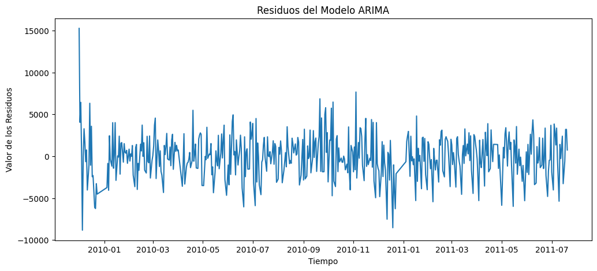
🔍 Prueba de Dickey-Fuller:
➡️ Estadístico ADF: -4.9869
➡️ p-valor: 0.0000
➡️ ¿Estacionaria? Sí (p < 0.05)
Constant Mean - GARCH Model Results
==============================================================================
Dep. Variable: None R-squared: 0.000
Mean Model: Constant Mean Adj. R-squared: 0.000
Vol Model: GARCH Log-Likelihood: -4468.62
Distribution: Normal AIC: 8945.24
Method: Maximum Likelihood BIC: 8961.97
No. Observations: 483
Date: Sun, Mar 02 2025 Df Residuals: 482
Time: 16:06:00 Df Model: 1
Mean Model
=============================================================================
coef std err t P>|t| 95.0% Conf. Int.
-----------------------------------------------------------------------------
mu 7.8413 109.689 7.149e-02 0.943 [-2.071e+02,2.228e+02]
Volatility Model
=============================================================================
coef std err t P>|t| 95.0% Conf. Int.
-----------------------------------------------------------------------------
omega 6.9136e+05 3.864e+05 1.789 7.354e-02 [-6.588e+04,1.449e+06]
alpha[1] 0.0358 2.020e-02 1.771 7.658e-02 [-3.819e-03,7.537e-02]
beta[1] 0.8504 6.902e-02 12.321 6.957e-35 [ 0.715, 0.986]
=============================================================================
Covariance estimator: robust
c:\Users\ronal\miniconda3\envs\series_de_tiempo\lib\site-packages\arch\univariate\base.py:309: DataScaleWarning: y is poorly scaled, which may affect convergence of the optimizer when
estimating the model parameters. The scale of y is 6.914e+06. Parameter
estimation work better when this value is between 1 and 1000. The recommended
rescaling is 0.01 * y.
This warning can be disabled by either rescaling y before initializing the
model or by setting rescale=False.
warnings.warn(
c:\Users\ronal\miniconda3\envs\series_de_tiempo\lib\site-packages\statsmodels\tsa\base\tsa_model.py:837: ValueWarning: No supported index is available. Prediction results will be given with an integer index beginning at `start`.
return get_prediction_index(
c:\Users\ronal\miniconda3\envs\series_de_tiempo\lib\site-packages\statsmodels\tsa\base\tsa_model.py:837: FutureWarning: No supported index is available. In the next version, calling this method in a model without a supported index will result in an exception.
return get_prediction_index(
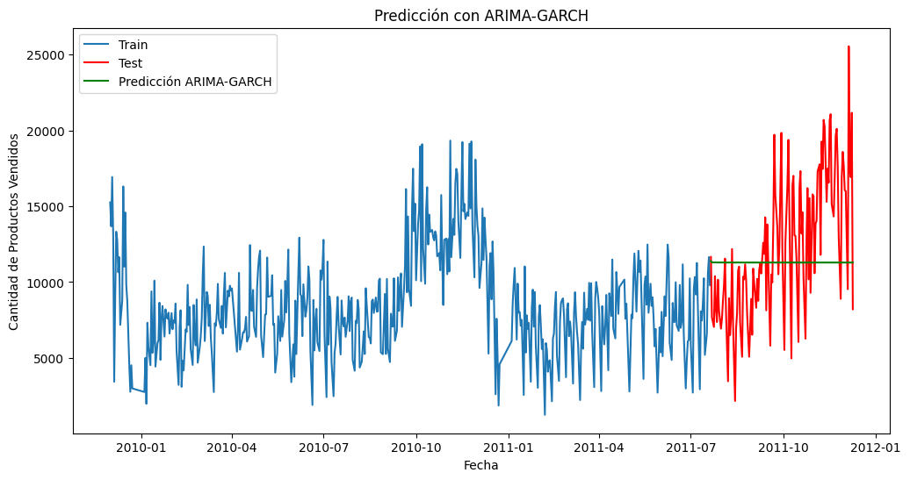
📌 MÉTRICAS DEL MODELO ARIMA-GARCH:
➡️ MAE (Error Absoluto Medio): 3821.4341
➡️ MSE (Error Cuadrático Medio): 22117973.8526
➡️ RMSE (Raíz del Error Cuadrático Medio): 4702.9750
➡️ MAPE (Error Porcentual Absoluto Medio): nan%
➡️ p-valor de la Prueba de Ljung-Box: nan
✅ No se detecta autocorrelación significativa en los residuos (p >= 0.05).
C:\Users\ronal\AppData\Local\Temp\ipykernel_25836\3916446757.py:100: RuntimeWarning: '<' not supported between instances of 'int' and 'Timestamp', sort order is undefined for incomparable objects.
mape = np.mean(np.abs((test['Quantity'] - test_predictions) / (test['Quantity'] + 1e-10))) * 100 # Se evita división por cero
MLP (Perceptrón Multicapa, una red neuronal artificial)
# 📌 Instalación de paquetes necesarios
!pip install pmdarima scikit-learn tensorflow statsmodels
# 📌 Importar librerías necesarias
import pandas as pd
import numpy as np
import matplotlib.pyplot as plt
from sklearn.neural_network import MLPRegressor
from sklearn.preprocessing import MinMaxScaler
from sklearn.metrics import mean_absolute_error, mean_squared_error
from statsmodels.stats.diagnostic import acorr_ljungbox
# 📌 Cargar y preparar los datos
# Convertir 'InvoiceDate' en columna si está en el índice
if isinstance(data4.index, pd.DatetimeIndex):
data4.reset_index(inplace=True)
# Asegurar que 'InvoiceDate' sea de tipo datetime
data4['InvoiceDate'] = pd.to_datetime(data4['InvoiceDate'])
# Agrupar por día y sumar la cantidad de productos vendidos
data_daily = data4.groupby(data4['InvoiceDate'].dt.date)['Quantity'].sum().reset_index()
data_daily['InvoiceDate'] = pd.to_datetime(data_daily['InvoiceDate'])
data_daily.set_index('InvoiceDate', inplace=True)
# 📌 División en Train y Test (80% - 20%)
split_index = int(len(data_daily) * 0.8)
train, test = data_daily[:split_index], data_daily[split_index:]
# 📌 Normalizar los datos (MLP es sensible a las escalas)
scaler = MinMaxScaler()
train_scaled = scaler.fit_transform(train)
test_scaled = scaler.transform(test)
# 📌 Crear conjuntos de datos en formato supervisado
def create_supervised_data(series, n_lags=10):
X, y = [], []
for i in range(n_lags, len(series)):
X.append(series[i-n_lags:i]) # Ventana de tiempo pasada
y.append(series[i]) # Valor futuro a predecir
return np.array(X), np.array(y)
n_lags = 10 # Número de días anteriores para predecir el siguiente
X_train, y_train = create_supervised_data(train_scaled, n_lags)
X_test, y_test = create_supervised_data(test_scaled, n_lags)
# 📌 Aplanar X_train y X_test para que tengan forma (muestras, n_lags)
X_train = X_train.reshape(X_train.shape[0], X_train.shape[1])
X_test = X_test.reshape(X_test.shape[0], X_test.shape[1])
# 📌 Definir el modelo MLP
mlp = MLPRegressor(hidden_layer_sizes=(50,50), activation='relu', solver='adam', max_iter=500, random_state=42)
# 📌 Entrenar el modelo
mlp.fit(X_train, y_train)
# 📌 Hacer predicciones
predictions_scaled = mlp.predict(X_test)
# 📌 Desnormalizar las predicciones
predictions = scaler.inverse_transform(predictions_scaled.reshape(-1, 1))
# 📌 Evaluar el modelo
y_test_original = scaler.inverse_transform(y_test.reshape(-1, 1))
mae = mean_absolute_error(y_test_original, predictions)
mse = mean_squared_error(y_test_original, predictions)
rmse = np.sqrt(mse)
mape = np.mean(np.abs((y_test_original - predictions) / (y_test_original + 1e-10))) * 100 # Se evita división por cero
# 📌 Prueba de Ljung-Box para evaluar autocorrelación en los residuos
residuos = y_test_original.flatten() - predictions.flatten()
ljung_box_pvalores = acorr_ljungbox(residuos, lags=[10], return_df=True)["lb_pvalue"].values[0]
# 📌 Graficar los resultados
plt.figure(figsize=(12,6))
plt.plot(train.index[n_lags:], train['Quantity'][n_lags:], label='Train')
plt.plot(test.index[n_lags:], test['Quantity'][n_lags:], label='Test', color='red')
plt.plot(test.index[n_lags:], predictions, label='Predicción MLP', color='green')
plt.xlabel('Fecha')
plt.ylabel('Cantidad de Productos Vendidos')
plt.title('Predicción con Perceptrón Multicapa (MLP)')
plt.legend()
plt.show()
# 📌 Imprimir métricas de error
print("\n📌 MÉTRICAS DEL MODELO MLP:")
print(f"➡️ MAE (Error Absoluto Medio): {mae:.4f}")
print(f"➡️ MSE (Error Cuadrático Medio): {mse:.4f}")
print(f"➡️ RMSE (Raíz del Error Cuadrático Medio): {rmse:.4f}")
print(f"➡️ MAPE (Error Porcentual Absoluto Medio): {mape:.2f}%")
print(f"➡️ p-valor de la Prueba de Ljung-Box: {ljung_box_pvalores:.4f}")
# 📢 Interpretación de la prueba de Ljung-Box
if ljung_box_pvalores < 0.05:
print("⚠️ Los residuos presentan autocorrelación significativa (p < 0.05).")
else:
print("✅ No se detecta autocorrelación significativa en los residuos (p >= 0.05).")
Requirement already satisfied: pmdarima in c:\users\ronal\miniconda3\envs\series_de_tiempo\lib\site-packages (2.0.4)
Requirement already satisfied: scikit-learn in c:\users\ronal\miniconda3\envs\series_de_tiempo\lib\site-packages (1.3.0)
Requirement already satisfied: tensorflow in c:\users\ronal\miniconda3\envs\series_de_tiempo\lib\site-packages (2.10.1)
Requirement already satisfied: statsmodels in c:\users\ronal\miniconda3\envs\series_de_tiempo\lib\site-packages (0.14.4)
Requirement already satisfied: joblib>=0.11 in c:\users\ronal\miniconda3\envs\series_de_tiempo\lib\site-packages (from pmdarima) (1.3.2)
Requirement already satisfied: Cython!=0.29.18,!=0.29.31,>=0.29 in c:\users\ronal\miniconda3\envs\series_de_tiempo\lib\site-packages (from pmdarima) (3.0.12)
Requirement already satisfied: numpy>=1.21.2 in c:\users\ronal\miniconda3\envs\series_de_tiempo\lib\site-packages (from pmdarima) (1.25.2)
Requirement already satisfied: pandas>=0.19 in c:\users\ronal\miniconda3\envs\series_de_tiempo\lib\site-packages (from pmdarima) (2.2.3)
Requirement already satisfied: scipy>=1.3.2 in c:\users\ronal\miniconda3\envs\series_de_tiempo\lib\site-packages (from pmdarima) (1.11.2)
Requirement already satisfied: urllib3 in c:\users\ronal\miniconda3\envs\series_de_tiempo\lib\site-packages (from pmdarima) (2.3.0)
Requirement already satisfied: setuptools!=50.0.0,>=38.6.0 in c:\users\ronal\miniconda3\envs\series_de_tiempo\lib\site-packages (from pmdarima) (75.8.0)
Requirement already satisfied: packaging>=17.1 in c:\users\ronal\miniconda3\envs\series_de_tiempo\lib\site-packages (from pmdarima) (24.2)
Requirement already satisfied: threadpoolctl>=2.0.0 in c:\users\ronal\miniconda3\envs\series_de_tiempo\lib\site-packages (from scikit-learn) (3.2.0)
Requirement already satisfied: absl-py>=1.0.0 in c:\users\ronal\miniconda3\envs\series_de_tiempo\lib\site-packages (from tensorflow) (1.4.0)
Requirement already satisfied: astunparse>=1.6.0 in c:\users\ronal\miniconda3\envs\series_de_tiempo\lib\site-packages (from tensorflow) (1.6.3)
Requirement already satisfied: flatbuffers>=2.0 in c:\users\ronal\miniconda3\envs\series_de_tiempo\lib\site-packages (from tensorflow) (23.5.26)
Requirement already satisfied: gast<=0.4.0,>=0.2.1 in c:\users\ronal\miniconda3\envs\series_de_tiempo\lib\site-packages (from tensorflow) (0.4.0)
Requirement already satisfied: google-pasta>=0.1.1 in c:\users\ronal\miniconda3\envs\series_de_tiempo\lib\site-packages (from tensorflow) (0.2.0)
Requirement already satisfied: h5py>=2.9.0 in c:\users\ronal\miniconda3\envs\series_de_tiempo\lib\site-packages (from tensorflow) (3.9.0)
Requirement already satisfied: keras-preprocessing>=1.1.1 in c:\users\ronal\miniconda3\envs\series_de_tiempo\lib\site-packages (from tensorflow) (1.1.2)
Requirement already satisfied: libclang>=13.0.0 in c:\users\ronal\miniconda3\envs\series_de_tiempo\lib\site-packages (from tensorflow) (16.0.6)
Requirement already satisfied: opt-einsum>=2.3.2 in c:\users\ronal\miniconda3\envs\series_de_tiempo\lib\site-packages (from tensorflow) (3.3.0)
Requirement already satisfied: protobuf<3.20,>=3.9.2 in c:\users\ronal\miniconda3\envs\series_de_tiempo\lib\site-packages (from tensorflow) (3.19.6)
Requirement already satisfied: six>=1.12.0 in c:\users\ronal\miniconda3\envs\series_de_tiempo\lib\site-packages (from tensorflow) (1.17.0)
Requirement already satisfied: termcolor>=1.1.0 in c:\users\ronal\miniconda3\envs\series_de_tiempo\lib\site-packages (from tensorflow) (2.3.0)
Requirement already satisfied: typing-extensions>=3.6.6 in c:\users\ronal\miniconda3\envs\series_de_tiempo\lib\site-packages (from tensorflow) (4.12.2)
Requirement already satisfied: wrapt>=1.11.0 in c:\users\ronal\miniconda3\envs\series_de_tiempo\lib\site-packages (from tensorflow) (1.15.0)
Requirement already satisfied: tensorflow-io-gcs-filesystem>=0.23.1 in c:\users\ronal\miniconda3\envs\series_de_tiempo\lib\site-packages (from tensorflow) (0.31.0)
Requirement already satisfied: grpcio<2.0,>=1.24.3 in c:\users\ronal\miniconda3\envs\series_de_tiempo\lib\site-packages (from tensorflow) (1.57.0)
Requirement already satisfied: tensorboard<2.11,>=2.10 in c:\users\ronal\miniconda3\envs\series_de_tiempo\lib\site-packages (from tensorflow) (2.10.1)
Requirement already satisfied: tensorflow-estimator<2.11,>=2.10.0 in c:\users\ronal\miniconda3\envs\series_de_tiempo\lib\site-packages (from tensorflow) (2.10.0)
Requirement already satisfied: keras<2.11,>=2.10.0 in c:\users\ronal\miniconda3\envs\series_de_tiempo\lib\site-packages (from tensorflow) (2.10.0)
Requirement already satisfied: patsy>=0.5.6 in c:\users\ronal\miniconda3\envs\series_de_tiempo\lib\site-packages (from statsmodels) (1.0.1)
Requirement already satisfied: wheel<1.0,>=0.23.0 in c:\users\ronal\miniconda3\envs\series_de_tiempo\lib\site-packages (from astunparse>=1.6.0->tensorflow) (0.45.1)
Requirement already satisfied: python-dateutil>=2.8.2 in c:\users\ronal\miniconda3\envs\series_de_tiempo\lib\site-packages (from pandas>=0.19->pmdarima) (2.9.0.post0)
Requirement already satisfied: pytz>=2020.1 in c:\users\ronal\miniconda3\envs\series_de_tiempo\lib\site-packages (from pandas>=0.19->pmdarima) (2023.3)
Requirement already satisfied: tzdata>=2022.7 in c:\users\ronal\miniconda3\envs\series_de_tiempo\lib\site-packages (from pandas>=0.19->pmdarima) (2023.3)
Requirement already satisfied: google-auth<3,>=1.6.3 in c:\users\ronal\miniconda3\envs\series_de_tiempo\lib\site-packages (from tensorboard<2.11,>=2.10->tensorflow) (2.38.0)
Requirement already satisfied: google-auth-oauthlib<0.5,>=0.4.1 in c:\users\ronal\miniconda3\envs\series_de_tiempo\lib\site-packages (from tensorboard<2.11,>=2.10->tensorflow) (0.4.6)
Requirement already satisfied: markdown>=2.6.8 in c:\users\ronal\miniconda3\envs\series_de_tiempo\lib\site-packages (from tensorboard<2.11,>=2.10->tensorflow) (3.4.4)
Requirement already satisfied: requests<3,>=2.21.0 in c:\users\ronal\miniconda3\envs\series_de_tiempo\lib\site-packages (from tensorboard<2.11,>=2.10->tensorflow) (2.32.3)
Requirement already satisfied: tensorboard-data-server<0.7.0,>=0.6.0 in c:\users\ronal\miniconda3\envs\series_de_tiempo\lib\site-packages (from tensorboard<2.11,>=2.10->tensorflow) (0.6.1)
Requirement already satisfied: tensorboard-plugin-wit>=1.6.0 in c:\users\ronal\miniconda3\envs\series_de_tiempo\lib\site-packages (from tensorboard<2.11,>=2.10->tensorflow) (1.8.1)
Requirement already satisfied: werkzeug>=1.0.1 in c:\users\ronal\miniconda3\envs\series_de_tiempo\lib\site-packages (from tensorboard<2.11,>=2.10->tensorflow) (2.3.7)
Requirement already satisfied: cachetools<6.0,>=2.0.0 in c:\users\ronal\miniconda3\envs\series_de_tiempo\lib\site-packages (from google-auth<3,>=1.6.3->tensorboard<2.11,>=2.10->tensorflow) (5.3.1)
Requirement already satisfied: pyasn1-modules>=0.2.1 in c:\users\ronal\miniconda3\envs\series_de_tiempo\lib\site-packages (from google-auth<3,>=1.6.3->tensorboard<2.11,>=2.10->tensorflow) (0.3.0)
Requirement already satisfied: rsa<5,>=3.1.4 in c:\users\ronal\miniconda3\envs\series_de_tiempo\lib\site-packages (from google-auth<3,>=1.6.3->tensorboard<2.11,>=2.10->tensorflow) (4.9)
Requirement already satisfied: requests-oauthlib>=0.7.0 in c:\users\ronal\miniconda3\envs\series_de_tiempo\lib\site-packages (from google-auth-oauthlib<0.5,>=0.4.1->tensorboard<2.11,>=2.10->tensorflow) (1.3.1)
Requirement already satisfied: importlib-metadata>=4.4 in c:\users\ronal\miniconda3\envs\series_de_tiempo\lib\site-packages (from markdown>=2.6.8->tensorboard<2.11,>=2.10->tensorflow) (8.6.1)
Requirement already satisfied: charset-normalizer<4,>=2 in c:\users\ronal\miniconda3\envs\series_de_tiempo\lib\site-packages (from requests<3,>=2.21.0->tensorboard<2.11,>=2.10->tensorflow) (3.4.1)
Requirement already satisfied: idna<4,>=2.5 in c:\users\ronal\miniconda3\envs\series_de_tiempo\lib\site-packages (from requests<3,>=2.21.0->tensorboard<2.11,>=2.10->tensorflow) (3.10)
Requirement already satisfied: certifi>=2017.4.17 in c:\users\ronal\miniconda3\envs\series_de_tiempo\lib\site-packages (from requests<3,>=2.21.0->tensorboard<2.11,>=2.10->tensorflow) (2025.1.31)
Requirement already satisfied: MarkupSafe>=2.1.1 in c:\users\ronal\miniconda3\envs\series_de_tiempo\lib\site-packages (from werkzeug>=1.0.1->tensorboard<2.11,>=2.10->tensorflow) (3.0.2)
Requirement already satisfied: zipp>=3.20 in c:\users\ronal\miniconda3\envs\series_de_tiempo\lib\site-packages (from importlib-metadata>=4.4->markdown>=2.6.8->tensorboard<2.11,>=2.10->tensorflow) (3.21.0)
Requirement already satisfied: pyasn1<0.6.0,>=0.4.6 in c:\users\ronal\miniconda3\envs\series_de_tiempo\lib\site-packages (from pyasn1-modules>=0.2.1->google-auth<3,>=1.6.3->tensorboard<2.11,>=2.10->tensorflow) (0.5.0)
Requirement already satisfied: oauthlib>=3.0.0 in c:\users\ronal\miniconda3\envs\series_de_tiempo\lib\site-packages (from requests-oauthlib>=0.7.0->google-auth-oauthlib<0.5,>=0.4.1->tensorboard<2.11,>=2.10->tensorflow) (3.2.2)
C:\Users\ronal\AppData\Local\Temp\ipykernel_18032\1973513299.py:19: SettingWithCopyWarning:
A value is trying to be set on a copy of a slice from a DataFrame.
Try using .loc[row_indexer,col_indexer] = value instead
See the caveats in the documentation: https://pandas.pydata.org/pandas-docs/stable/user_guide/indexing.html#returning-a-view-versus-a-copy
data4['InvoiceDate'] = pd.to_datetime(data4['InvoiceDate'])
c:\Users\ronal\miniconda3\envs\series_de_tiempo\lib\site-packages\sklearn\neural_network\_multilayer_perceptron.py:1625: DataConversionWarning: A column-vector y was passed when a 1d array was expected. Please change the shape of y to (n_samples, ), for example using ravel().
y = column_or_1d(y, warn=True)
📌 MÉTRICAS DEL MODELO MLP:
➡️ MAE (Error Absoluto Medio): 2671.9283
➡️ MSE (Error Cuadrático Medio): 11147317.6477
➡️ RMSE (Raíz del Error Cuadrático Medio): 3338.7599
➡️ MAPE (Error Porcentual Absoluto Medio): 25.98%
➡️ p-valor de la Prueba de Ljung-Box: 0.0005
⚠️ Los residuos presentan autocorrelación significativa (p < 0.05).
El modelo MLP muestra una capacidad moderada para capturar la tendencia general de las ventas diarias, aunque con ciertas limitaciones en la predicción de la variabilidad extrema de la serie. Las métricas de error reflejan que el modelo tiene una precisión aceptable, con un MAE de 2671.93 y un RMSE de 3338.76, lo que indica que, en promedio, las predicciones se desvían en aproximadamente 3339 unidades de la cantidad real de ventas. Sin embargo, el MAPE del 25.98% sugiere que el error relativo sigue siendo alto, lo que puede ser problemático para aplicaciones donde se requiera mayor precisión. Además, la prueba de Ljung-Box arroja un p-valor de 0.0005, lo que indica que los residuos presentan autocorrelación significativa, es decir, que el modelo no ha capturado completamente la estructura temporal de los datos. Esto sugiere que se podrían probar ajustes adicionales, como aumentar la cantidad de neuronas, agregar más capas ocultas o experimentar con otros hiperparámetros para mejorar la capacidad del modelo de capturar la complejidad de la serie temporal.
RNN (Red Neuronal Recurrente)
# 📌 Instalación de paquetes necesarios
!pip install pmdarima tensorflow scikit-learn
# 📌 Importar librerías necesarias
import pandas as pd
import numpy as np
import matplotlib.pyplot as plt
import tensorflow as tf
from tensorflow.keras.models import Sequential
from tensorflow.keras.layers import SimpleRNN, Dense
from sklearn.preprocessing import MinMaxScaler
from sklearn.metrics import mean_absolute_error, mean_squared_error
from statsmodels.stats.diagnostic import acorr_ljungbox
# 📌 Cargar y preparar los datos
# Convertir 'InvoiceDate' en columna si está en el índice
if isinstance(data4.index, pd.DatetimeIndex):
data4.reset_index(inplace=True)
# Asegurar que 'InvoiceDate' sea de tipo datetime
data4['InvoiceDate'] = pd.to_datetime(data4['InvoiceDate'])
# Agrupar por día y sumar la cantidad de productos vendidos
data_daily = data4.groupby(data4['InvoiceDate'].dt.date)['Quantity'].sum().reset_index()
data_daily['InvoiceDate'] = pd.to_datetime(data_daily['InvoiceDate'])
data_daily.set_index('InvoiceDate', inplace=True)
# 📌 División en Train y Test (80% - 20%)
split_index = int(len(data_daily) * 0.8)
train, test = data_daily[:split_index], data_daily[split_index:]
# 📌 Normalizar los datos (RNN es sensible a las escalas)
scaler = MinMaxScaler()
train_scaled = scaler.fit_transform(train)
test_scaled = scaler.transform(test)
# 📌 Crear conjuntos de datos en formato supervisado para RNN
def create_rnn_data(series, n_lags=10):
X, y = [], []
for i in range(n_lags, len(series)):
X.append(series[i-n_lags:i]) # Ventana de tiempo pasada
y.append(series[i]) # Valor futuro a predecir
return np.array(X), np.array(y)
n_lags = 10 # Número de días anteriores para predecir el siguiente
X_train, y_train = create_rnn_data(train_scaled, n_lags)
X_test, y_test = create_rnn_data(test_scaled, n_lags)
# 📌 Ajustar la forma de los datos para RNN (muestras, pasos de tiempo, características)
X_train = X_train.reshape(X_train.shape[0], X_train.shape[1], 1)
X_test = X_test.reshape(X_test.shape[0], X_test.shape[1], 1)
# 📌 Definir el modelo RNN
model = Sequential([
SimpleRNN(50, activation='relu', return_sequences=False, input_shape=(n_lags, 1)),
Dense(1)
])
# 📌 Compilar el modelo
model.compile(optimizer='adam', loss='mse')
# 📌 Entrenar el modelo
history = model.fit(X_train, y_train, epochs=50, batch_size=16, validation_data=(X_test, y_test), verbose=1)
# 📌 Hacer predicciones
predictions_scaled = model.predict(X_test)
# 📌 Desnormalizar las predicciones
predictions = scaler.inverse_transform(predictions_scaled)
# 📌 Evaluar el modelo
y_test_original = scaler.inverse_transform(y_test.reshape(-1, 1))
mae = mean_absolute_error(y_test_original, predictions)
mse = mean_squared_error(y_test_original, predictions)
rmse = np.sqrt(mse)
mape = np.mean(np.abs((y_test_original - predictions) / (y_test_original + 1e-10))) * 100 # Se evita división por cero
# 📌 Prueba de Ljung-Box para evaluar autocorrelación en los residuos
residuos = y_test_original.flatten() - predictions.flatten()
ljung_box_pvalores = acorr_ljungbox(residuos, lags=[10], return_df=True)["lb_pvalue"].values[0]
# 📌 Graficar los resultados
plt.figure(figsize=(12,6))
plt.plot(train.index[n_lags:], train['Quantity'][n_lags:], label='Train')
plt.plot(test.index[n_lags:], test['Quantity'][n_lags:], label='Test', color='red')
plt.plot(test.index[n_lags:], predictions, label='Predicción RNN', color='green')
plt.xlabel('Fecha')
plt.ylabel('Cantidad de Productos Vendidos')
plt.title('Predicción con Red Neuronal Recurrente (RNN)')
plt.legend()
plt.show()
# 📌 Imprimir métricas de error
print("\n📌 MÉTRICAS DEL MODELO RNN:")
print(f"➡️ MAE (Error Absoluto Medio): {mae:.4f}")
print(f"➡️ MSE (Error Cuadrático Medio): {mse:.4f}")
print(f"➡️ RMSE (Raíz del Error Cuadrático Medio): {rmse:.4f}")
print(f"➡️ MAPE (Error Porcentual Absoluto Medio): {mape:.2f}%")
print(f"➡️ p-valor de la Prueba de Ljung-Box: {ljung_box_pvalores:.4f}")
# 📢 Interpretación de la prueba de Ljung-Box
if ljung_box_pvalores < 0.05:
print("⚠️ Los residuos presentan autocorrelación significativa (p < 0.05).")
else:
print("✅ No se detecta autocorrelación significativa en los residuos (p >= 0.05).")
Requirement already satisfied: pmdarima in c:\users\ronal\miniconda3\envs\series_de_tiempo\lib\site-packages (2.0.4)
Requirement already satisfied: tensorflow in c:\users\ronal\miniconda3\envs\series_de_tiempo\lib\site-packages (2.10.1)
Requirement already satisfied: scikit-learn in c:\users\ronal\miniconda3\envs\series_de_tiempo\lib\site-packages (1.3.0)
Requirement already satisfied: joblib>=0.11 in c:\users\ronal\miniconda3\envs\series_de_tiempo\lib\site-packages (from pmdarima) (1.3.2)
Requirement already satisfied: Cython!=0.29.18,!=0.29.31,>=0.29 in c:\users\ronal\miniconda3\envs\series_de_tiempo\lib\site-packages (from pmdarima) (3.0.12)
Requirement already satisfied: numpy>=1.21.2 in c:\users\ronal\miniconda3\envs\series_de_tiempo\lib\site-packages (from pmdarima) (1.25.2)
Requirement already satisfied: pandas>=0.19 in c:\users\ronal\miniconda3\envs\series_de_tiempo\lib\site-packages (from pmdarima) (2.2.3)
Requirement already satisfied: scipy>=1.3.2 in c:\users\ronal\miniconda3\envs\series_de_tiempo\lib\site-packages (from pmdarima) (1.11.2)
Requirement already satisfied: statsmodels>=0.13.2 in c:\users\ronal\miniconda3\envs\series_de_tiempo\lib\site-packages (from pmdarima) (0.14.4)
Requirement already satisfied: urllib3 in c:\users\ronal\miniconda3\envs\series_de_tiempo\lib\site-packages (from pmdarima) (2.3.0)
Requirement already satisfied: setuptools!=50.0.0,>=38.6.0 in c:\users\ronal\miniconda3\envs\series_de_tiempo\lib\site-packages (from pmdarima) (75.8.0)
Requirement already satisfied: packaging>=17.1 in c:\users\ronal\miniconda3\envs\series_de_tiempo\lib\site-packages (from pmdarima) (24.2)
Requirement already satisfied: absl-py>=1.0.0 in c:\users\ronal\miniconda3\envs\series_de_tiempo\lib\site-packages (from tensorflow) (1.4.0)
Requirement already satisfied: astunparse>=1.6.0 in c:\users\ronal\miniconda3\envs\series_de_tiempo\lib\site-packages (from tensorflow) (1.6.3)
Requirement already satisfied: flatbuffers>=2.0 in c:\users\ronal\miniconda3\envs\series_de_tiempo\lib\site-packages (from tensorflow) (23.5.26)
Requirement already satisfied: gast<=0.4.0,>=0.2.1 in c:\users\ronal\miniconda3\envs\series_de_tiempo\lib\site-packages (from tensorflow) (0.4.0)
Requirement already satisfied: google-pasta>=0.1.1 in c:\users\ronal\miniconda3\envs\series_de_tiempo\lib\site-packages (from tensorflow) (0.2.0)
Requirement already satisfied: h5py>=2.9.0 in c:\users\ronal\miniconda3\envs\series_de_tiempo\lib\site-packages (from tensorflow) (3.9.0)
Requirement already satisfied: keras-preprocessing>=1.1.1 in c:\users\ronal\miniconda3\envs\series_de_tiempo\lib\site-packages (from tensorflow) (1.1.2)
Requirement already satisfied: libclang>=13.0.0 in c:\users\ronal\miniconda3\envs\series_de_tiempo\lib\site-packages (from tensorflow) (16.0.6)
Requirement already satisfied: opt-einsum>=2.3.2 in c:\users\ronal\miniconda3\envs\series_de_tiempo\lib\site-packages (from tensorflow) (3.3.0)
Requirement already satisfied: protobuf<3.20,>=3.9.2 in c:\users\ronal\miniconda3\envs\series_de_tiempo\lib\site-packages (from tensorflow) (3.19.6)
Requirement already satisfied: six>=1.12.0 in c:\users\ronal\miniconda3\envs\series_de_tiempo\lib\site-packages (from tensorflow) (1.17.0)
Requirement already satisfied: termcolor>=1.1.0 in c:\users\ronal\miniconda3\envs\series_de_tiempo\lib\site-packages (from tensorflow) (2.3.0)
Requirement already satisfied: typing-extensions>=3.6.6 in c:\users\ronal\miniconda3\envs\series_de_tiempo\lib\site-packages (from tensorflow) (4.12.2)
Requirement already satisfied: wrapt>=1.11.0 in c:\users\ronal\miniconda3\envs\series_de_tiempo\lib\site-packages (from tensorflow) (1.15.0)
Requirement already satisfied: tensorflow-io-gcs-filesystem>=0.23.1 in c:\users\ronal\miniconda3\envs\series_de_tiempo\lib\site-packages (from tensorflow) (0.31.0)
Requirement already satisfied: grpcio<2.0,>=1.24.3 in c:\users\ronal\miniconda3\envs\series_de_tiempo\lib\site-packages (from tensorflow) (1.57.0)
Requirement already satisfied: tensorboard<2.11,>=2.10 in c:\users\ronal\miniconda3\envs\series_de_tiempo\lib\site-packages (from tensorflow) (2.10.1)
Requirement already satisfied: tensorflow-estimator<2.11,>=2.10.0 in c:\users\ronal\miniconda3\envs\series_de_tiempo\lib\site-packages (from tensorflow) (2.10.0)
Requirement already satisfied: keras<2.11,>=2.10.0 in c:\users\ronal\miniconda3\envs\series_de_tiempo\lib\site-packages (from tensorflow) (2.10.0)
Requirement already satisfied: threadpoolctl>=2.0.0 in c:\users\ronal\miniconda3\envs\series_de_tiempo\lib\site-packages (from scikit-learn) (3.2.0)
Requirement already satisfied: wheel<1.0,>=0.23.0 in c:\users\ronal\miniconda3\envs\series_de_tiempo\lib\site-packages (from astunparse>=1.6.0->tensorflow) (0.45.1)
Requirement already satisfied: python-dateutil>=2.8.2 in c:\users\ronal\miniconda3\envs\series_de_tiempo\lib\site-packages (from pandas>=0.19->pmdarima) (2.9.0.post0)
Requirement already satisfied: pytz>=2020.1 in c:\users\ronal\miniconda3\envs\series_de_tiempo\lib\site-packages (from pandas>=0.19->pmdarima) (2023.3)
Requirement already satisfied: tzdata>=2022.7 in c:\users\ronal\miniconda3\envs\series_de_tiempo\lib\site-packages (from pandas>=0.19->pmdarima) (2023.3)
Requirement already satisfied: patsy>=0.5.6 in c:\users\ronal\miniconda3\envs\series_de_tiempo\lib\site-packages (from statsmodels>=0.13.2->pmdarima) (1.0.1)
Requirement already satisfied: google-auth<3,>=1.6.3 in c:\users\ronal\miniconda3\envs\series_de_tiempo\lib\site-packages (from tensorboard<2.11,>=2.10->tensorflow) (2.38.0)
Requirement already satisfied: google-auth-oauthlib<0.5,>=0.4.1 in c:\users\ronal\miniconda3\envs\series_de_tiempo\lib\site-packages (from tensorboard<2.11,>=2.10->tensorflow) (0.4.6)
Requirement already satisfied: markdown>=2.6.8 in c:\users\ronal\miniconda3\envs\series_de_tiempo\lib\site-packages (from tensorboard<2.11,>=2.10->tensorflow) (3.4.4)
Requirement already satisfied: requests<3,>=2.21.0 in c:\users\ronal\miniconda3\envs\series_de_tiempo\lib\site-packages (from tensorboard<2.11,>=2.10->tensorflow) (2.32.3)
Requirement already satisfied: tensorboard-data-server<0.7.0,>=0.6.0 in c:\users\ronal\miniconda3\envs\series_de_tiempo\lib\site-packages (from tensorboard<2.11,>=2.10->tensorflow) (0.6.1)
Requirement already satisfied: tensorboard-plugin-wit>=1.6.0 in c:\users\ronal\miniconda3\envs\series_de_tiempo\lib\site-packages (from tensorboard<2.11,>=2.10->tensorflow) (1.8.1)
Requirement already satisfied: werkzeug>=1.0.1 in c:\users\ronal\miniconda3\envs\series_de_tiempo\lib\site-packages (from tensorboard<2.11,>=2.10->tensorflow) (2.3.7)
Requirement already satisfied: cachetools<6.0,>=2.0.0 in c:\users\ronal\miniconda3\envs\series_de_tiempo\lib\site-packages (from google-auth<3,>=1.6.3->tensorboard<2.11,>=2.10->tensorflow) (5.3.1)
Requirement already satisfied: pyasn1-modules>=0.2.1 in c:\users\ronal\miniconda3\envs\series_de_tiempo\lib\site-packages (from google-auth<3,>=1.6.3->tensorboard<2.11,>=2.10->tensorflow) (0.3.0)
Requirement already satisfied: rsa<5,>=3.1.4 in c:\users\ronal\miniconda3\envs\series_de_tiempo\lib\site-packages (from google-auth<3,>=1.6.3->tensorboard<2.11,>=2.10->tensorflow) (4.9)
Requirement already satisfied: requests-oauthlib>=0.7.0 in c:\users\ronal\miniconda3\envs\series_de_tiempo\lib\site-packages (from google-auth-oauthlib<0.5,>=0.4.1->tensorboard<2.11,>=2.10->tensorflow) (1.3.1)
Requirement already satisfied: importlib-metadata>=4.4 in c:\users\ronal\miniconda3\envs\series_de_tiempo\lib\site-packages (from markdown>=2.6.8->tensorboard<2.11,>=2.10->tensorflow) (8.6.1)
Requirement already satisfied: charset-normalizer<4,>=2 in c:\users\ronal\miniconda3\envs\series_de_tiempo\lib\site-packages (from requests<3,>=2.21.0->tensorboard<2.11,>=2.10->tensorflow) (3.4.1)
Requirement already satisfied: idna<4,>=2.5 in c:\users\ronal\miniconda3\envs\series_de_tiempo\lib\site-packages (from requests<3,>=2.21.0->tensorboard<2.11,>=2.10->tensorflow) (3.10)
Requirement already satisfied: certifi>=2017.4.17 in c:\users\ronal\miniconda3\envs\series_de_tiempo\lib\site-packages (from requests<3,>=2.21.0->tensorboard<2.11,>=2.10->tensorflow) (2025.1.31)
Requirement already satisfied: MarkupSafe>=2.1.1 in c:\users\ronal\miniconda3\envs\series_de_tiempo\lib\site-packages (from werkzeug>=1.0.1->tensorboard<2.11,>=2.10->tensorflow) (3.0.2)
Requirement already satisfied: zipp>=3.20 in c:\users\ronal\miniconda3\envs\series_de_tiempo\lib\site-packages (from importlib-metadata>=4.4->markdown>=2.6.8->tensorboard<2.11,>=2.10->tensorflow) (3.21.0)
Requirement already satisfied: pyasn1<0.6.0,>=0.4.6 in c:\users\ronal\miniconda3\envs\series_de_tiempo\lib\site-packages (from pyasn1-modules>=0.2.1->google-auth<3,>=1.6.3->tensorboard<2.11,>=2.10->tensorflow) (0.5.0)
Requirement already satisfied: oauthlib>=3.0.0 in c:\users\ronal\miniconda3\envs\series_de_tiempo\lib\site-packages (from requests-oauthlib>=0.7.0->google-auth-oauthlib<0.5,>=0.4.1->tensorboard<2.11,>=2.10->tensorflow) (3.2.2)
C:\Users\ronal\AppData\Local\Temp\ipykernel_25836\483648416.py:21: SettingWithCopyWarning:
A value is trying to be set on a copy of a slice from a DataFrame.
Try using .loc[row_indexer,col_indexer] = value instead
See the caveats in the documentation: https://pandas.pydata.org/pandas-docs/stable/user_guide/indexing.html#returning-a-view-versus-a-copy
data4['InvoiceDate'] = pd.to_datetime(data4['InvoiceDate'])
Epoch 1/50
30/30 [==============================] - 4s 24ms/step - loss: 0.0448 - val_loss: 0.0582
Epoch 2/50
30/30 [==============================] - 1s 19ms/step - loss: 0.0194 - val_loss: 0.0408
Epoch 3/50
30/30 [==============================] - 1s 17ms/step - loss: 0.0185 - val_loss: 0.0454
Epoch 4/50
30/30 [==============================] - 0s 17ms/step - loss: 0.0173 - val_loss: 0.0368
Epoch 5/50
30/30 [==============================] - 0s 15ms/step - loss: 0.0174 - val_loss: 0.0335
Epoch 6/50
30/30 [==============================] - 0s 16ms/step - loss: 0.0169 - val_loss: 0.0388
Epoch 7/50
30/30 [==============================] - 0s 15ms/step - loss: 0.0184 - val_loss: 0.0362
Epoch 8/50
30/30 [==============================] - 0s 16ms/step - loss: 0.0165 - val_loss: 0.0376
Epoch 9/50
30/30 [==============================] - 0s 15ms/step - loss: 0.0170 - val_loss: 0.0459
Epoch 10/50
30/30 [==============================] - 0s 14ms/step - loss: 0.0169 - val_loss: 0.0314
Epoch 11/50
30/30 [==============================] - 0s 16ms/step - loss: 0.0164 - val_loss: 0.0314
Epoch 12/50
30/30 [==============================] - 1s 17ms/step - loss: 0.0164 - val_loss: 0.0380
Epoch 13/50
30/30 [==============================] - 0s 16ms/step - loss: 0.0158 - val_loss: 0.0314
Epoch 14/50
30/30 [==============================] - 0s 17ms/step - loss: 0.0156 - val_loss: 0.0320
Epoch 15/50
30/30 [==============================] - 0s 17ms/step - loss: 0.0159 - val_loss: 0.0302
Epoch 16/50
30/30 [==============================] - 1s 20ms/step - loss: 0.0156 - val_loss: 0.0330
Epoch 17/50
30/30 [==============================] - 1s 17ms/step - loss: 0.0156 - val_loss: 0.0358
Epoch 18/50
30/30 [==============================] - 1s 17ms/step - loss: 0.0157 - val_loss: 0.0296
Epoch 19/50
30/30 [==============================] - 1s 19ms/step - loss: 0.0156 - val_loss: 0.0316
Epoch 20/50
30/30 [==============================] - 1s 18ms/step - loss: 0.0155 - val_loss: 0.0307
Epoch 21/50
30/30 [==============================] - 1s 18ms/step - loss: 0.0156 - val_loss: 0.0293
Epoch 22/50
30/30 [==============================] - 1s 18ms/step - loss: 0.0153 - val_loss: 0.0327
Epoch 23/50
30/30 [==============================] - 1s 17ms/step - loss: 0.0152 - val_loss: 0.0297
Epoch 24/50
30/30 [==============================] - 1s 19ms/step - loss: 0.0150 - val_loss: 0.0294
Epoch 25/50
30/30 [==============================] - 1s 18ms/step - loss: 0.0152 - val_loss: 0.0296
Epoch 26/50
30/30 [==============================] - 1s 17ms/step - loss: 0.0153 - val_loss: 0.0333
Epoch 27/50
30/30 [==============================] - 0s 16ms/step - loss: 0.0150 - val_loss: 0.0307
Epoch 28/50
30/30 [==============================] - 0s 15ms/step - loss: 0.0154 - val_loss: 0.0323
Epoch 29/50
30/30 [==============================] - 1s 18ms/step - loss: 0.0148 - val_loss: 0.0331
Epoch 30/50
30/30 [==============================] - 1s 17ms/step - loss: 0.0144 - val_loss: 0.0300
Epoch 31/50
30/30 [==============================] - 1s 19ms/step - loss: 0.0149 - val_loss: 0.0289
Epoch 32/50
30/30 [==============================] - 1s 19ms/step - loss: 0.0145 - val_loss: 0.0303
Epoch 33/50
30/30 [==============================] - 1s 20ms/step - loss: 0.0143 - val_loss: 0.0325
Epoch 34/50
30/30 [==============================] - 1s 22ms/step - loss: 0.0145 - val_loss: 0.0305
Epoch 35/50
30/30 [==============================] - 1s 26ms/step - loss: 0.0139 - val_loss: 0.0304
Epoch 36/50
30/30 [==============================] - 1s 23ms/step - loss: 0.0147 - val_loss: 0.0350
Epoch 37/50
30/30 [==============================] - 1s 19ms/step - loss: 0.0138 - val_loss: 0.0323
Epoch 38/50
30/30 [==============================] - 1s 22ms/step - loss: 0.0138 - val_loss: 0.0343
Epoch 39/50
30/30 [==============================] - 1s 20ms/step - loss: 0.0136 - val_loss: 0.0324
Epoch 40/50
30/30 [==============================] - 1s 21ms/step - loss: 0.0135 - val_loss: 0.0339
Epoch 41/50
30/30 [==============================] - 1s 22ms/step - loss: 0.0133 - val_loss: 0.0358
Epoch 42/50
30/30 [==============================] - 1s 18ms/step - loss: 0.0135 - val_loss: 0.0328
Epoch 43/50
30/30 [==============================] - 1s 18ms/step - loss: 0.0130 - val_loss: 0.0361
Epoch 44/50
30/30 [==============================] - 1s 18ms/step - loss: 0.0131 - val_loss: 0.0362
Epoch 45/50
30/30 [==============================] - 1s 19ms/step - loss: 0.0131 - val_loss: 0.0344
Epoch 46/50
30/30 [==============================] - 1s 20ms/step - loss: 0.0129 - val_loss: 0.0359
Epoch 47/50
30/30 [==============================] - 1s 19ms/step - loss: 0.0127 - val_loss: 0.0371
Epoch 48/50
30/30 [==============================] - 1s 19ms/step - loss: 0.0121 - val_loss: 0.0391
Epoch 49/50
30/30 [==============================] - 1s 19ms/step - loss: 0.0122 - val_loss: 0.0436
Epoch 50/50
30/30 [==============================] - 1s 19ms/step - loss: 0.0120 - val_loss: 0.0394
4/4 [==============================] - 0s 7ms/step
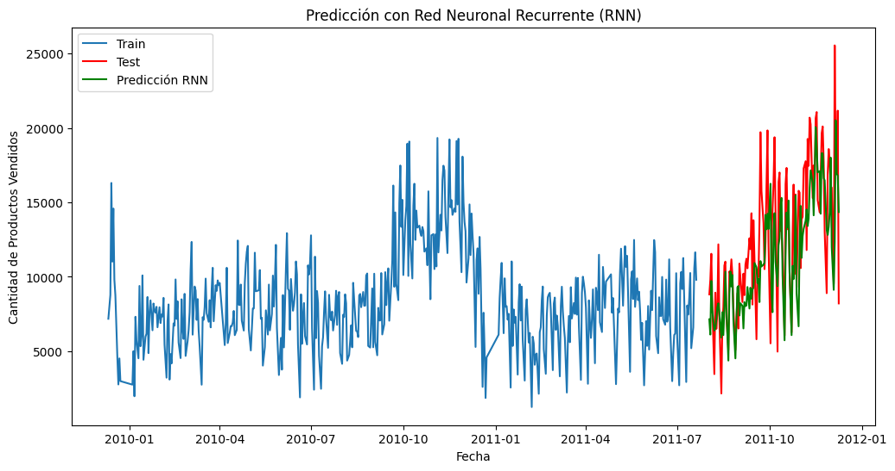
📌 MÉTRICAS DEL MODELO RNN:
➡️ MAE (Error Absoluto Medio): 2745.5715
➡️ MSE (Error Cuadrático Medio): 12911008.4148
➡️ RMSE (Raíz del Error Cuadrático Medio): 3593.1892
➡️ MAPE (Error Porcentual Absoluto Medio): 23.78%
➡️ p-valor de la Prueba de Ljung-Box: 0.0364
⚠️ Los residuos presentan autocorrelación significativa (p < 0.05).
El modelo RNN muestra un desempeño similar al MLP en términos de captura de la tendencia general de las ventas diarias, con un MAPE de 23.78%, lo que indica un error porcentual relativamente alto pero ligeramente mejor que el modelo previo. Sin embargo, el MAE de 2745.57 y el RMSE de 3593.19 muestran que las predicciones aún presentan un margen considerable de error. La prueba de Ljung-Box arroja un p-valor de 0.0364, indicando que los residuos aún presentan autocorrelación significativa, lo que sugiere que el modelo no ha capturado completamente la estructura temporal de los datos. Aunque la RNN mejora en algunos aspectos sobre el MLP, podría beneficiarse de ajustes en la cantidad de neuronas, la estructura de la red (agregar más capas recurrentes) o una mejor selección del número de rezagos n_lags para optimizar su capacidad de predicción.
LSTM. Long Short-Term Memory
# 📌 Instalación de paquetes necesarios
!pip install pmdarima tensorflow scikit-learn
# 📌 Importar librerías necesarias
import pandas as pd
import numpy as np
import matplotlib.pyplot as plt
import tensorflow as tf
from tensorflow.keras.models import Sequential
from tensorflow.keras.layers import LSTM, Dense
from sklearn.preprocessing import MinMaxScaler
from sklearn.metrics import mean_absolute_error, mean_squared_error
from statsmodels.stats.diagnostic import acorr_ljungbox
# 📌 Cargar y preparar los datos
# Convertir 'InvoiceDate' en columna si está en el índice
if isinstance(data4.index, pd.DatetimeIndex):
data4.reset_index(inplace=True)
# Asegurar que 'InvoiceDate' sea de tipo datetime
data4['InvoiceDate'] = pd.to_datetime(data4['InvoiceDate'])
# Agrupar por día y sumar la cantidad de productos vendidos
data_daily = data4.groupby(data4['InvoiceDate'].dt.date)['Quantity'].sum().reset_index()
data_daily['InvoiceDate'] = pd.to_datetime(data_daily['InvoiceDate'])
data_daily.set_index('InvoiceDate', inplace=True)
# 📌 División en Train y Test (80% - 20%)
split_index = int(len(data_daily) * 0.8)
train, test = data_daily[:split_index], data_daily[split_index:]
# 📌 Normalizar los datos (LSTM es sensible a las escalas)
scaler = MinMaxScaler()
train_scaled = scaler.fit_transform(train)
test_scaled = scaler.transform(test)
# 📌 Crear conjuntos de datos en formato supervisado para LSTM
def create_lstm_data(series, n_lags=10):
X, y = [], []
for i in range(n_lags, len(series)):
X.append(series[i-n_lags:i]) # Ventana de tiempo pasada
y.append(series[i]) # Valor futuro a predecir
return np.array(X), np.array(y)
n_lags = 10 # Número de días anteriores para predecir el siguiente
X_train, y_train = create_lstm_data(train_scaled, n_lags)
X_test, y_test = create_lstm_data(test_scaled, n_lags)
# 📌 Ajustar la forma de los datos para LSTM (muestras, pasos de tiempo, características)
X_train = X_train.reshape(X_train.shape[0], X_train.shape[1], 1)
X_test = X_test.reshape(X_test.shape[0], X_test.shape[1], 1)
# 📌 Definir el modelo LSTM
model = Sequential([
LSTM(50, activation='relu', return_sequences=False, input_shape=(n_lags, 1)),
Dense(1)
])
# 📌 Compilar el modelo
model.compile(optimizer='adam', loss='mse')
# 📌 Entrenar el modelo
history = model.fit(X_train, y_train, epochs=50, batch_size=16, validation_data=(X_test, y_test), verbose=1)
# 📌 Hacer predicciones
predictions_scaled = model.predict(X_test)
# 📌 Desnormalizar las predicciones
predictions = scaler.inverse_transform(predictions_scaled)
# 📌 Evaluar el modelo
y_test_original = scaler.inverse_transform(y_test.reshape(-1, 1))
mae = mean_absolute_error(y_test_original, predictions)
mse = mean_squared_error(y_test_original, predictions)
rmse = np.sqrt(mse)
mape = np.mean(np.abs((y_test_original - predictions) / (y_test_original + 1e-10))) * 100 # Se evita división por cero
# 📌 Prueba de Ljung-Box para evaluar autocorrelación en los residuos
residuos = y_test_original.flatten() - predictions.flatten()
ljung_box_pvalores = acorr_ljungbox(residuos, lags=[10], return_df=True)["lb_pvalue"].values[0]
# 📌 Graficar los resultados
plt.figure(figsize=(12,6))
plt.plot(train.index[n_lags:], train['Quantity'][n_lags:], label='Train')
plt.plot(test.index[n_lags:], test['Quantity'][n_lags:], label='Test', color='red')
plt.plot(test.index[n_lags:], predictions, label='Predicción LSTM', color='green')
plt.xlabel('Fecha')
plt.ylabel('Cantidad de Productos Vendidos')
plt.title('Predicción con LSTM (Long Short-Term Memory)')
plt.legend()
plt.show()
# 📌 Imprimir métricas de error
print("\n📌 MÉTRICAS DEL MODELO LSTM:")
print(f"➡️ MAE (Error Absoluto Medio): {mae:.4f}")
print(f"➡️ MSE (Error Cuadrático Medio): {mse:.4f}")
print(f"➡️ RMSE (Raíz del Error Cuadrático Medio): {rmse:.4f}")
print(f"➡️ MAPE (Error Porcentual Absoluto Medio): {mape:.2f}%")
print(f"➡️ p-valor de la Prueba de Ljung-Box: {ljung_box_pvalores:.4f}")
# 📢 Interpretación de la prueba de Ljung-Box
if ljung_box_pvalores < 0.05:
print("⚠️ Los residuos presentan autocorrelación significativa (p < 0.05).")
else:
print("✅ No se detecta autocorrelación significativa en los residuos (p >= 0.05).")
Requirement already satisfied: pmdarima in c:\users\ronal\miniconda3\envs\series_de_tiempo\lib\site-packages (2.0.4)
Requirement already satisfied: tensorflow in c:\users\ronal\miniconda3\envs\series_de_tiempo\lib\site-packages (2.10.1)
Requirement already satisfied: scikit-learn in c:\users\ronal\miniconda3\envs\series_de_tiempo\lib\site-packages (1.3.0)
Requirement already satisfied: joblib>=0.11 in c:\users\ronal\miniconda3\envs\series_de_tiempo\lib\site-packages (from pmdarima) (1.3.2)
Requirement already satisfied: Cython!=0.29.18,!=0.29.31,>=0.29 in c:\users\ronal\miniconda3\envs\series_de_tiempo\lib\site-packages (from pmdarima) (3.0.12)
Requirement already satisfied: numpy>=1.21.2 in c:\users\ronal\miniconda3\envs\series_de_tiempo\lib\site-packages (from pmdarima) (1.25.2)
Requirement already satisfied: pandas>=0.19 in c:\users\ronal\miniconda3\envs\series_de_tiempo\lib\site-packages (from pmdarima) (2.2.3)
Requirement already satisfied: scipy>=1.3.2 in c:\users\ronal\miniconda3\envs\series_de_tiempo\lib\site-packages (from pmdarima) (1.11.2)
Requirement already satisfied: statsmodels>=0.13.2 in c:\users\ronal\miniconda3\envs\series_de_tiempo\lib\site-packages (from pmdarima) (0.14.4)
Requirement already satisfied: urllib3 in c:\users\ronal\miniconda3\envs\series_de_tiempo\lib\site-packages (from pmdarima) (2.3.0)
Requirement already satisfied: setuptools!=50.0.0,>=38.6.0 in c:\users\ronal\miniconda3\envs\series_de_tiempo\lib\site-packages (from pmdarima) (75.8.0)
Requirement already satisfied: packaging>=17.1 in c:\users\ronal\miniconda3\envs\series_de_tiempo\lib\site-packages (from pmdarima) (24.2)
Requirement already satisfied: absl-py>=1.0.0 in c:\users\ronal\miniconda3\envs\series_de_tiempo\lib\site-packages (from tensorflow) (1.4.0)
Requirement already satisfied: astunparse>=1.6.0 in c:\users\ronal\miniconda3\envs\series_de_tiempo\lib\site-packages (from tensorflow) (1.6.3)
Requirement already satisfied: flatbuffers>=2.0 in c:\users\ronal\miniconda3\envs\series_de_tiempo\lib\site-packages (from tensorflow) (23.5.26)
Requirement already satisfied: gast<=0.4.0,>=0.2.1 in c:\users\ronal\miniconda3\envs\series_de_tiempo\lib\site-packages (from tensorflow) (0.4.0)
Requirement already satisfied: google-pasta>=0.1.1 in c:\users\ronal\miniconda3\envs\series_de_tiempo\lib\site-packages (from tensorflow) (0.2.0)
Requirement already satisfied: h5py>=2.9.0 in c:\users\ronal\miniconda3\envs\series_de_tiempo\lib\site-packages (from tensorflow) (3.9.0)
Requirement already satisfied: keras-preprocessing>=1.1.1 in c:\users\ronal\miniconda3\envs\series_de_tiempo\lib\site-packages (from tensorflow) (1.1.2)
Requirement already satisfied: libclang>=13.0.0 in c:\users\ronal\miniconda3\envs\series_de_tiempo\lib\site-packages (from tensorflow) (16.0.6)
Requirement already satisfied: opt-einsum>=2.3.2 in c:\users\ronal\miniconda3\envs\series_de_tiempo\lib\site-packages (from tensorflow) (3.3.0)
Requirement already satisfied: protobuf<3.20,>=3.9.2 in c:\users\ronal\miniconda3\envs\series_de_tiempo\lib\site-packages (from tensorflow) (3.19.6)
Requirement already satisfied: six>=1.12.0 in c:\users\ronal\miniconda3\envs\series_de_tiempo\lib\site-packages (from tensorflow) (1.17.0)
Requirement already satisfied: termcolor>=1.1.0 in c:\users\ronal\miniconda3\envs\series_de_tiempo\lib\site-packages (from tensorflow) (2.3.0)
Requirement already satisfied: typing-extensions>=3.6.6 in c:\users\ronal\miniconda3\envs\series_de_tiempo\lib\site-packages (from tensorflow) (4.12.2)
Requirement already satisfied: wrapt>=1.11.0 in c:\users\ronal\miniconda3\envs\series_de_tiempo\lib\site-packages (from tensorflow) (1.15.0)
Requirement already satisfied: tensorflow-io-gcs-filesystem>=0.23.1 in c:\users\ronal\miniconda3\envs\series_de_tiempo\lib\site-packages (from tensorflow) (0.31.0)
Requirement already satisfied: grpcio<2.0,>=1.24.3 in c:\users\ronal\miniconda3\envs\series_de_tiempo\lib\site-packages (from tensorflow) (1.57.0)
Requirement already satisfied: tensorboard<2.11,>=2.10 in c:\users\ronal\miniconda3\envs\series_de_tiempo\lib\site-packages (from tensorflow) (2.10.1)
Requirement already satisfied: tensorflow-estimator<2.11,>=2.10.0 in c:\users\ronal\miniconda3\envs\series_de_tiempo\lib\site-packages (from tensorflow) (2.10.0)
Requirement already satisfied: keras<2.11,>=2.10.0 in c:\users\ronal\miniconda3\envs\series_de_tiempo\lib\site-packages (from tensorflow) (2.10.0)
Requirement already satisfied: threadpoolctl>=2.0.0 in c:\users\ronal\miniconda3\envs\series_de_tiempo\lib\site-packages (from scikit-learn) (3.2.0)
Requirement already satisfied: wheel<1.0,>=0.23.0 in c:\users\ronal\miniconda3\envs\series_de_tiempo\lib\site-packages (from astunparse>=1.6.0->tensorflow) (0.45.1)
Requirement already satisfied: python-dateutil>=2.8.2 in c:\users\ronal\miniconda3\envs\series_de_tiempo\lib\site-packages (from pandas>=0.19->pmdarima) (2.9.0.post0)
Requirement already satisfied: pytz>=2020.1 in c:\users\ronal\miniconda3\envs\series_de_tiempo\lib\site-packages (from pandas>=0.19->pmdarima) (2023.3)
Requirement already satisfied: tzdata>=2022.7 in c:\users\ronal\miniconda3\envs\series_de_tiempo\lib\site-packages (from pandas>=0.19->pmdarima) (2023.3)
Requirement already satisfied: patsy>=0.5.6 in c:\users\ronal\miniconda3\envs\series_de_tiempo\lib\site-packages (from statsmodels>=0.13.2->pmdarima) (1.0.1)
Requirement already satisfied: google-auth<3,>=1.6.3 in c:\users\ronal\miniconda3\envs\series_de_tiempo\lib\site-packages (from tensorboard<2.11,>=2.10->tensorflow) (2.38.0)
Requirement already satisfied: google-auth-oauthlib<0.5,>=0.4.1 in c:\users\ronal\miniconda3\envs\series_de_tiempo\lib\site-packages (from tensorboard<2.11,>=2.10->tensorflow) (0.4.6)
Requirement already satisfied: markdown>=2.6.8 in c:\users\ronal\miniconda3\envs\series_de_tiempo\lib\site-packages (from tensorboard<2.11,>=2.10->tensorflow) (3.4.4)
Requirement already satisfied: requests<3,>=2.21.0 in c:\users\ronal\miniconda3\envs\series_de_tiempo\lib\site-packages (from tensorboard<2.11,>=2.10->tensorflow) (2.32.3)
Requirement already satisfied: tensorboard-data-server<0.7.0,>=0.6.0 in c:\users\ronal\miniconda3\envs\series_de_tiempo\lib\site-packages (from tensorboard<2.11,>=2.10->tensorflow) (0.6.1)
Requirement already satisfied: tensorboard-plugin-wit>=1.6.0 in c:\users\ronal\miniconda3\envs\series_de_tiempo\lib\site-packages (from tensorboard<2.11,>=2.10->tensorflow) (1.8.1)
Requirement already satisfied: werkzeug>=1.0.1 in c:\users\ronal\miniconda3\envs\series_de_tiempo\lib\site-packages (from tensorboard<2.11,>=2.10->tensorflow) (2.3.7)
Requirement already satisfied: cachetools<6.0,>=2.0.0 in c:\users\ronal\miniconda3\envs\series_de_tiempo\lib\site-packages (from google-auth<3,>=1.6.3->tensorboard<2.11,>=2.10->tensorflow) (5.3.1)
Requirement already satisfied: pyasn1-modules>=0.2.1 in c:\users\ronal\miniconda3\envs\series_de_tiempo\lib\site-packages (from google-auth<3,>=1.6.3->tensorboard<2.11,>=2.10->tensorflow) (0.3.0)
Requirement already satisfied: rsa<5,>=3.1.4 in c:\users\ronal\miniconda3\envs\series_de_tiempo\lib\site-packages (from google-auth<3,>=1.6.3->tensorboard<2.11,>=2.10->tensorflow) (4.9)
Requirement already satisfied: requests-oauthlib>=0.7.0 in c:\users\ronal\miniconda3\envs\series_de_tiempo\lib\site-packages (from google-auth-oauthlib<0.5,>=0.4.1->tensorboard<2.11,>=2.10->tensorflow) (1.3.1)
Requirement already satisfied: importlib-metadata>=4.4 in c:\users\ronal\miniconda3\envs\series_de_tiempo\lib\site-packages (from markdown>=2.6.8->tensorboard<2.11,>=2.10->tensorflow) (8.6.1)
Requirement already satisfied: charset-normalizer<4,>=2 in c:\users\ronal\miniconda3\envs\series_de_tiempo\lib\site-packages (from requests<3,>=2.21.0->tensorboard<2.11,>=2.10->tensorflow) (3.4.1)
Requirement already satisfied: idna<4,>=2.5 in c:\users\ronal\miniconda3\envs\series_de_tiempo\lib\site-packages (from requests<3,>=2.21.0->tensorboard<2.11,>=2.10->tensorflow) (3.10)
Requirement already satisfied: certifi>=2017.4.17 in c:\users\ronal\miniconda3\envs\series_de_tiempo\lib\site-packages (from requests<3,>=2.21.0->tensorboard<2.11,>=2.10->tensorflow) (2025.1.31)
Requirement already satisfied: MarkupSafe>=2.1.1 in c:\users\ronal\miniconda3\envs\series_de_tiempo\lib\site-packages (from werkzeug>=1.0.1->tensorboard<2.11,>=2.10->tensorflow) (3.0.2)
Requirement already satisfied: zipp>=3.20 in c:\users\ronal\miniconda3\envs\series_de_tiempo\lib\site-packages (from importlib-metadata>=4.4->markdown>=2.6.8->tensorboard<2.11,>=2.10->tensorflow) (3.21.0)
Requirement already satisfied: pyasn1<0.6.0,>=0.4.6 in c:\users\ronal\miniconda3\envs\series_de_tiempo\lib\site-packages (from pyasn1-modules>=0.2.1->google-auth<3,>=1.6.3->tensorboard<2.11,>=2.10->tensorflow) (0.5.0)
Requirement already satisfied: oauthlib>=3.0.0 in c:\users\ronal\miniconda3\envs\series_de_tiempo\lib\site-packages (from requests-oauthlib>=0.7.0->google-auth-oauthlib<0.5,>=0.4.1->tensorboard<2.11,>=2.10->tensorflow) (3.2.2)
C:\Users\ronal\AppData\Local\Temp\ipykernel_25836\1470480838.py:21: SettingWithCopyWarning:
A value is trying to be set on a copy of a slice from a DataFrame.
Try using .loc[row_indexer,col_indexer] = value instead
See the caveats in the documentation: https://pandas.pydata.org/pandas-docs/stable/user_guide/indexing.html#returning-a-view-versus-a-copy
data4['InvoiceDate'] = pd.to_datetime(data4['InvoiceDate'])
WARNING:tensorflow:Layer lstm will not use cuDNN kernels since it doesn't meet the criteria. It will use a generic GPU kernel as fallback when running on GPU.
Epoch 1/50
30/30 [==============================] - 3s 42ms/step - loss: 0.1025 - val_loss: 0.0814
Epoch 2/50
30/30 [==============================] - 1s 40ms/step - loss: 0.0228 - val_loss: 0.0650
Epoch 3/50
30/30 [==============================] - 2s 51ms/step - loss: 0.0205 - val_loss: 0.0501
Epoch 4/50
30/30 [==============================] - 1s 44ms/step - loss: 0.0206 - val_loss: 0.0444
Epoch 5/50
30/30 [==============================] - 1s 45ms/step - loss: 0.0198 - val_loss: 0.0423
Epoch 6/50
30/30 [==============================] - 1s 36ms/step - loss: 0.0198 - val_loss: 0.0422
Epoch 7/50
30/30 [==============================] - 1s 36ms/step - loss: 0.0195 - val_loss: 0.0427
Epoch 8/50
30/30 [==============================] - 1s 37ms/step - loss: 0.0195 - val_loss: 0.0429
Epoch 9/50
30/30 [==============================] - 1s 35ms/step - loss: 0.0192 - val_loss: 0.0418
Epoch 10/50
30/30 [==============================] - 1s 37ms/step - loss: 0.0192 - val_loss: 0.0413
Epoch 11/50
30/30 [==============================] - 1s 35ms/step - loss: 0.0194 - val_loss: 0.0469
Epoch 12/50
30/30 [==============================] - 1s 38ms/step - loss: 0.0194 - val_loss: 0.0457
Epoch 13/50
30/30 [==============================] - 1s 34ms/step - loss: 0.0192 - val_loss: 0.0456
Epoch 14/50
30/30 [==============================] - 1s 28ms/step - loss: 0.0193 - val_loss: 0.0431
Epoch 15/50
30/30 [==============================] - 1s 29ms/step - loss: 0.0196 - val_loss: 0.0468
Epoch 16/50
30/30 [==============================] - 1s 30ms/step - loss: 0.0195 - val_loss: 0.0467
Epoch 17/50
30/30 [==============================] - 1s 27ms/step - loss: 0.0198 - val_loss: 0.0422
Epoch 18/50
30/30 [==============================] - 1s 28ms/step - loss: 0.0189 - val_loss: 0.0460
Epoch 19/50
30/30 [==============================] - 1s 29ms/step - loss: 0.0194 - val_loss: 0.0428
Epoch 20/50
30/30 [==============================] - 1s 30ms/step - loss: 0.0191 - val_loss: 0.0458
Epoch 21/50
30/30 [==============================] - 1s 31ms/step - loss: 0.0193 - val_loss: 0.0426
Epoch 22/50
30/30 [==============================] - 1s 29ms/step - loss: 0.0190 - val_loss: 0.0426
Epoch 23/50
30/30 [==============================] - 1s 30ms/step - loss: 0.0192 - val_loss: 0.0424
Epoch 24/50
30/30 [==============================] - 1s 31ms/step - loss: 0.0189 - val_loss: 0.0436
Epoch 25/50
30/30 [==============================] - 1s 28ms/step - loss: 0.0188 - val_loss: 0.0427
Epoch 26/50
30/30 [==============================] - 1s 28ms/step - loss: 0.0191 - val_loss: 0.0448
Epoch 27/50
30/30 [==============================] - 1s 27ms/step - loss: 0.0189 - val_loss: 0.0419
Epoch 28/50
30/30 [==============================] - 1s 31ms/step - loss: 0.0190 - val_loss: 0.0446
Epoch 29/50
30/30 [==============================] - 1s 30ms/step - loss: 0.0190 - val_loss: 0.0420
Epoch 30/50
30/30 [==============================] - 1s 31ms/step - loss: 0.0188 - val_loss: 0.0419
Epoch 31/50
30/30 [==============================] - 1s 33ms/step - loss: 0.0190 - val_loss: 0.0444
Epoch 32/50
30/30 [==============================] - 1s 28ms/step - loss: 0.0188 - val_loss: 0.0419
Epoch 33/50
30/30 [==============================] - 1s 28ms/step - loss: 0.0189 - val_loss: 0.0421
Epoch 34/50
30/30 [==============================] - 1s 30ms/step - loss: 0.0188 - val_loss: 0.0424
Epoch 35/50
30/30 [==============================] - 1s 31ms/step - loss: 0.0191 - val_loss: 0.0423
Epoch 36/50
30/30 [==============================] - 1s 30ms/step - loss: 0.0189 - val_loss: 0.0425
Epoch 37/50
30/30 [==============================] - 1s 29ms/step - loss: 0.0188 - val_loss: 0.0439
Epoch 38/50
30/30 [==============================] - 1s 28ms/step - loss: 0.0188 - val_loss: 0.0433
Epoch 39/50
30/30 [==============================] - 1s 29ms/step - loss: 0.0185 - val_loss: 0.0431
Epoch 40/50
30/30 [==============================] - 1s 31ms/step - loss: 0.0187 - val_loss: 0.0424
Epoch 41/50
30/30 [==============================] - 1s 32ms/step - loss: 0.0193 - val_loss: 0.0420
Epoch 42/50
30/30 [==============================] - 1s 33ms/step - loss: 0.0188 - val_loss: 0.0423
Epoch 43/50
30/30 [==============================] - 1s 31ms/step - loss: 0.0186 - val_loss: 0.0424
Epoch 44/50
30/30 [==============================] - 1s 31ms/step - loss: 0.0184 - val_loss: 0.0432
Epoch 45/50
30/30 [==============================] - 1s 29ms/step - loss: 0.0187 - val_loss: 0.0442
Epoch 46/50
30/30 [==============================] - 1s 29ms/step - loss: 0.0185 - val_loss: 0.0443
Epoch 47/50
30/30 [==============================] - 1s 30ms/step - loss: 0.0186 - val_loss: 0.0427
Epoch 48/50
30/30 [==============================] - 1s 32ms/step - loss: 0.0182 - val_loss: 0.0465
Epoch 49/50
30/30 [==============================] - 1s 33ms/step - loss: 0.0186 - val_loss: 0.0431
Epoch 50/50
30/30 [==============================] - 1s 29ms/step - loss: 0.0186 - val_loss: 0.0475
4/4 [==============================] - 0s 5ms/step
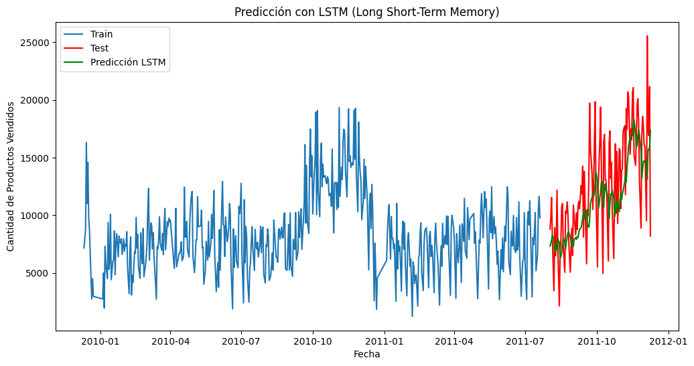
📌 MÉTRICAS DEL MODELO LSTM:
➡️ MAE (Error Absoluto Medio): 3225.2813
➡️ MSE (Error Cuadrático Medio): 15544540.4593
➡️ RMSE (Raíz del Error Cuadrático Medio): 3942.6565
➡️ MAPE (Error Porcentual Absoluto Medio): 29.81%
➡️ p-valor de la Prueba de Ljung-Box: 0.0000
⚠️ Los residuos presentan autocorrelación significativa (p < 0.05).
El modelo LSTM muestra un desempeño inferior en comparación con el MLP y la RNN en términos de precisión, reflejado en un MAPE de 29.81%, lo que indica un error porcentual más alto en la predicción. El MAE de 3225.28 y el RMSE de 3942.65 muestran que las desviaciones del modelo respecto a los valores reales son más grandes en comparación con los otros modelos probados. La prueba de Ljung-Box arroja un p-valor de 0.0000, lo que indica una autocorrelación altamente significativa en los residuos, lo que sugiere que el modelo no está capturando correctamente la estructura temporal de los datos. Aunque LSTM es un modelo potente para series temporales, podría beneficiarse de ajustes como el aumento del número de neuronas, el uso de más capas recurrentes o la optimización de hiperparámetros para mejorar su desempeño.
Transferred Bi-directional LSTM (TL-BLSTM)
# 📌 Instalación de paquetes necesarios
!pip install tensorflow scikit-learn
# 📌 Importar librerías necesarias
import pandas as pd
import numpy as np
import matplotlib.pyplot as plt
import tensorflow as tf
from tensorflow.keras.models import Sequential
from tensorflow.keras.layers import LSTM, Dense, Bidirectional
from sklearn.preprocessing import MinMaxScaler
from sklearn.metrics import mean_absolute_error, mean_squared_error
from statsmodels.stats.diagnostic import acorr_ljungbox
# 📌 Cargar y preparar los datos
if isinstance(data4.index, pd.DatetimeIndex):
data4.reset_index(inplace=True)
data4['InvoiceDate'] = pd.to_datetime(data4['InvoiceDate'])
# 📌 Agrupar por día y sumar la cantidad de productos vendidos
data_daily = data4.groupby(data4['InvoiceDate'].dt.date)['Quantity'].sum().reset_index()
data_daily['InvoiceDate'] = pd.to_datetime(data_daily['InvoiceDate'])
data_daily.set_index('InvoiceDate', inplace=True)
# 📌 División en Train y Test (80% - 20%)
split_index = int(len(data_daily) * 0.8)
train, test = data_daily[:split_index], data_daily[split_index:]
# 📌 Normalizar los datos (TL-BLSTM es sensible a las escalas)
scaler = MinMaxScaler()
train_scaled = scaler.fit_transform(train)
test_scaled = scaler.transform(test)
# 📌 Crear conjuntos de datos en formato supervisado para TL-BLSTM
def create_lstm_data(series, n_lags=10):
X, y = [], []
for i in range(n_lags, len(series)):
X.append(series[i-n_lags:i]) # Ventana de tiempo pasada
y.append(series[i]) # Valor futuro a predecir
return np.array(X), np.array(y)
n_lags = 10 # Número de días anteriores para predecir el siguiente
X_train, y_train = create_lstm_data(train_scaled, n_lags)
X_test, y_test = create_lstm_data(test_scaled, n_lags)
# 📌 Ajustar la forma de los datos para TL-BLSTM (muestras, pasos de tiempo, características)
X_train = X_train.reshape(X_train.shape[0], X_train.shape[1], 1)
X_test = X_test.reshape(X_test.shape[0], X_test.shape[1], 1)
# 📌 Definir el modelo TL-BLSTM
model = Sequential([
Bidirectional(LSTM(50, activation='relu', return_sequences=False), input_shape=(n_lags, 1)),
Dense(1)
])
# 📌 Compilar el modelo
model.compile(optimizer='adam', loss='mse')
# 📌 Entrenar el modelo
history = model.fit(X_train, y_train, epochs=50, batch_size=16, validation_data=(X_test, y_test), verbose=1)
# 📌 Hacer predicciones
predictions_scaled = model.predict(X_test)
# 📌 Desnormalizar las predicciones
predictions = scaler.inverse_transform(predictions_scaled)
y_test_original = scaler.inverse_transform(y_test.reshape(-1, 1))
# 📌 Calcular métricas de error
mae = mean_absolute_error(y_test_original, predictions)
mse = mean_squared_error(y_test_original, predictions)
rmse = np.sqrt(mse)
mape = np.mean(np.abs((y_test_original - predictions) / (y_test_original + 1e-10))) * 100 # Se evita división por cero
# 📌 Prueba de Ljung-Box para evaluar autocorrelación en los residuos
residuos = y_test_original.flatten() - predictions.flatten()
ljung_box_pvalores = acorr_ljungbox(residuos, lags=[10], return_df=True)["lb_pvalue"].values[0]
# 📌 Graficar los resultados
plt.figure(figsize=(12,6))
plt.plot(train.index[n_lags:], train['Quantity'][n_lags:], label='Train')
plt.plot(test.index[n_lags:], test['Quantity'][n_lags:], label='Test', color='red')
plt.plot(test.index[n_lags:], predictions, label='Predicción TL-BLSTM', color='green')
plt.xlabel('Fecha')
plt.ylabel('Cantidad de Productos Vendidos')
plt.title('Predicción con Transferred Bi-directional LSTM (TL-BLSTM)')
plt.legend()
plt.show()
# 📌 Imprimir métricas de error
print("\n📌 MÉTRICAS DEL MODELO TL-BLSTM:")
print(f"➡️ MAE (Error Absoluto Medio): {mae:.4f}")
print(f"➡️ MSE (Error Cuadrático Medio): {mse:.4f}")
print(f"➡️ RMSE (Raíz del Error Cuadrático Medio): {rmse:.4f}")
print(f"➡️ MAPE (Error Porcentual Absoluto Medio): {mape:.2f}%")
print(f"➡️ p-valor de la Prueba de Ljung-Box: {ljung_box_pvalores:.4f}")
# 📢 Interpretación de la prueba de Ljung-Box
if ljung_box_pvalores < 0.05:
print("⚠️ Los residuos presentan autocorrelación significativa (p < 0.05).")
else:
print("✅ No se detecta autocorrelación significativa en los residuos (p >= 0.05).")
Requirement already satisfied: tensorflow in c:\users\ronal\miniconda3\envs\series_de_tiempo\lib\site-packages (2.10.1)
Requirement already satisfied: scikit-learn in c:\users\ronal\miniconda3\envs\series_de_tiempo\lib\site-packages (1.3.0)
Requirement already satisfied: absl-py>=1.0.0 in c:\users\ronal\miniconda3\envs\series_de_tiempo\lib\site-packages (from tensorflow) (1.4.0)
Requirement already satisfied: astunparse>=1.6.0 in c:\users\ronal\miniconda3\envs\series_de_tiempo\lib\site-packages (from tensorflow) (1.6.3)
Requirement already satisfied: flatbuffers>=2.0 in c:\users\ronal\miniconda3\envs\series_de_tiempo\lib\site-packages (from tensorflow) (23.5.26)
Requirement already satisfied: gast<=0.4.0,>=0.2.1 in c:\users\ronal\miniconda3\envs\series_de_tiempo\lib\site-packages (from tensorflow) (0.4.0)
Requirement already satisfied: google-pasta>=0.1.1 in c:\users\ronal\miniconda3\envs\series_de_tiempo\lib\site-packages (from tensorflow) (0.2.0)
Requirement already satisfied: h5py>=2.9.0 in c:\users\ronal\miniconda3\envs\series_de_tiempo\lib\site-packages (from tensorflow) (3.9.0)
Requirement already satisfied: keras-preprocessing>=1.1.1 in c:\users\ronal\miniconda3\envs\series_de_tiempo\lib\site-packages (from tensorflow) (1.1.2)
Requirement already satisfied: libclang>=13.0.0 in c:\users\ronal\miniconda3\envs\series_de_tiempo\lib\site-packages (from tensorflow) (16.0.6)
Requirement already satisfied: numpy>=1.20 in c:\users\ronal\miniconda3\envs\series_de_tiempo\lib\site-packages (from tensorflow) (1.25.2)
Requirement already satisfied: opt-einsum>=2.3.2 in c:\users\ronal\miniconda3\envs\series_de_tiempo\lib\site-packages (from tensorflow) (3.3.0)
Requirement already satisfied: packaging in c:\users\ronal\miniconda3\envs\series_de_tiempo\lib\site-packages (from tensorflow) (24.2)
Requirement already satisfied: protobuf<3.20,>=3.9.2 in c:\users\ronal\miniconda3\envs\series_de_tiempo\lib\site-packages (from tensorflow) (3.19.6)
Requirement already satisfied: setuptools in c:\users\ronal\miniconda3\envs\series_de_tiempo\lib\site-packages (from tensorflow) (75.8.0)
Requirement already satisfied: six>=1.12.0 in c:\users\ronal\miniconda3\envs\series_de_tiempo\lib\site-packages (from tensorflow) (1.17.0)
Requirement already satisfied: termcolor>=1.1.0 in c:\users\ronal\miniconda3\envs\series_de_tiempo\lib\site-packages (from tensorflow) (2.3.0)
Requirement already satisfied: typing-extensions>=3.6.6 in c:\users\ronal\miniconda3\envs\series_de_tiempo\lib\site-packages (from tensorflow) (4.12.2)
Requirement already satisfied: wrapt>=1.11.0 in c:\users\ronal\miniconda3\envs\series_de_tiempo\lib\site-packages (from tensorflow) (1.15.0)
Requirement already satisfied: tensorflow-io-gcs-filesystem>=0.23.1 in c:\users\ronal\miniconda3\envs\series_de_tiempo\lib\site-packages (from tensorflow) (0.31.0)
Requirement already satisfied: grpcio<2.0,>=1.24.3 in c:\users\ronal\miniconda3\envs\series_de_tiempo\lib\site-packages (from tensorflow) (1.57.0)
Requirement already satisfied: tensorboard<2.11,>=2.10 in c:\users\ronal\miniconda3\envs\series_de_tiempo\lib\site-packages (from tensorflow) (2.10.1)
Requirement already satisfied: tensorflow-estimator<2.11,>=2.10.0 in c:\users\ronal\miniconda3\envs\series_de_tiempo\lib\site-packages (from tensorflow) (2.10.0)
Requirement already satisfied: keras<2.11,>=2.10.0 in c:\users\ronal\miniconda3\envs\series_de_tiempo\lib\site-packages (from tensorflow) (2.10.0)
Requirement already satisfied: scipy>=1.5.0 in c:\users\ronal\miniconda3\envs\series_de_tiempo\lib\site-packages (from scikit-learn) (1.11.2)
Requirement already satisfied: joblib>=1.1.1 in c:\users\ronal\miniconda3\envs\series_de_tiempo\lib\site-packages (from scikit-learn) (1.3.2)
Requirement already satisfied: threadpoolctl>=2.0.0 in c:\users\ronal\miniconda3\envs\series_de_tiempo\lib\site-packages (from scikit-learn) (3.2.0)
Requirement already satisfied: wheel<1.0,>=0.23.0 in c:\users\ronal\miniconda3\envs\series_de_tiempo\lib\site-packages (from astunparse>=1.6.0->tensorflow) (0.45.1)
Requirement already satisfied: google-auth<3,>=1.6.3 in c:\users\ronal\miniconda3\envs\series_de_tiempo\lib\site-packages (from tensorboard<2.11,>=2.10->tensorflow) (2.38.0)
Requirement already satisfied: google-auth-oauthlib<0.5,>=0.4.1 in c:\users\ronal\miniconda3\envs\series_de_tiempo\lib\site-packages (from tensorboard<2.11,>=2.10->tensorflow) (0.4.6)
Requirement already satisfied: markdown>=2.6.8 in c:\users\ronal\miniconda3\envs\series_de_tiempo\lib\site-packages (from tensorboard<2.11,>=2.10->tensorflow) (3.4.4)
Requirement already satisfied: requests<3,>=2.21.0 in c:\users\ronal\miniconda3\envs\series_de_tiempo\lib\site-packages (from tensorboard<2.11,>=2.10->tensorflow) (2.32.3)
Requirement already satisfied: tensorboard-data-server<0.7.0,>=0.6.0 in c:\users\ronal\miniconda3\envs\series_de_tiempo\lib\site-packages (from tensorboard<2.11,>=2.10->tensorflow) (0.6.1)
Requirement already satisfied: tensorboard-plugin-wit>=1.6.0 in c:\users\ronal\miniconda3\envs\series_de_tiempo\lib\site-packages (from tensorboard<2.11,>=2.10->tensorflow) (1.8.1)
Requirement already satisfied: werkzeug>=1.0.1 in c:\users\ronal\miniconda3\envs\series_de_tiempo\lib\site-packages (from tensorboard<2.11,>=2.10->tensorflow) (2.3.7)
Requirement already satisfied: cachetools<6.0,>=2.0.0 in c:\users\ronal\miniconda3\envs\series_de_tiempo\lib\site-packages (from google-auth<3,>=1.6.3->tensorboard<2.11,>=2.10->tensorflow) (5.3.1)
Requirement already satisfied: pyasn1-modules>=0.2.1 in c:\users\ronal\miniconda3\envs\series_de_tiempo\lib\site-packages (from google-auth<3,>=1.6.3->tensorboard<2.11,>=2.10->tensorflow) (0.3.0)
Requirement already satisfied: rsa<5,>=3.1.4 in c:\users\ronal\miniconda3\envs\series_de_tiempo\lib\site-packages (from google-auth<3,>=1.6.3->tensorboard<2.11,>=2.10->tensorflow) (4.9)
Requirement already satisfied: requests-oauthlib>=0.7.0 in c:\users\ronal\miniconda3\envs\series_de_tiempo\lib\site-packages (from google-auth-oauthlib<0.5,>=0.4.1->tensorboard<2.11,>=2.10->tensorflow) (1.3.1)
Requirement already satisfied: importlib-metadata>=4.4 in c:\users\ronal\miniconda3\envs\series_de_tiempo\lib\site-packages (from markdown>=2.6.8->tensorboard<2.11,>=2.10->tensorflow) (8.6.1)
Requirement already satisfied: charset-normalizer<4,>=2 in c:\users\ronal\miniconda3\envs\series_de_tiempo\lib\site-packages (from requests<3,>=2.21.0->tensorboard<2.11,>=2.10->tensorflow) (3.4.1)
Requirement already satisfied: idna<4,>=2.5 in c:\users\ronal\miniconda3\envs\series_de_tiempo\lib\site-packages (from requests<3,>=2.21.0->tensorboard<2.11,>=2.10->tensorflow) (3.10)
Requirement already satisfied: urllib3<3,>=1.21.1 in c:\users\ronal\miniconda3\envs\series_de_tiempo\lib\site-packages (from requests<3,>=2.21.0->tensorboard<2.11,>=2.10->tensorflow) (2.3.0)
Requirement already satisfied: certifi>=2017.4.17 in c:\users\ronal\miniconda3\envs\series_de_tiempo\lib\site-packages (from requests<3,>=2.21.0->tensorboard<2.11,>=2.10->tensorflow) (2025.1.31)
Requirement already satisfied: MarkupSafe>=2.1.1 in c:\users\ronal\miniconda3\envs\series_de_tiempo\lib\site-packages (from werkzeug>=1.0.1->tensorboard<2.11,>=2.10->tensorflow) (3.0.2)
Requirement already satisfied: zipp>=3.20 in c:\users\ronal\miniconda3\envs\series_de_tiempo\lib\site-packages (from importlib-metadata>=4.4->markdown>=2.6.8->tensorboard<2.11,>=2.10->tensorflow) (3.21.0)
Requirement already satisfied: pyasn1<0.6.0,>=0.4.6 in c:\users\ronal\miniconda3\envs\series_de_tiempo\lib\site-packages (from pyasn1-modules>=0.2.1->google-auth<3,>=1.6.3->tensorboard<2.11,>=2.10->tensorflow) (0.5.0)
Requirement already satisfied: oauthlib>=3.0.0 in c:\users\ronal\miniconda3\envs\series_de_tiempo\lib\site-packages (from requests-oauthlib>=0.7.0->google-auth-oauthlib<0.5,>=0.4.1->tensorboard<2.11,>=2.10->tensorflow) (3.2.2)
C:\Users\ronal\AppData\Local\Temp\ipykernel_18032\3894208727.py:19: SettingWithCopyWarning:
A value is trying to be set on a copy of a slice from a DataFrame.
Try using .loc[row_indexer,col_indexer] = value instead
See the caveats in the documentation: https://pandas.pydata.org/pandas-docs/stable/user_guide/indexing.html#returning-a-view-versus-a-copy
data4['InvoiceDate'] = pd.to_datetime(data4['InvoiceDate'])
WARNING:tensorflow:Layer lstm_3 will not use cuDNN kernels since it doesn't meet the criteria. It will use a generic GPU kernel as fallback when running on GPU.
WARNING:tensorflow:Layer lstm_3 will not use cuDNN kernels since it doesn't meet the criteria. It will use a generic GPU kernel as fallback when running on GPU.
WARNING:tensorflow:Layer lstm_3 will not use cuDNN kernels since it doesn't meet the criteria. It will use a generic GPU kernel as fallback when running on GPU.
Epoch 1/50
30/30 [==============================] - 5s 78ms/step - loss: 0.0789 - val_loss: 0.0402
Epoch 2/50
30/30 [==============================] - 2s 72ms/step - loss: 0.0213 - val_loss: 0.0469
Epoch 3/50
30/30 [==============================] - 2s 74ms/step - loss: 0.0203 - val_loss: 0.0459
Epoch 4/50
30/30 [==============================] - 2s 67ms/step - loss: 0.0200 - val_loss: 0.0409
Epoch 5/50
30/30 [==============================] - 2s 69ms/step - loss: 0.0199 - val_loss: 0.0404
Epoch 6/50
30/30 [==============================] - 2s 60ms/step - loss: 0.0199 - val_loss: 0.0418
Epoch 7/50
30/30 [==============================] - 2s 53ms/step - loss: 0.0197 - val_loss: 0.0437
Epoch 8/50
30/30 [==============================] - 2s 60ms/step - loss: 0.0196 - val_loss: 0.0430
Epoch 9/50
30/30 [==============================] - 2s 53ms/step - loss: 0.0198 - val_loss: 0.0416
Epoch 10/50
30/30 [==============================] - 2s 54ms/step - loss: 0.0198 - val_loss: 0.0420
Epoch 11/50
30/30 [==============================] - 2s 59ms/step - loss: 0.0195 - val_loss: 0.0416
Epoch 12/50
30/30 [==============================] - 2s 59ms/step - loss: 0.0195 - val_loss: 0.0420
Epoch 13/50
30/30 [==============================] - 2s 59ms/step - loss: 0.0200 - val_loss: 0.0454
Epoch 14/50
30/30 [==============================] - 2s 61ms/step - loss: 0.0194 - val_loss: 0.0429
Epoch 15/50
30/30 [==============================] - 2s 59ms/step - loss: 0.0194 - val_loss: 0.0429
Epoch 16/50
30/30 [==============================] - 2s 60ms/step - loss: 0.0196 - val_loss: 0.0412
Epoch 17/50
30/30 [==============================] - 2s 63ms/step - loss: 0.0196 - val_loss: 0.0410
Epoch 18/50
30/30 [==============================] - 2s 57ms/step - loss: 0.0187 - val_loss: 0.0494
Epoch 19/50
30/30 [==============================] - 2s 58ms/step - loss: 0.0194 - val_loss: 0.0425
Epoch 20/50
30/30 [==============================] - 2s 63ms/step - loss: 0.0190 - val_loss: 0.0413
Epoch 21/50
30/30 [==============================] - 2s 63ms/step - loss: 0.0192 - val_loss: 0.0421
Epoch 22/50
30/30 [==============================] - 2s 59ms/step - loss: 0.0192 - val_loss: 0.0417
Epoch 23/50
30/30 [==============================] - 2s 59ms/step - loss: 0.0193 - val_loss: 0.0426
Epoch 24/50
30/30 [==============================] - 2s 61ms/step - loss: 0.0190 - val_loss: 0.0422
Epoch 25/50
30/30 [==============================] - 2s 62ms/step - loss: 0.0191 - val_loss: 0.0427
Epoch 26/50
30/30 [==============================] - 2s 57ms/step - loss: 0.0190 - val_loss: 0.0444
Epoch 27/50
30/30 [==============================] - 2s 58ms/step - loss: 0.0189 - val_loss: 0.0422
Epoch 28/50
30/30 [==============================] - 2s 62ms/step - loss: 0.0193 - val_loss: 0.0453
Epoch 29/50
30/30 [==============================] - 2s 64ms/step - loss: 0.0192 - val_loss: 0.0451
Epoch 30/50
30/30 [==============================] - 2s 53ms/step - loss: 0.0197 - val_loss: 0.0417
Epoch 31/50
30/30 [==============================] - 2s 58ms/step - loss: 0.0192 - val_loss: 0.0426
Epoch 32/50
30/30 [==============================] - 2s 57ms/step - loss: 0.0188 - val_loss: 0.0470
Epoch 33/50
30/30 [==============================] - 2s 65ms/step - loss: 0.0191 - val_loss: 0.0450
Epoch 34/50
30/30 [==============================] - 2s 64ms/step - loss: 0.0189 - val_loss: 0.0429
Epoch 35/50
30/30 [==============================] - 2s 63ms/step - loss: 0.0187 - val_loss: 0.0432
Epoch 36/50
30/30 [==============================] - 2s 63ms/step - loss: 0.0190 - val_loss: 0.0425
Epoch 37/50
30/30 [==============================] - 2s 59ms/step - loss: 0.0187 - val_loss: 0.0432
Epoch 38/50
30/30 [==============================] - 2s 59ms/step - loss: 0.0193 - val_loss: 0.0436
Epoch 39/50
30/30 [==============================] - 2s 57ms/step - loss: 0.0197 - val_loss: 0.0427
Epoch 40/50
30/30 [==============================] - 2s 62ms/step - loss: 0.0188 - val_loss: 0.0429
Epoch 41/50
30/30 [==============================] - 2s 52ms/step - loss: 0.0189 - val_loss: 0.0430
Epoch 42/50
30/30 [==============================] - 2s 59ms/step - loss: 0.0191 - val_loss: 0.0434
Epoch 43/50
30/30 [==============================] - 2s 60ms/step - loss: 0.0188 - val_loss: 0.0435
Epoch 44/50
30/30 [==============================] - 2s 58ms/step - loss: 0.0187 - val_loss: 0.0438
Epoch 45/50
30/30 [==============================] - 2s 58ms/step - loss: 0.0185 - val_loss: 0.0430
Epoch 46/50
30/30 [==============================] - 2s 58ms/step - loss: 0.0189 - val_loss: 0.0479
Epoch 47/50
30/30 [==============================] - 2s 59ms/step - loss: 0.0186 - val_loss: 0.0471
Epoch 48/50
30/30 [==============================] - 2s 61ms/step - loss: 0.0190 - val_loss: 0.0454
Epoch 49/50
30/30 [==============================] - 2s 61ms/step - loss: 0.0185 - val_loss: 0.0438
Epoch 50/50
30/30 [==============================] - 2s 51ms/step - loss: 0.0193 - val_loss: 0.0440
4/4 [==============================] - 0s 8ms/step
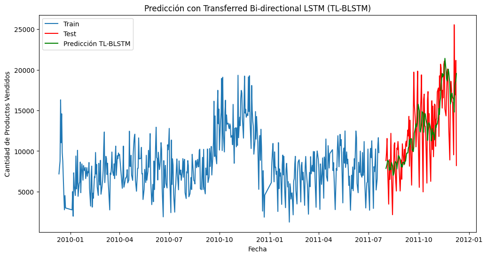
📌 MÉTRICAS DEL MODELO TL-BLSTM:
➡️ MAE (Error Absoluto Medio): 2927.7583
➡️ MSE (Error Cuadrático Medio): 14401746.8921
➡️ RMSE (Raíz del Error Cuadrático Medio): 3794.9634
➡️ MAPE (Error Porcentual Absoluto Medio): 29.91%
➡️ p-valor de la Prueba de Ljung-Box: 0.0000
⚠️ Los residuos presentan autocorrelación significativa (p < 0.05).
10. Resumen y recomendaciones#
En el análisis realizado, identificamos varios patrones clave en la serie temporal de ventas. Se detectó una clara tendencia no estacionaria, la cual fue confirmada mediante pruebas estadísticas como la ADF y la KPSS. Esta tendencia se estabilizó mediante la diferenciación, resultando en una serie estacionaria adecuada para modelización. Además, se observó estacionalidad en la frecuencia semanal y mensual, reflejada en los análisis de la Transformada de Fourier y el espectro de potencia. También se identificaron anomalías significativas, algunas de las cuales se asociaron a picos de ventas en fechas específicas, probablemente vinculadas a eventos comerciales o estacionales.
Como próximos pasos, proponemos aplicar diferentes modelos de serie de tiempo como ARIMA o SARIMA, que son adecuados para series estacionarias. Para manejar los valores atípicos, debemos evaluar su impacto en el modelo: si afectan negativamente, podrían ser suavizados mediante técnicas como medianas móviles o incluso eliminados si representan errores de registro. En cuanto a la no estacionariedad detectada inicialmente, la diferenciación ha sido efectiva, pero se pueden explorar transformaciones adicionales, como la logarítmica, para estabilizar aún más la varianza si es necesario. Por último, es recomendable contextualizar continuamente los picos de ventas con eventos externos para mejorar la precisión de las predicciones y ajustar estrategias comerciales.